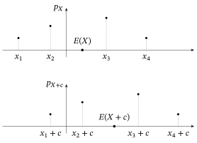
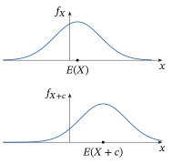
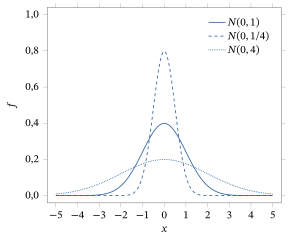
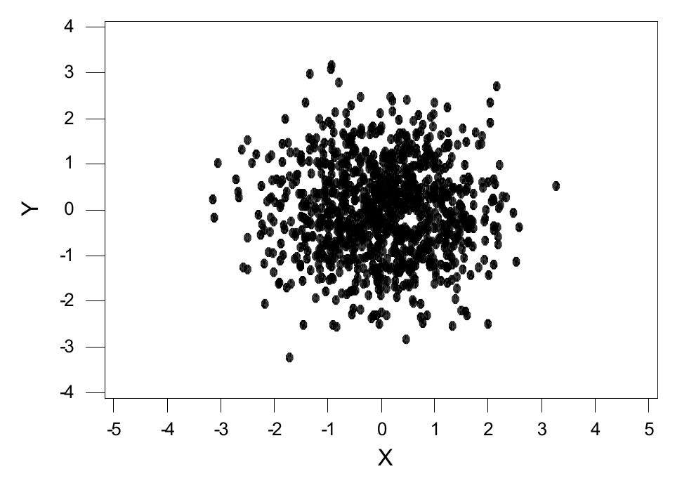
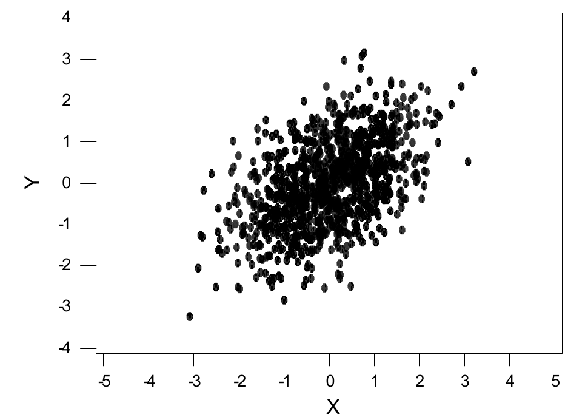
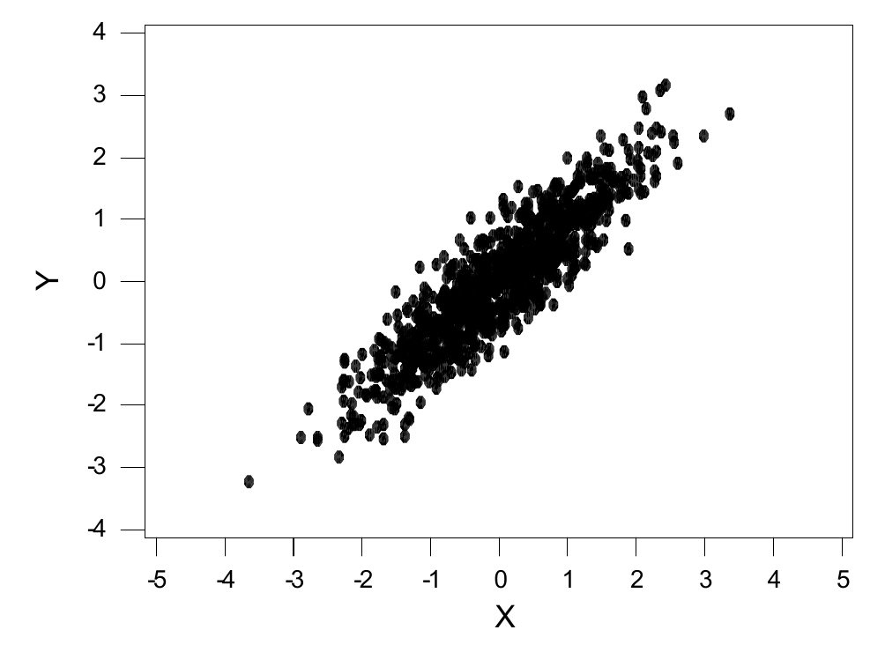
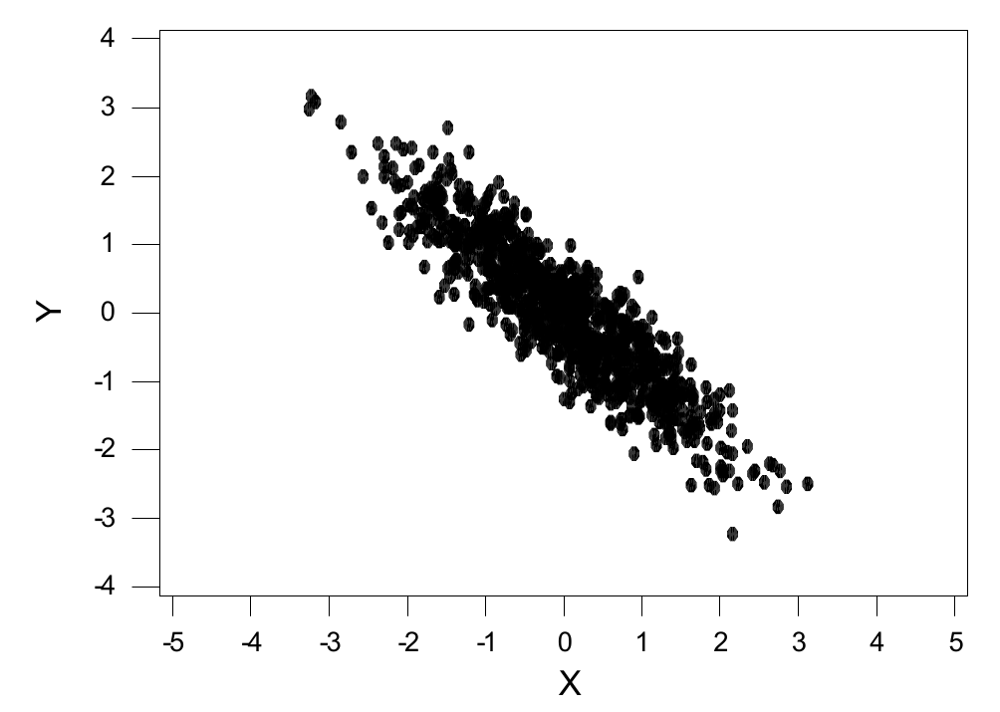
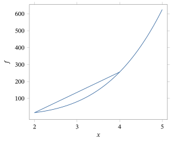
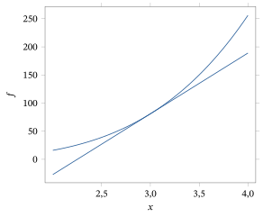

Capítulo 3Esperança
Esboço do capítulo
- Seção 1 O Caso Discreto
- Seção 2 O Caso Absolutamente Contínuo
- Seção 3 Variância, Covariância e Correlação
- Seção 4 Funções Geradoras
- Seção 5 Esperança Condicional
- Seção 6 Desigualdades
- Seção 7 Esperanças Gerais (Avançado)
- Seção 8 Demonstrações Adicionais (Avançado)
Nos dois primeiros capítulos, estudamos modelos de probabilidade, variáveis aleatórias e distribuições. Há mais um conceito que é fundamental para toda a teoria da probabilidade: o de valor esperado1.
Intuitivamente, o valor esperado de uma variável aleatória2 é o valor médio3 que a variável aleatória assume. Por exemplo, se metade das vezes \(X = 0\) e a outra metade das vezes \(X = 10\), então o valor médio de \(X\) é 5. Escreveremos isso como \(E(X) = 5\). Da mesma forma, se em um terço das vezes \(Y = 6\) e em dois terços das vezes \(Y = 15\), então \(E(Y) = 12\).
Outra interpretação do valor esperado é em termos de apostas justas. Suponha que alguém lhe ofereça um bilhete (por exemplo, um bilhete de loteria) que vale uma certa quantia aleatória \(X\). Quanto você estaria disposto a pagar para comprar o bilhete? Parece razoável que você esteja disposto a pagar o valor esperado \(E(X)\) do bilhete, e não mais que isso. No entanto, essa interpretação tem certas limitações; veja o Exemplo 3.1.12.
Para entender o valor esperado com mais precisão, consideramos separadamente as variáveis aleatórias discretas e as absolutamente contínuas.
3.1 O Caso Discreto
Começamos com uma definição.
Seja \(X\) uma variável aleatória discreta. Então o valor esperado (ou valor médio, ou média) de \(X\), denotado por \(E(X)\) (ou \(\mu_X\)), é definido por \[ E(X) = \sum_{x \in R^1} x\, P(X = x) = \sum_{x \in R^1} x\, p_X(x). \]
Teremos \(P(X = x) = 0\) exceto para os valores \(x\) que são valores possíveis de \(X\). Portanto, uma definição equivalente é a seguinte.
Seja \(X\) uma variável aleatória discreta que assume os valores distintos \(x_1, x_2, \ldots\), com \(p_i = P(X = x_i)\). Então o valor esperado de \(X\) é dado por \[ E(X) = \sum_i x_i\, p_i . \]
A definição (em qualquer das duas formas) é mais bem compreendida por meio de exemplos.
Suponha, como acima, que \(P(X = 0) = P(X = 10) = 1/2\). Então \[ E(X) = (0)(1/2) + (10)(1/2) = 5, \] como previsto.
Suponha, como acima, que \(P(Y = 6) = 1/3\) e \(P(Y = 15) = 2/3\). Então \[ E(Y) = (6)(1/3) + (15)(2/3) = 2 + 10 = 12, \] de novo como previsto.
Suponha que \(P(Z = -3) = 0{,}2\), \(P(Z = 11) = 0{,}7\) e \(P(Z = 31) = 0{,}1\). Então \[ E(Z) = (-3)(0{,}2) + (11)(0{,}7) + (31)(0{,}1) = -0{,}6 + 7{,}7 + 3{,}1 = 10{,}2. \]
Suponha que \(P(W = -3) = 0{,}2\), \(P(W = -11) = 0{,}7\) e \(P(W = 31) = 0{,}1\). Então \[ E(W) = (-3)(0{,}2) + (-11)(0{,}7) + (31)(0{,}1) = -0{,}6 - 7{,}7 + 3{,}1 = -5{,}2. \] Nesse caso, o valor esperado de \(W\) é negativo.
Vemos assim que, para uma variável aleatória discreta \(X\), uma vez conhecidas as probabilidades de que \(X = x\) (ou, de modo equivalente, uma vez conhecida a função de probabilidade4 \(p_X\)), é simples (pelo menos nos casos simples) calcular o valor esperado de \(X\).
Consideramos agora algumas das distribuições discretas comuns apresentadas na Seção 2.3.
Se \(X \equiv c\) é uma constante, então \(P(X = c) = 1\), e assim \[ E(X) = (c)(1) = c, \] como deveria ser.
Se \(X \sim \text{Bernoulli}(\theta)\), então \(P(X = 1) = \theta\) e \(P(X = 0) = 1 - \theta\), e assim \[ E(X) = (1)(\theta) + (0)(1 - \theta) = \theta. \]
Como aplicação particular disso, suponha que temos uma resposta \(s\) que assume valores numa amostra \(S\), e que \(A \subset S\). Tomando \(X(s) = I_A(s)\), temos que \(X\) é a função indicadora5 do conjunto \(A\) e, portanto, assume os valores 0 e 1. Então temos que \(P(X = 1) = P(A)\), e assim \(X \sim \text{Bernoulli}(P(A))\). Isso implica que \[ E(X) = E(I_A) = P(A). \] Portanto, mostramos que a esperança6 da função indicadora do conjunto \(A\) é igual à probabilidade de \(A\).
Se \(Y \sim \text{Binomial}(n, \theta)\), então \[ P(Y = k) = \binom{n}{k} \theta^k (1 - \theta)^{n-k} \] para \(k = 0, 1, \ldots, n\). Portanto, \begin{align*} E(Y) &= \sum_{k=0}^{n} k\, P(Y = k) = \sum_{k=0}^{n} k \binom{n}{k} \theta^k (1 - \theta)^{n-k}\\ &= \sum_{k=0}^{n} k\, \frac{n!}{k!\,(n-k)!} \theta^k (1 - \theta)^{n-k} = \sum_{k=1}^{n} \frac{n!}{(k-1)!\,(n-k)!} \theta^k (1 - \theta)^{n-k}\\ &= \sum_{k=1}^{n} \frac{n\,(n-1)!}{(k-1)!\,(n-k)!} \theta^k (1 - \theta)^{n-k} = \sum_{k=1}^{n} n \binom{n-1}{k-1} \theta^k (1 - \theta)^{n-k}. \end{align*}
Ora, o teorema binomial7 diz que, para quaisquer \(a\) e \(b\) e qualquer inteiro positivo \(m\), \[ (a + b)^m = \sum_{j=0}^{m} \binom{m}{j} a^j b^{m-j} . \] Usando isso, e fazendo \(j = k - 1\), vemos que \begin{align*} E(Y) &= \sum_{k=1}^{n} n \binom{n-1}{k-1} \theta^k (1 - \theta)^{n-k} = \sum_{j=0}^{n-1} n \binom{n-1}{j} \theta^{j+1} (1 - \theta)^{n-j-1}\\ &= n\theta \sum_{j=0}^{n-1} \binom{n-1}{j} \theta^{j} (1 - \theta)^{n-j-1} = n\theta \left( (\theta + 1 - \theta)^{n-1} \right) = n\theta. \end{align*}
Portanto, o valor esperado de \(Y\) é \(n\theta\). Note que isso é exatamente \(n\) vezes o valor esperado de \(X\), onde \(X \sim \text{Bernoulli}(\theta)\) como no Exemplo 3.1.6. Veremos no Exemplo 3.1.15 que isso não é coincidência.
Se \(Z \sim \text{Geométrica}(\theta)\), então \(P(Z = k) = (1 - \theta)^k \theta\) para \(k = 0, 1, 2, \ldots\). Portanto, \begin{equation} E(Z) = \sum_{k=0}^{\infty} k (1 - \theta)^k \theta. \tag{3.1.1} \end{equation} Logo, podemos escrever \[ (1 - \theta) E(Z) = \sum_{\ell=0}^{\infty} \ell (1 - \theta)^{\ell+1} \theta. \] Usando a substituição \(k = \ell + 1\), calculamos que \begin{equation} (1 - \theta) E(Z) = \sum_{k=1}^{\infty} (k - 1)\, (1 - \theta)^k \theta. \tag{3.1.2} \end{equation} Subtraindo (3.1.2) de (3.1.1), vemos que \begin{align*} \theta E(Z) &= (E(Z)) - ((1 - \theta) E(Z)) = \sum_{k=1}^{\infty} (k - (k - 1))\, (1 - \theta)^k \theta\\ &= \sum_{k=1}^{\infty} (1 - \theta)^k \theta = \frac{1 - \theta}{1 - (1 - \theta)}\, \theta = 1 - \theta. \end{align*} Portanto, \(\theta E(Z) = 1 - \theta\), e obtemos \(E(Z) = (1 - \theta)/\theta\).
Se \(X \sim \text{Poisson}(\lambda)\), então \(P(X = k) = e^{-\lambda} \lambda^k / k!\) para \(k = 0, 1, 2, \ldots\). Portanto, fazendo \(\ell = k - 1\), \begin{align*} E(X) &= \sum_{k=0}^{\infty} k e^{-\lambda} \frac{\lambda^k}{k!} = \sum_{k=1}^{\infty} e^{-\lambda} \frac{\lambda^k}{(k-1)!} = \lambda e^{-\lambda} \sum_{k=1}^{\infty} \frac{\lambda^{k-1}}{(k-1)!}\\ &= \lambda\, e^{-\lambda} \sum_{\ell=0}^{\infty} \frac{\lambda^{\ell}}{\ell!} = \lambda\, e^{-\lambda} e^{\lambda} = \lambda, \end{align*} e concluímos que \(E(X) = \lambda\).
Deve-se observar que os valores esperados podem às vezes ser infinitos, como mostra o exemplo a seguir.
Seja \(X\) uma variável aleatória discreta, com função de probabilidade \(p_X\) dada por \[ p_X(2^k) = 2^{-k} \] para \(k = 1, 2, 3, \ldots\), com \(p_X(x) = 0\) para os outros valores de \(x\). Isto é, \(p_X(2) = 1/2\), \(p_X(4) = 1/4\), \(p_X(8) = 1/8\) etc., enquanto \(p_X(1) = p_X(3)\) \({}= p_X(5) = p_X(6)\) \({}= \cdots = 0\).
Então é fácil verificar que \(p_X\) é de fato uma função de probabilidade válida (isto é, \(p_X(x) \ge 0\) para todo \(x\), com \(\sum_x p_X(x) = 1\)). Por outro lado, calculamos que \[ E(X) = \sum_{k=1}^{\infty} (2^k)(2^{-k}) = \sum_{k=1}^{\infty} (1) = \infty. \] Dizemos, portanto, que \(E(X) = \infty\), isto é, que o valor esperado de \(X\) é infinito.
Às vezes o valor esperado simplesmente não existe, como no exemplo a seguir.
Seja \(Y\) uma variável aleatória discreta, com função de probabilidade \(p_Y\) dada por \[ p_Y(y) = \begin{cases} 1/2y & y = 2, 4, 8, 16, \ldots\\ 1/2|y| & y = -2, -4, -8, -16, \ldots\\ 0 & \text{caso contrário.} \end{cases} \] Isto é, \(p_Y(2) = p_Y(-2) = 1/4\), \(p_Y(4) = p_Y(-4) = 1/8\), \(p_Y(8) = p_Y(-8) = 1/16\) etc. Então é fácil verificar que \(p_Y\) é de fato uma função de probabilidade válida (isto é, \(p_Y(y) \ge 0\) para todo \(y\), com \(\sum_y p_Y(y) = 1\)).
Por outro lado, calculamos que \begin{align*} E(Y) &= \sum_y y\, p_Y(y) = \sum_{k=1}^{\infty} (2^k)(1/2\,2^k) + \sum_{k=1}^{\infty} (-2^k)(1/2\,2^k)\\ &= \sum_{k=1}^{\infty} (1/2) - \sum_{k=1}^{\infty} (1/2) = \infty - \infty, \end{align*} o que é indefinido. Dizemos, portanto, que \(E(Y)\) não existe, isto é, que o valor esperado de \(Y\) é indefinido nesse caso.
Suponha que alguém lhe proponha o seguinte acordo. Você vai lançar repetidamente uma moeda honesta e receberá um prêmio de \(2^Z\) centavos, onde \(Z\) é o número de coroas que aparecem antes da primeira cara. Quanto você estaria disposto a pagar por esse acordo?
Bem, a probabilidade de o prêmio ser de \(2^z\) centavos é igual à probabilidade de você obter \(z\) coroas e depois uma cara, que é igual a \(1/2^{z+1}\). Portanto, o valor esperado do prêmio (em centavos) é igual a \[ \sum_{z=0}^{\infty} (2^z)(1/2^{z+1}) = \sum_{z=0}^{\infty} 1/2 = \infty. \] Em palavras, o valor médio do prêmio é infinito!
Portanto, de acordo com a interpretação do valor esperado como “aposta justa”, discutida no início deste capítulo, parece que você deveria estar disposto a pagar uma quantia infinita (ou, pelo menos, qualquer quantia finita, por maior que seja) para obter o prêmio prometido por esse acordo! Quanto você acha que realmente deveria estar disposto a pagar por ele?8
Suponha que, no paradoxo de São Petersburgo (Exemplo 3.1.12), fique combinado que o prêmio será truncado em \(2^{30}\) centavos (o que é pouco mais de US$ 10 milhões!). Isto é, o prêmio será o mesmo do acordo original, exceto que ele será congelado quando ultrapassar \(2^{30}\) centavos. Formalmente, o prêmio agora é igual a \(2^{\min(30, Z)}\) centavos, onde \(Z\) é como antes.
Quanto você estaria disposto a pagar por esse novo prêmio? Bem, o valor esperado do novo prêmio (em centavos) é igual a \begin{align*} \sum_{z=1}^{\infty} (2^{\min(30, z)})(1/2^{z+1}) &= \sum_{z=1}^{30} (2^z)(1/2^{z+1}) + \sum_{z=31}^{\infty} (2^{30})(1/2^{z+1})\\ &= \sum_{z=1}^{30} (1/2) + (2^{30})(1/2^{31}) = 31/2 = 15{,}5. \end{align*} Isto é, truncar o prêmio em pouco mais de US$ 10 milhões muda enormemente o seu valor esperado: de infinito para menos de 16 centavos! 9
Na teoria da utilidade, costuma-se supor que cada pessoa tem uma função utilidade \(U\) tal que, se ela ganha \(x\) centavos, sua quantidade de “utilidade” (isto é, benefício, alegria ou prazer) é igual a \(U(x)\). Nesse contexto, o truncamento do Exemplo 3.1.13 pode ser visto não como uma mudança nas regras do jogo, mas como correspondente a uma função utilidade da forma \(U(x) = \min(x, 2^{30})\). Em palavras, isso diz que sua utilidade é igual à quantia de dinheiro que você recebe, até chegar a \(2^{30}\) centavos (aproximadamente US$ 10 milhões); a partir daí, você não se importa mais com dinheiro.10 O resultado do Exemplo 3.1.13 diz então que, com essa função utilidade, o paradoxo de São Petersburgo vale só 15,5 centavos para você — mesmo que seu valor esperado seja infinito.
Muitas vezes precisamos calcular valores esperados de funções de variáveis aleatórias. Felizmente, isso não é muito difícil, como mostra o teorema a seguir.
(a) Seja \(X\) uma variável aleatória discreta, e seja \(g : R^1 \to R^1\) uma função tal que a esperança da variável aleatória \(g(X)\) existe. Então \[ E(g(X)) = \sum_x g(x)\, P(X = x). \](b) Sejam \(X\) e \(Y\) variáveis aleatórias discretas, e seja \(h : R^2 \to R^1\) uma função tal que a esperança da variável aleatória \(h(X, Y)\) existe. Então \[ E(h(X, Y)) = \sum_{x,y} h(x, y) P(X = x,\ Y = y). \]
Demonstramos aqui a parte (b). A parte (a) segue então simplesmente tomando \(h(x, y) = g(x)\) e observando que \[ \sum_{x,y} g(x)\, P(X = x,\ Y = y) = \sum_x g(x)\, P(X = x). \]
Seja \(Z = h(X, Y)\). Temos que \begin{align*} E(Z) &= \sum_z z\, P(Z = z) = \sum_z z\, P(h(X, Y) = z)\\ &= \sum_z z \sum_{\substack{x,y\\ h(x,y)=z}} P(X = x,\ Y = y) = \sum_{x,y} \sum_{\substack{z\\ z=h(x,y)}} z\, P(X = x,\ Y = y)\\ &= \sum_{x,y} h(x, y)\, P(X = x,\ Y = y), \end{align*} como afirmado.
Uma das propriedades mais importantes do valor esperado é que ele é linear, como enunciado a seguir.
Sejam \(X\) e \(Y\) variáveis aleatórias discretas, sejam \(a\) e \(b\) números reais, e tome \(Z = aX + bY\). Então \(E(Z) = aE(X) + bE(Y)\).
Seja \(p_{X,Y}\) a função de probabilidade conjunta de \(X\) e \(Y\). Então, usando o Teorema 3.1.1, \begin{align*} E(Z) &= \sum_{x,y} (ax + by)\, p_{X,Y}(x, y) = a \sum_{x,y} x\, p_{X,Y}(x, y) + b \sum_{x,y} y\, p_{X,Y}(x, y)\\ &= a \sum_x x \sum_y p_{X,Y}(x, y) + b \sum_y y \sum_x p_{X,Y}(x, y). \end{align*} Como \(\sum_y p_{X,Y}(x, y) = p_X(x)\) e \(\sum_x p_{X,Y}(x, y) = p_Y(y)\), temos que \[ E(Z) = a \sum_x x\, p_X(x) + b \sum_y y\, p_Y(y) = aE(X) + bE(Y), \] como afirmado.
Sejam \(X \sim \text{Binomial}(n, \theta_1)\) e \(Y \sim \text{Geométrica}(\theta_2)\). Quanto vale \(E(3X - 2Y)\)?
Já sabemos (Exemplos 3.1.6 e 3.1.7) que \(E(X) = n\,\theta_1\) e \(E(Y) = (1 - \theta_2)/\theta_2\). Portanto, pelo Teorema 3.1.2, \(E(3X - 2Y) = 3E(X) - 2E(Y)\) \({}= 3n\theta_1 - 2(1 - \theta_2)/\theta_2\).
Seja \(Y \sim \text{Binomial}(n, \theta)\). Então sabemos (cf. Exemplo 2.3.3) que podemos pensar em \(Y = X_1 + \cdots + X_n\), onde cada \(X_i \sim \text{Bernoulli}(\theta)\) (de fato, \(X_i = 1\) se a \(i\)-ésima moeda der cara, e \(X_i = 0\) caso contrário). Como \(E(X_i) = \theta\) para cada \(i\), segue imediatamente do Teorema 3.1.2 que \[ E(Y) = E(X_1) + \cdots + E(X_n) = \theta + \cdots + \theta = n\theta. \] Isso dá a mesma resposta do Exemplo 3.1.7, mas com muito menos trabalho.
Suponha que \(X\) seja uma variável aleatória e que \(Y = c\) seja uma constante. Então, pelo Teorema 3.1.2, temos que \(E(X + c) = E(X) + c\). Disso vemos que o valor médio \(\mu_X\) de \(X\) é uma medida da locação da distribuição de probabilidade de \(X\). Por exemplo, se \(X\) assume o valor \(x\) com probabilidade \(p\) e o valor \(y\) com probabilidade \(1 - p\), então a média de \(X\) é \(\mu_X = px + (1 - p)y\), que é um valor entre \(x\) e \(y\). Para uma constante \(c\), a distribuição de probabilidade de \(X + c\) está concentrada nos pontos \(x + c\) e \(y + c\), com probabilidades \(p\) e \(1 - p\), respectivamente. A média de \(X + c\) é \(\mu_X + c\), que está entre os pontos \(x + c\) e \(y + c\), isto é, a média se desloca junto com a distribuição de probabilidade. Também é verdade que, se \(X\) está concentrada no conjunto finito de pontos \(x_1 < x_2 < \cdots < x_k\), então \(x_1 \le \mu_X \le x_k\), e a média se desloca exatamente como deslocamos a distribuição. Isso está ilustrado na Figura 3.1.1 para uma distribuição concentrada em \(k = 4\) pontos. Usando os resultados da Seção 2.6.1, temos que \(p_{X+c}(x) = p_X(x - c)\).

O Teorema 3.1.2 diz, em particular, que \(E(X + Y) = E(X) + E(Y)\), isto é, que a esperança preserva somas. É razoável perguntar se a mesma propriedade vale para produtos. Isto é, temos necessariamente \(E(XY) = E(X)E(Y)\)? Em geral, a resposta é não, como mostra o exemplo a seguir.
Sejam \(X\) e \(Y\) variáveis aleatórias discretas, com função de probabilidade conjunta dada por \[ p_{X,Y}(x, y) = \begin{cases} 1/2 & x = 3,\ y = 5\\ 1/6 & x = 3,\ y = 9\\ 1/6 & x = 6,\ y = 5\\ 1/6 & x = 6,\ y = 9\\ 0 & \text{caso contrário.} \end{cases} \] Então \[ E(X) = \sum_x x\, P(X = x) = (3)(1/2 + 1/6) + (6)(1/6 + 1/6) = 4 \] e \[ E(Y) = \sum_y y\, P(Y = y) = (5)(1/2 + 1/6) + (9)(1/6 + 1/6) = 19/3, \] enquanto \begin{align*} E(XY) &= \sum_z z\, P(XY = z)\\ &= (3)(5)(1/2) + (3)(9)(1/6) + (6)(5)(1/6) + (6)(9)(1/6)\\ &= 26. \end{align*} Como \((4)(19/3) \ne 26\), vemos que \(E(X)\, E(Y) \ne E(XY)\) nesse caso.
Por outro lado, se \(X\) e \(Y\) são independentes, então de fato temos \(E(X)E(Y) = E(XY)\).
Sejam \(X\) e \(Y\) variáveis aleatórias discretas independentes. Então \(E(XY) = E(X)E(Y)\).
A independência implica (ver Teorema 2.8.3) que \(P(X = x,\ Y = y) = P(X = x)\, P(Y = y)\). Usando isso, calculamos, pelo Teorema 3.1.1, que \begin{align*} E(XY) &= \sum_{x,y} xy\, P(X = x,\ Y = y) = \sum_{x,y} xy\, P(X = x)\, P(Y = y)\\ &= \left( \sum_x x\, P(X = x) \right) \left( \sum_y y\, P(Y = y) \right) = E(X)\, E(Y), \end{align*} como afirmado.
O Teorema 3.1.3 será usado com frequência nos capítulos seguintes, assim como a importante propriedade a seguir.
Sejam \(X\) e \(Y\) variáveis aleatórias discretas, e suponha que \(X \le Y\). (Lembre que isso significa \(X(s) \le Y(s)\) para todo \(s \in S\).) Então \(E(X) \le E(Y)\).
Seja \(Z = Y - X\). Então \(Z\) também é discreta. Além disso, como \(X \le Y\), temos \(Z \ge 0\), de modo que todos os valores possíveis de \(Z\) são não negativos. Portanto, se listarmos os valores possíveis de \(Z\) como \(z_1, z_2, \ldots\), então \(z_i \ge 0\) para todo \(i\), de modo que \[ E(Z) = \sum_i z_i\, P(Z = z_i) \ge 0. \] Mas, pelo Teorema 3.1.2, \(E(Z) = E(Y) - E(X)\). Portanto, \(E(Y) - E(X) \ge 0\), de modo que \(E(Y) \ge E(X)\).
Resumo da Seção 3.1
- O valor esperado \(E(X)\) de uma variável aleatória \(X\) representa o valor médio que ela assume a longo prazo.
- Se \(X\) é discreta, então \(E(X) = \sum_x x\, P(X = x)\).
- Foram calculados os valores esperados das distribuições de Bernoulli, binomial, geométrica e de Poisson.
- O valor esperado tem uma interpretação em termos de apostas justas, mas essas interpretações exigem a teoria da utilidade para refletir com precisão o comportamento humano.
- Valores esperados de funções de uma ou duas variáveis aleatórias também podem ser calculados somando os valores da função multiplicados pelas probabilidades.
- A esperança é linear e monótona.
- Se \(X\) e \(Y\) são independentes, então \(E(XY) = E(X)\, E(Y)\). Mas, sem independência, essa propriedade pode falhar.
Exercícios
3.1.1 Calcule \(E(X)\) quando a função de probabilidade de \(X\) é dada por cada uma das seguintes. (a) \[ p_X(x) = \begin{cases} 1/7 & x = -4\\ 2/7 & x = 0\\ 4/7 & x = 3\\ 0 & \text{caso contrário} \end{cases} \](b) \[ p_X(x) = \begin{cases} 2^{-x-1} & x = 0, 1, 2, \ldots\\ 0 & \text{caso contrário} \end{cases} \](c) \[ p_X(x) = \begin{cases} 2^{-x+6} & x = 7, 8, 9, \ldots\\ 0 & \text{caso contrário} \end{cases} \]
3.1.2 Sejam \(X\) e \(Y\) com função de probabilidade conjunta dada por \[ p_{X,Y}(x, y) = \begin{cases} 1/7 & x = 5,\ y = 0\\ 1/7 & x = 5,\ y = 3\\ 1/7 & x = 5,\ y = 4\\ 3/7 & x = 8,\ y = 0\\ 1/7 & x = 8,\ y = 4\\ 0 & \text{caso contrário,} \end{cases} \] como no Exemplo 2.7.5. Calcule cada um dos seguintes. (a) \(E(X)\)(b) \(E(Y)\)(c) \(E(3X + 7Y)\)(d) \(E(X^2)\)(e) \(E(Y^2)\)(f) \(E(XY)\)(g) \(E(XY + 14)\)
3.1.3 Sejam \(X\) e \(Y\) com função de probabilidade conjunta dada por \[ p_{X,Y}(x, y) = \begin{cases} 1/2 & x = 2,\ y = 10\\ 1/6 & x = -7,\ y = 10\\ 1/12 & x = 2,\ y = 12\\ 1/12 & x = -7,\ y = 12\\ 1/12 & x = 2,\ y = 14\\ 1/12 & x = -7,\ y = 14\\ 0 & \text{caso contrário.} \end{cases} \] Calcule cada um dos seguintes. (a) \(E(X)\)(b) \(E(Y)\)(c) \(E(X^2)\)(d) \(E(Y^2)\)(e) \(E(X^2 + Y^2)\)(f) \(E(XY - 4Y)\)
3.1.4 Sejam \(X \sim \text{Bernoulli}(\theta_1)\) e \(Y \sim \text{Binomial}(n, \theta_2)\). Calcule \(E(4X - 3Y)\).
3.1.5 Sejam \(X \sim \text{Geométrica}(\theta)\) e \(Y \sim \text{Poisson}(\lambda)\). Calcule \(E(8X - Y + 12)\).
3.1.6 Sejam \(Y \sim \text{Binomial}(100;\ 0{,}3)\) e \(Z \sim \text{Poisson}(7)\). Calcule \(E(Y + Z)\).
3.1.7 Sejam \(X \sim \text{Binomial}(80, 1/4)\) e \(Y \sim \text{Poisson}(3/2)\). Suponha que \(X\) e \(Y\) sejam independentes. Calcule \(E(XY)\).
3.1.8 Começando com uma moeda de 1 centavo, suponha que você lance um dado honesto de seis faces e receba um número adicional de moedas de 1 centavo igual a três vezes o número que aparece no dado. Seja \(X\) o número total de moedas que você tem no fim. Calcule \(E(X)\).
3.1.9 Suponha que você comece com oito moedas de 1 centavo e lance uma moeda honesta. Se a moeda der cara, você fica com todas as suas moedas de 1 centavo; se der coroa, você tem que devolver metade delas. Seja \(X\) o número total de moedas de 1 centavo que você tem no fim. Calcule \(E(X)\).
3.1.10 Suponha que você lance duas moedas honestas. Seja \(Y = 3\) se as duas moedas mostrarem o mesmo resultado; caso contrário, seja \(Y = 5\). Calcule \(E(Y)\).
3.1.11 Suponha que você lance dois dados honestos de seis faces. (a) Seja \(Z\) a soma dos dois números obtidos. Calcule \(E(Z)\).(b) Seja \(W\) o produto dos dois números obtidos. Calcule \(E(W)\).
3.1.12 Suponha que você lance uma moeda honesta e um dado honesto de seis faces. Seja \(X\) o produto do número de caras (isto é, 0 ou 1) pelo número que aparece no dado. Calcule \(E(X)\). (Sugestão: não se esqueça do Teorema 3.1.3.)
3.1.13 Suponha que você lance um dado honesto de seis faces e depois lance tantas moedas quanto o número que aparece no dado. (Por exemplo, se o dado mostrar 4, você lança quatro moedas.) Seja \(Y\) o número de caras obtidas. Calcule \(E(Y)\).
3.1.14 Suponha que você lance três moedas honestas, e seja \(X\) o cubo do número de caras obtidas. Calcule \(E(X)\).
Problemas
3.1.15 Suponha que você comece com uma moeda de 1 centavo e lance repetidamente uma moeda honesta. Cada vez que der cara, antes da primeira coroa, você ganha mais duas moedas de 1 centavo. Seja \(X\) o número total de moedas de 1 centavo que você tem no fim. Calcule \(E(X)\).
3.1.16 Suponha que você comece com uma moeda de 1 centavo e lance repetidamente uma moeda honesta. Cada vez que der cara, antes da primeira coroa, seu número de moedas de 1 centavo é dobrado. Seja \(X\) o número total de moedas de 1 centavo que você tem no fim. Calcule \(E(X)\).
3.1.17 Sejam \(X \sim \text{Geométrica}(\theta)\) e \(Y = \min(X, 100)\). (a) Calcule \(E(Y)\).(b) Calcule \(E(Y - X)\).
3.1.18 Dê um exemplo de variável aleatória \(X\) tal que \(E\big(\min(X, 100)\big) = E(X)\).
3.1.19 Dê um exemplo de variável aleatória \(X\) tal que \(E(\min(X, 100)) = E(X)/2\).
3.1.20 Dê um exemplo de função de probabilidade conjunta \(p_{X,Y}\) para variáveis aleatórias \(X\) e \(Y\) tal que \(X \sim \text{Bernoulli}(1/4)\) e \(Y \sim \text{Bernoulli}(1/2)\), mas \(E(XY) \ne 1/8\).
3.1.21 Para \(X \sim \text{Hipergeométrica}(N, M, n)\), prove que \(E(X) = nM/N\).
3.1.22 Para \(X \sim \text{Binomial Negativa}(r, \theta)\), prove que \(E(X) = r(1 - \theta)/\theta\). (Sugestão: argumente que, se \(X_1, \ldots, X_r\) são independentes e identicamente distribuídas13 Geométrica\((\theta)\), então \(X = X_1 + \cdots\) \({}+ X_r \sim \text{Binomial Negativa}(r, \theta)\).)
3.1.23 Suponha que \((X_1, X_2, X_3) \sim \text{Multinomial}(n, \theta_1, \theta_2, \theta_3)\). Prove que \(E(X_i) = n\theta_i\).
Desafios
3.1.24 Seja \(X \sim \text{Geométrica}(\theta)\). Calcule \(E(X^2)\).
3.1.25 Suponha que \(X\) seja uma variável aleatória discreta tal que \(E(\min(X, M)) = E(X)\). Prove que \(P(X > M) = 0\).
Tópicos para discussão
3.1.26 Quanto você estaria disposto a pagar pelo acordo correspondente ao paradoxo de São Petersburgo (ver Exemplo 3.1.12)? Justifique sua resposta.
3.1.27 Que função utilidade \(U\) (como no texto que segue o Exemplo 3.1.13) descreve melhor a sua atitude pessoal em relação ao dinheiro? Por quê?
3.2 O Caso Absolutamente Contínuo
Suponha agora que \(X\) seja absolutamente contínua14, com função densidade15 \(f_X\). Como podemos calcular \(E(X)\) nesse caso? Por analogia com o caso discreto, poderíamos tentar calcular \(\sum_x x\, P(X = x)\), mas, como \(P(X = x)\) é sempre zero, essa soma também é sempre zero.
Por outro lado, se \(\epsilon\) é um número positivo pequeno, poderíamos tentar aproximar \(E(X)\) por \[ E(X) \approx \sum_i i\epsilon\, P(i\epsilon \le X < (i + 1)\epsilon), \] em que a soma é sobre todos os inteiros \(i\). Isso faz sentido porque, se \(\epsilon\) é pequeno e \(i\epsilon \le X < (i + 1)\epsilon\), então \(X \approx i\epsilon\).
Ora, sabemos que \[ P(i\epsilon \le X < (i + 1)\epsilon) = \int_{i\epsilon}^{(i+1)\epsilon} f_X(x)\, dx. \] Isso nos diz que \[ E(X) \approx \sum_i \int_{i\epsilon}^{(i+1)\epsilon} i\epsilon\, f_X(x)\, dx. \] Além disso, nessa integral, \(i\epsilon \le x < (i + 1)\epsilon\). Logo, \(i\epsilon \approx x\). Vemos, portanto, que \[ E(X) \approx \sum_i \int_{i\epsilon}^{(i+1)\epsilon} x\, f_X(x)\, dx = \int_{-\infty}^{\infty} x\, f_X(x)\, dx. \] Isso motiva a definição a seguir.
Seja \(X\) uma variável aleatória absolutamente contínua, com função densidade \(f_X\). Então o valor esperado de \(X\) é dado por \[ E(X) = \int_{-\infty}^{\infty} x\, f_X(x)\, dx. \]
A partir dessa definição, não é muito difícil calcular os valores esperados de muitas das distribuições absolutamente contínuas usuais.
Seja \(X \sim \text{Uniforme}[0, 1]\), de modo que a densidade de \(X\) é dada por \[ f_X(x) = \begin{cases} 1 & 0 \le x \le 1\\ 0 & \text{caso contrário.} \end{cases} \] Logo, \[ E(X) = \int_{-\infty}^{\infty} x\, f_X(x)\, dx = \int_0^1 x\, dx = \frac{x^2}{2}\,\bigg|_{x=0}^{x=1} = 1/2, \] como era de esperar.
Seja \(X \sim \text{Uniforme}[L, R]\), de modo que a densidade de \(X\) é dada por \[ f_X(x) = \begin{cases} 1/(R - L) & L \le x \le R\\ 0 & \text{caso contrário.} \end{cases} \] Logo, \begin{align*} E(X) &= \int_{-\infty}^{\infty} x\, f_X(x)\, dx = \int_L^R x\, \frac{1}{R - L}\, dx = \frac{x^2}{2(R - L)}\,\bigg|_{x=L}^{x=R}\\ &= \frac{R^2 - L^2}{2(R - L)} = \frac{(R - L)(R + L)}{2(R - L)} = \frac{R + L}{2}, \end{align*} novamente como era de esperar.
Seja \(Y \sim \text{Exponencial}(\lambda)\), de modo que a densidade de \(Y\) é dada por \[ f_Y(y) = \begin{cases} \lambda e^{-\lambda y} & y \ge 0\\ 0 & y < 0. \end{cases} \] Logo, a integração por partes17, com \(u = y\) e \(dv = \lambda e^{-\lambda y}\) (de modo que \(du = dy\), \(v = -e^{-\lambda y}\)), leva a \begin{align*} E(Y) &= \int_{-\infty}^{\infty} y\, f_Y(y)\, dy = \int_0^{\infty} y\, \lambda e^{-\lambda y}\, dy = -\, y e^{-\lambda y}\Big|_0^{\infty} + \int_0^{\infty} e^{-\lambda y}\, dy\\ &= \int_0^{\infty} e^{-\lambda y}\, dy = -\,\frac{e^{-\lambda y}}{\lambda}\,\bigg|_0^{\infty} = -\frac{0 - 1}{\lambda} = \frac{1}{\lambda}. \end{align*} Em particular, se \(\lambda = 1\), então \(Y \sim \text{Exponencial}(1)\) e \(E(Y) = 1\).
Seja \(Z \sim N(0, 1)\), de modo que a densidade de \(Z\) é dada por \[ f_Z(z) = \phi(z) = \frac{1}{\sqrt{2\pi}} e^{-z^2/2}. \] Logo, \begin{align} E(Z) &= \int_{-\infty}^{\infty} z\, f_Z(z)\, dz \notag\\ &= \int_{-\infty}^{\infty} z\, \frac{1}{\sqrt{2\pi}} e^{-z^2/2}\, dz \notag\\ &= \int_{-\infty}^{0} z\, \frac{1}{\sqrt{2\pi}} e^{-z^2/2}\, dz + \int_0^{\infty} z\, \frac{1}{\sqrt{2\pi}} e^{-z^2/2}\, dz. \tag{3.2.1} \end{align} Mas, usando a substituição \(w = -z\), vemos que \[ \int_{-\infty}^{0} z\, \frac{1}{\sqrt{2\pi}} e^{-z^2/2}\, dz = \int_0^{\infty} (-w) \frac{1}{\sqrt{2\pi}} e^{-w^2/2}\, dw. \] Então as duas integrais em (3.2.1) se cancelam, e ficamos com \(E(Z) = 0\).
Assim como no caso de variáveis discretas, as médias de variáveis aleatórias absolutamente contínuas também podem ser infinitas ou indefinidas.
Seja \(X\) com função densidade dada por \[ f_X(x) = \begin{cases} 1/x^2 & x \ge 1\\ 0 & \text{caso contrário.} \end{cases} \] Então \[ E(X) = \int_{-\infty}^{\infty} x\, f_X(x)\, dx = \int_1^{\infty} x\, (1/x^2)\, dx = \int_1^{\infty} (1/x)\, dx = \log x\,\Big|_{x=1}^{x=\infty} = \infty. \] Logo, o valor esperado de \(X\) é infinito.
Seja \(Y\) com função densidade dada por \[ f_Y(y) = \begin{cases} 1/2y^2 & y \ge 1\\ 1/2y^2 & y \le -1\\ 0 & \text{caso contrário.} \end{cases} \] Então \begin{align*} E(Y) &= \int_{-\infty}^{\infty} y\, f_Y(y)\, dy = \int_{-\infty}^{-1} y (1/y^2)\, dy + \int_1^{\infty} y (1/y^2)\, dy\\ &= -\int_1^{\infty} (1/y)\, dy + \int_1^{\infty} (1/y)\, dy = -\infty + \infty, \end{align*} que é indefinido.18 Logo, o valor esperado de \(Y\) é indefinido (isto é, não existe) nesse caso.
O Teorema 3.1.1 continua valendo no caso contínuo, da seguinte forma.
(a) Seja \(X\) uma variável aleatória absolutamente contínua, com função densidade \(f_X\), e seja \(g : R^1 \to R^1\) uma função qualquer. Então, quando a esperança de \(g(X)\) existe, \[ E\left(g(X)\right) = \int_{-\infty}^{\infty} g(x)\, f_X(x)\, dx. \](b) Sejam \(X\) e \(Y\) variáveis aleatórias conjuntamente absolutamente contínuas19, com função densidade conjunta20 \(f_{X,Y}\), e seja \(h : R^2 \to R^1\) uma função qualquer. Então, quando a esperança de \(h(X, Y)\) existe, \[ E\left(h(X, Y)\right) = \int_{-\infty}^{\infty}\int_{-\infty}^{\infty} h(x, y)\, f_{X,Y}(x, y)\, dx\, dy. \]
Não demonstraremos o Teorema 3.2.1 aqui; no entanto, vamos usá-lo com frequência. Como primeira aplicação desse resultado, demonstramos que os valores esperados de variáveis aleatórias absolutamente contínuas continuam sendo lineares.
Sejam \(X\) e \(Y\) variáveis aleatórias conjuntamente absolutamente contínuas, e sejam \(a\) e \(b\) números reais. Então \(E(aX + bY) = aE(X) + bE(Y)\).
Seja \(f_{X,Y}\) a função densidade conjunta de \(X\) e \(Y\). Então, usando o Teorema 3.2.1, calculamos21 \begin{align*} E(Z) &= \int_{-\infty}^{\infty}\int_{-\infty}^{\infty} (ax + by)\, f_{X,Y}(x, y)\, dx\, dy\\ &= a\int_{-\infty}^{\infty}\int_{-\infty}^{\infty} x f_{X,Y}(x, y)\, dx\, dy + b\int_{-\infty}^{\infty}\int_{-\infty}^{\infty} y f_{X,Y}(x, y)\, dx\, dy\\ &= a\int_{-\infty}^{\infty} x \left(\int_{-\infty}^{\infty} f_{X,Y}(x, y)\, dy\right) dx\\ &\quad + b\int_{-\infty}^{\infty} y \left(\int_{-\infty}^{\infty} f_{X,Y}(x, y)\, dx\right) dy. \end{align*} Mas \(\int_{-\infty}^{\infty} f_{X,Y}(x, y)\, dy\) \({}= f_X(x)\) e \(\int_{-\infty}^{\infty} f_{X,Y}(x, y)\, dx\) \({}= f_Y(y)\), de modo que \[ E(Z) = a\int_{-\infty}^{\infty} x f_X(x)\, dx + b\int_{-\infty}^{\infty} y f_Y(y)\, dy = aE(X) + bE(Y), \] como afirmado.
Assim como no caso discreto, temos \(E(X + c) = E(X) + c\) para uma variável aleatória absolutamente contínua \(X\). Observe, no entanto, que isso não decorre do Teorema 3.2.2, porque a constante \(c\) é uma variável aleatória discreta, e não absolutamente contínua. Na verdade, precisamos de um tratamento22 mais geral da esperança para obter esse resultado (ver a Seção 3.7). De qualquer forma, o resultado é verdadeiro, e novamente temos que a média de uma variável aleatória serve como medida da locação da distribuição de probabilidade de \(X\). Na Figura 3.2.1, traçamos as densidades e as médias das variáveis aleatórias absolutamente contínuas \(X\) e \(X + c\). Os resultados de mudança de variável23 da Seção 2.6.2 dão \(f_{X+c}(x) = f_X(x - c)\).

Seja \(X \sim N(\mu, \sigma^2)\). Então sabemos (cf. Exercício 2.6.3) que, se \(Z = (X - \mu)/\sigma\), então \(Z \sim N(0, 1)\). Logo, podemos escrever \(X = \mu + \sigma Z\), em que \(Z \sim N(0, 1)\). Mas sabemos (ver o Exemplo 3.2.4) que \(E(Z) = 0\) e (ver o Exemplo 3.1.5) que \(E(\mu) = \mu\). Logo, usando o Teorema 3.2.2, \(E(X) = E(\mu + \sigma Z)\) \({}= E(\mu) + \sigma E(Z)\) \({}= \mu + \sigma (0)\) \({}= \mu\).
Se \(X\) e \(Y\) são independentes, então os resultados a seguir mostram que novamente temos \(E(XY) = E(X)\, E(Y)\).
Sejam \(X\) e \(Y\) variáveis aleatórias conjuntamente absolutamente contínuas e independentes. Então \(E(XY) = E(X)E(Y)\).
A independência implica (Teorema 2.8.3) que \(f_{X,Y}(x, y) = f_X(x)\, f_Y(y)\). Usando isso, junto com o Teorema 3.2.1, calculamos \begin{align*} E(XY) &= \int_{-\infty}^{\infty}\int_{-\infty}^{\infty} xy\, f_{X,Y}(x, y)\, dx\, dy = \int_{-\infty}^{\infty}\int_{-\infty}^{\infty} xy\, f_X(x) f_Y(y)\, dx\, dy\\ &= \left(\int_{-\infty}^{\infty} x\, f_X(x)\, dx\right) \left(\int_{-\infty}^{\infty} y\, f_Y(y)\, dy\right) = E(X)E(Y), \end{align*} como afirmado.
A propriedade de monotonicidade (Teorema 3.1.4) também continua valendo.
Sejam \(X\) e \(Y\) variáveis aleatórias conjuntamente contínuas, e suponha que \(X \le Y\). Então \(E(X) \le E(Y)\).
Seja \(f_{X,Y}\) a função densidade conjunta de \(X\) e \(Y\). Como \(X \le Y\), a densidade \(f_{X,Y}\) pode ser escolhida de modo que \(f_{X,Y}(x, y) = 0\) sempre que \(x > y\). Agora, seja \(Z = Y - X\). Então, pelo Teorema 3.2.1(b), \[ E(Z) = \int_{-\infty}^{\infty}\int_{-\infty}^{\infty} (y - x)\, f_{X,Y}(x, y)\, dx\, dy. \] Como \(f_{X,Y}(x, y) = 0\) sempre que \(x > y\), isso implica que \(E(Z) \ge 0\). Mas, pelo Teorema 3.2.2, \(E(Z) = E(Y) - E(X)\). Logo, \(E(Y) - E(X) \ge 0\), de modo que \(E(Y) \ge E(X)\).
Resumo da Seção 3.2
- Se \(X\) é absolutamente contínua, então \(E(X) = \int x\, f_X(x)\, dx\).
- Foram calculados os valores esperados das distribuições uniforme, exponencial e normal.
- A esperança de variáveis aleatórias absolutamente contínuas é linear e monótona.
- Se \(X\) e \(Y\) são independentes, então continuamos tendo \(E(XY) = E(X)\, E(Y)\).
Exercícios
3.2.1 Calcule \(C\) e \(E(X)\) quando a função densidade de \(X\) é dada por cada uma das expressões a seguir. (a) \[ f_X(x) = \begin{cases} C & 5 \le x \le 9\\ 0 & \text{caso contrário} \end{cases} \](b) \[ f_X(x) = \begin{cases} C(x + 1) & 6 \le x \le 8\\ 0 & \text{caso contrário} \end{cases} \](c) \[ f_X(x) = \begin{cases} Cx^4 & -5 \le x \le -2\\ 0 & \text{caso contrário} \end{cases} \]
3.2.2 Sejam \(X\) e \(Y\) com densidade conjunta \[ f_{X,Y}(x, y) = \begin{cases} 4x^2y + 2y^5 & 0 \le x \le 1,\ 0 \le y \le 1\\ 0 & \text{caso contrário,} \end{cases} \] como nos Exemplos 2.7.6 e 2.7.7. Calcule cada um dos itens a seguir. (a) \(E(X)\)(b) \(E(Y)\)(c) \(E(3X + 7Y)\)(d) \(E(X^2)\)(e) \(E(Y^2)\)(f) \(E(XY)\)(g) \(E(XY + 14)\)
3.2.3 Sejam \(X\) e \(Y\) com densidade conjunta \[ f_{X,Y}(x, y) = \begin{cases} (4xy + 3x^2y^2)/18 & 0 \le x \le 1,\ 0 \le y \le 3\\ 0 & \text{caso contrário.} \end{cases} \] Calcule cada um dos itens a seguir. (a) \(E(X)\)(b) \(E(Y)\)(c) \(E(X^2)\)(d) \(E(Y^2)\)(e) \(E(Y^4)\)(f) \(E(X^2Y^3)\)
3.2.4 Sejam \(X\) e \(Y\) com densidade conjunta \[ f_{X,Y}(x, y) = \begin{cases} 6xy + (9/2)x^2y^2 & 0 \le y \le x \le 1\\ 0 & \text{caso contrário.} \end{cases} \] Calcule cada um dos itens a seguir. (a) \(E(X)\)(b) \(E(Y)\)(c) \(E(X^2)\)(d) \(E(Y^2)\)(e) \(E(Y^4)\)(f) \(E(X^2Y^3)\)
3.2.5 Sejam \(X \sim \text{Uniforme}[3, 7]\) e \(Y \sim \text{Exponencial}(9)\). Calcule \(E(-5X - 6Y)\).
3.2.6 Sejam \(X \sim \text{Uniforme}[-12, -9]\) e \(Y \sim N(-8, 9)\). Calcule \(E(11X + 14Y + 3)\).
3.2.7 Sejam \(Y \sim \text{Exponencial}(9)\) e \(Z \sim \text{Exponencial}(8)\). Calcule \(E(Y + Z)\).
3.2.8 Sejam \(Y \sim \text{Exponencial}(9)\) e \(Z \sim \text{Gama}(5, 4)\). Calcule \(E(Y + Z)\). (Você pode usar o Problema 3.2.16 abaixo.)
3.2.9 Suponha que \(X\) tenha função densidade \(f(x) = 3/20(x^2 + x^3)\) para \(0 < x < 2\) e, caso contrário, \(f(x) = 0\). Calcule \(E(X)\), \(E(X^2)\) e \(E(X^3)\) e ordene-os do maior para o menor.
3.2.10 Suponha que \(X\) tenha função densidade \(f(x) = 12/7(x^2 + x^3)\) para \(0 < x < 1\) e, caso contrário, \(f(x) = 0\). Calcule \(E(X)\), \(E(X^2)\) e \(E(X^3)\) e ordene-os do maior para o menor.
3.2.11 Suponha que as alturas dos homens (em centímetros) sigam a distribuição \(N(174, 20^2)\), enquanto as das mulheres seguem a distribuição \(N(160, 15^2)\). Calcule a média da altura total de um casal formado por um homem e uma mulher.
3.2.12 Suponha que \(X\) e \(Y\) sejam independentes, com \(E(X) = 5\) e \(E(Y) = 6\). Para cada uma das variáveis \(Z\) a seguir, calcule \(E(Z)\) ou explique por que não é possível determinar \(E(Z)\) com as informações disponíveis. (a) \(Z = X + Y\)(b) \(Z = XY\)(c) \(Z = 2X - 4Y\)(d) \(Z = 2X(3 + 4Y)\)(e) \(Z = (2 + X)(3 + 4Y)\)(f) \(Z = (2 + X)(3X + 4Y)\)
3.2.13 Suponha que dardos sejam lançados aleatoriamente contra uma parede. Seja \(X\) a distância (em centímetros) da borda esquerda da ponta do dardo até a extremidade esquerda da parede, e seja \(Y\) a distância da borda direita da ponta do dardo até a extremidade esquerda da parede. Suponha que a ponta do dardo tenha 0,1 centímetro de espessura e que \(E(X) = 214\). Calcule \(E(Y)\).
3.2.14 Seja \(X\) a altura média de todos os cidadãos, medida até o alto da cabeça, e seja \(Y\) a altura média de todos os cidadãos, medida até o alto da cabeça ou do chapéu (o que for mais alto). Temos necessariamente \(E(Y) \ge E(X)\)? Por quê?
3.2.15 Suponha que os times de basquete A e B tenham cinco jogadores cada e que cada integrante do time A seja “marcado” por um único integrante do time B. Suponha que se observe que cada integrante do time A é mais alto que o marcador correspondente do time B. Decorre necessariamente que a altura média do time A é maior que a altura média do time B? Por quê?
Problemas
3.2.16 Sejam \(\alpha > 0\) e \(\lambda > 0\), e seja \(X \sim \text{Gama}(\alpha, \lambda)\). Prove que \(E(X) = \alpha/\lambda\). (Sugestão: as contas são um tanto parecidas com as do Problema 2.4.15. Você também vai precisar da propriedade (2.4.7) da função gama24.)
3.2.17 Suponha que \(X\) siga a distribuição logística25 (ver o Problema 2.4.18). Prove que \(E(X) = 0\).
3.2.18 Suponha que \(X\) siga a distribuição Weibull\((\alpha)\) (ver o Problema 2.4.19). Prove que \(E(X) = \Gamma\left(\alpha^{-1} + 1\right)\).
3.2.19 Suponha que \(X\) siga a distribuição Pareto\((\alpha)\) (ver o Problema 2.4.20) para \(\alpha > 1\). Prove que \(E(X) = 1/(\alpha - 1)\). Quanto vale \(E(X)\) quando \(0 < \alpha \le 1\)?
3.2.20 Suponha que \(X\) siga a distribuição de Cauchy26 (ver o Problema 2.4.21). Argumente que \(E(X)\) não existe. (Sugestão: calcule a integral em duas partes, onde o integrando é positivo e onde o integrando é negativo.)
3.2.21 Suponha que \(X\) siga a distribuição de Laplace27 (ver o Problema 2.4.22). Prove que \(E(X) = 0\).
3.2.22 Suponha que \(X\) siga a distribuição Beta\((a, b)\) (ver o Problema 2.4.24). Prove que \(E(X) = a/(a + b)\).
3.2.23 Suponha que \((X_1, X_2) \sim \text{Dirichlet}(\alpha_1, \alpha_2, \alpha_3)\) (ver o Problema 2.7.17). Prove que \(E(X_i) = \alpha_i/(\alpha_1 + \alpha_2 + \alpha_3)\).
3.3 Variância, Covariância e Correlação
Agora que entendemos o valor esperado, podemos usá-lo para definir várias outras quantidades de interesse. Os valores numéricos dessas quantidades dão informação sobre a distribuição de variáveis aleatórias.
Dada uma variável aleatória \(X\), sabemos que o valor médio de \(X\) será \(E(X)\). Mas isso não nos diz nada sobre o quanto \(X\) tende a se afastar de \(E(X)\). Para isso, temos a definição a seguir.
A variância28 de uma variável aleatória \(X\) é a quantidade \begin{equation} \sigma_X^2 = \Var(X) = E\Bigl((X - \mu_X)^2\Bigr), \tag{3.3.1} \end{equation} em que \(\mu_X = E(X)\) é a média de \(X\).
Notamos que também é possível escrever (3.3.1) como \(\Var(X) = E\bigl((X - E(X))^2\bigr)\); mas os vários usos de “\(E\)” podem confundir. Além disso, como \((X - \mu_X)^2\) é sempre não negativa, sua esperança está sempre definida, de modo que a variância de \(X\) está sempre definida.
Intuitivamente, a variância \(\Var(X)\) é uma medida de quão espalhada é a distribuição de \(X\), ou de quão aleatória \(X\) é, ou de quanto \(X\) varia, como ilustra o exemplo a seguir.
Sejam \(X\) e \(Y\) duas variáveis aleatórias discretas, com funções de probabilidade \[ p_X(x) = \begin{cases} 1 & x = 10\\ 0 & \text{caso contrário} \end{cases} \] e \[ p_Y(y) = \begin{cases} 1/2 & y = 5\\ 1/2 & y = 15\\ 0 & \text{caso contrário,} \end{cases} \] respectivamente.
Então \(E(X) = E(Y) = 10\). Porém, \[ \Var(X) = (10 - 10)^2(1) = 0, \] enquanto \[ \Var(Y) = (5 - 10)^2(1/2) + (15 - 10)^2(1/2) = 25. \] Vemos assim que, embora \(X\) e \(Y\) tenham o mesmo valor esperado, a variância de \(Y\) é muito maior que a de \(X\). Isso corresponde ao fato de que \(Y\) é mais aleatória que \(X\); isto é, ela varia mais do que \(X\).
Seja \(X\) com função de probabilidade dada por \[ p_X(x) = \begin{cases} 1/2 & x = 2\\ 1/6 & x = 3\\ 1/6 & x = 4\\ 1/6 & x = 5\\ 0 & \text{caso contrário.} \end{cases} \] Então \(E(X) = (2)(1/2)\) \({}+ (3)(1/6) + (4)(1/6)\) \({}+ (5)(1/6) = 3\). Logo, \[ \Var(X) = ((2 - 3)^2)\frac{1}{2} + ((3 - 3)^2)\frac{1}{6} + ((4 - 3)^2)\frac{1}{6} + ((5 - 3)^2)\frac{1}{6} = 4/3. \]
Seja \(Y \sim \text{Bernoulli}(\theta)\). Então \(E(Y) = \theta\). Logo, \begin{align*} \Var(Y) &= E((Y - \theta)^2) = ((1 - \theta)^2)(\theta) + ((0 - \theta)^2)(1 - \theta)\\ &= \theta - 2\theta^2 + \theta^3 + \theta^2 - \theta^3 = \theta - \theta^2 = \theta(1 - \theta). \end{align*}
O quadrado em (3.3.1) faz com que a “escala” de \(\Var(X)\) seja diferente da escala de \(X\). Por exemplo, se \(X\) estivesse medindo uma distância em metros (\(m\)), então \(\Var(X)\) estaria medindo em metros quadrados (\(m^2\)). Se passássemos então de metros para pés, teríamos de multiplicar \(X\) por cerca de \(3{,}28084\), mas teríamos de multiplicar \(\Var(X)\) por cerca de \((3{,}28084)^2\).
Para corrigir esse problema de “escala”, basta tirar a raiz quadrada, como a seguir.
O desvio padrão29 de uma variável aleatória \(X\) é a quantidade \[ \sigma_X = \Sd(X) = \sqrt{\Var(X)} = \sqrt{E((X - \mu_X)^2)}. \]
É razoável perguntar por que, em (3.3.1), precisamos do quadrado. Ora, se simplesmente omitíssemos o quadrado e considerássemos \(E((X - \mu_X))\), obteríamos sempre zero (porque \(\mu_X = E(X)\)), o que é inútil. Por outro lado, poderíamos usar \(E(|X - \mu_X|)\). Isso seria, como (3.3.1), uma medida válida da distância média entre \(X\) e \(\mu_X\). Além disso, não teria o “problema de escala” que \(\Var(X)\) tem. Porém, veremos que \(\Var(X)\) tem muitas propriedades convenientes. Já \(E(|X - \mu_X|)\) é muito difícil de manipular. Assim, é puramente por conveniência que definimos a variância por \(E((X - \mu_X)^2)\) em vez de \(E(|X - \mu_X|)\).
A variância será muito importante em todo o restante deste livro. Por isso, fazemos uma pausa para apresentar algumas propriedades importantes de \(\Var\).
Seja \(X\) uma variável aleatória qualquer, com valor esperado \(\mu_X = E(X)\) e variância \(\Var(X)\). Então valem as seguintes afirmações: (a) \(\Var(X) \ge 0\).(b) Se \(a\) e \(b\) são números reais, \(\Var(aX + b) = a^2 \Var(X)\).(c) \(\Var(X) = E(X^2) - (\mu_X)^2\) \({}= E(X^2) - E(X)^2\). (Isto é, a variância é igual ao segundo momento menos o quadrado do primeiro momento.)(d) \(\Var(X) \le E(X^2)\).
(a) Isso é imediato, porque sempre temos \((X - \mu_X)^2 \ge 0\).
(b) Notamos que \(\mu_{aX+b} = E(aX + b)\) \({}= aE(X) + b = a\mu_X\) \({}+ b\), por linearidade. Logo, usando de novo a linearidade, \begin{align*} \Var(aX + b) &= E\Bigl((aX + b - \mu_{aX+b})^2\Bigr) = E\Bigl((aX + b - a\mu_X - b)^2\Bigr)\\ &= a^2 E\Bigl((X - \mu_X)^2\Bigr) = a^2 \Var(X). \end{align*}
(c) Novamente, usando a linearidade, \begin{align*} \Var(X) &= E\Bigl((X - \mu_X)^2\Bigr) = E\Bigl(X^2 - 2X\mu_X + (\mu_X)^2\Bigr)\\ &= E(X^2) - 2E(X)\mu_X + (\mu_X)^2 = E(X^2) - 2(\mu_X)^2 + (\mu_X)^2\\ &= E(X^2) - (\mu_X)^2. \end{align*}
(d) Isso segue imediatamente da parte (c), porque temos \(-(\mu_X)^2 \le 0\).
O Teorema 3.3.1 muitas vezes oferece maneiras mais fáceis de calcular a variância, como nos exemplos a seguir.
Seja \(W \sim \text{Exponencial}(\lambda)\), de modo que \(f_W(w) = \lambda e^{-\lambda w}\). Então \(E(W) = 1/\lambda\). Além disso, usando integração por partes, \begin{align*} E(W^2) &= \int_0^\infty w^2 \lambda e^{-\lambda w}\, dw = \int_0^\infty 2w e^{-\lambda w}\, dw\\ &= (2/\lambda) \int_0^\infty w \lambda e^{-\lambda w}\, dw = (2/\lambda) E(W) = 2/\lambda^2. \end{align*} Logo, pela parte (c) do Teorema 3.3.1, \[ \Var(W) = E(W^2) - (E(W))^2 = (2/\lambda^2) - (1/\lambda)^2 = 1/\lambda^2. \]
Seja \(W \sim \text{Exponencial}(\lambda)\) e seja \(Y = 5W + 3\). Então, pelo exemplo anterior, \(\Var(W) = 1/\lambda^2\). Então, usando a parte (b) do Teorema 3.3.1, \[ \Var(Y) = \Var(5W + 3) = 25 \Var(W) = 25/\lambda^2. \]
Como \(\sqrt{a^2} = |a|\), a parte (b) do Teorema 3.3.1 implica imediatamente um fato correspondente sobre o desvio padrão.
Seja \(X\) uma variável aleatória qualquer, com desvio padrão \(\Sd(X)\), e seja \(a\) um número real qualquer. Então \(\Sd(aX) = |a| \Sd(X)\).
Seja \(W \sim \text{Exponencial}(\lambda)\) e seja \(Y \sim 5W + 3\). 30 Então, usando os exemplos acima, vemos que \(\Sd(W) = (\Var(W))^{1/2}\) \({}= \bigl(1/\lambda^2\bigr)^{1/2}\) \({}= 1/\lambda\). Além disso, \(\Sd(Y) = (\Var(Y))^{1/2}\) \({}= \bigl(25/\lambda^2\bigr)^{1/2}\) \({}= 5/\lambda\). Isso está de acordo com o Corolário 3.3.1, pois \(\Sd(Y) = |5| \Sd(W)\).
Suponha que \(X \sim N(\mu, \sigma^2)\). No Exemplo 3.2.7 estabelecemos que \(E(X) = \mu\). Agora calculamos \(\Var(X)\).
Considere primeiro \(Z \sim N(0, 1)\). Então, pelo Teorema 3.3.1(c), temos que \[ \Var(Z) = E\bigl(Z^2\bigr) = \int_{-\infty}^{\infty} z^2 \frac{1}{\sqrt{2\pi}} \exp\left\{-\frac{z^2}{2}\right\} dz. \] Então, tomando \(u = z\), \(dv = z \exp\{-z^2/2\}\) (de modo que \(du = 1\), \(v = -\exp\{-z^2/2\}\)) e usando integração por partes, obtemos \[ \Var(Z) = -\frac{1}{\sqrt{2\pi}} z \exp\left\{-\frac{z^2}{2}\right\}\bigg|_{-\infty}^{\infty} + \int_{-\infty}^{\infty} \frac{1}{\sqrt{2\pi}} \exp\left\{-\frac{z^2}{2}\right\} dz = 1 \] e \(\Sd(Z) = 1\).
Agora, para \(\sigma > 0\), tome \(X = \mu + \sigma Z\). Temos então \(X \sim N(\mu, \sigma^2)\). Pelo Teorema 3.3.1(b), temos que \[ \Var(X) = \Var(\mu + \sigma Z) = \sigma^2 \Var(Z) = \sigma^2 \] e \(\Sd(X) = \sigma\). Isso estabelece que a variância da distribuição \(N(\mu, \sigma^2)\) é \(\sigma^2\) e que o desvio padrão é \(\sigma\).
Na Figura 3.3.1, traçamos os gráficos de três distribuições normais, todas com média 0, mas com variâncias diferentes.
O efeito da variância sobre o grau de espalhamento da distribuição em torno da média fica bem claro nesses gráficos. À medida que \(\sigma^2\) aumenta, a distribuição se torna mais difusa; à medida que diminui, ela se torna mais concentrada em torno da média 0.

Até aqui consideramos a variância de uma variável aleatória de cada vez. Mas o conceito relacionado de covariância31 mede a relação entre duas variáveis aleatórias.
A covariância de duas variáveis aleatórias \(X\) e \(Y\) é dada por \[ \Cov(X, Y) = E\left((X - \mu_X)(Y - \mu_Y)\right), \] em que \(\mu_X = E(X)\) e \(\mu_Y = E(Y)\).
Sejam \(X\) e \(Y\) variáveis aleatórias discretas, com função de probabilidade conjunta \(p_{X,Y}\) dada por \[ p_{X,Y}(x, y) = \begin{cases} 1/2 & x = 3,\ y = 4\\ 1/3 & x = 3,\ y = 6\\ 1/6 & x = 5,\ y = 6\\ 0 & \text{caso contrário.} \end{cases} \] Então \(E(X) = (3)(1/2) + (3)(1/3) + (5)(1/6) = 10/3\) e \(E(Y) = (4)(1/2) + (6)(1/3) + (6)(1/6) = 5\). Logo, \begin{align*} \Cov(X, Y) &= E((X - 10/3)(Y - 5))\\ &= (3 - 10/3)\,(4 - 5)/2 + (3 - 10/3)\,(6 - 5)/3 + (5 - 10/3)\,(6 - 5)/6\\ &= 1/3. \end{align*}
Seja \(X\) uma variável aleatória qualquer com \(\Var(X) > 0\). Seja \(Y = 3X\) e seja \(Z = -4X\). Então \(\mu_Y = 3\mu_X\) e \(\mu_Z = -4\mu_X\). Logo, \begin{align*} \Cov(X, Y) &= E((X - \mu_X)(Y - \mu_Y)) = E((X - \mu_X)(3X - 3\mu_X))\\ &= 3\, E((X - \mu_X)^2) = 3 \Var(X), \end{align*} enquanto \begin{align*} \Cov(X, Z) &= E((X - \mu_X)(Z - \mu_Z)) = E((X - \mu_X)((-4)X - (-4)\mu_X))\\ &= (-4)E((X - \mu_X)^2) = -4 \Var(X). \end{align*} Note, em particular, que \(\Cov(X, Y) > 0\), enquanto \(\Cov(X, Z) < 0\). Intuitivamente, isso diz que \(Y\) aumenta quando \(X\) aumenta, ao passo que \(Z\) diminui quando \(X\) aumenta.
Começamos com alguns fatos simples sobre a covariância. Obviamente, sempre temos \(\Cov(X, Y) = \Cov(Y, X)\). Temos também o resultado a seguir.
Sejam \(X\), \(Y\) e \(Z\) três variáveis aleatórias. Sejam \(a\) e \(b\) números reais. Então \[ \Cov(aX + bY, Z) = a \Cov(X, Z) + b \Cov(Y, Z). \]
Note que, por linearidade, \(\mu_{aX+bY} \equiv E(aX + bY)\) \({}= aE(X) + bE(Y) \equiv a\mu_X\) \({}+ b\mu_Y\). Logo, \begin{align*} \Cov(aX + bY, Z) &= E\bigl((aX + bY - \mu_{aX+bY})(Z - \mu_Z)\bigr)\\ &= E\left((aX + bY - a\mu_X - b\mu_Y)(Z - \mu_Z)\right)\\ &= E\left((aX - a\mu_X + bY - b\mu_Y)(Z - \mu_Z)\right)\\ &= aE\left((X - \mu_X)(Z - \mu_Z)\right) + bE\left((Y - \mu_Y)(Z - \mu_Z)\right)\\ &= a \Cov(X, Z) + b \Cov(Y, Z), \end{align*} e o resultado está estabelecido.
Temos também a identidade a seguir, que é semelhante ao Teorema 3.3.1(c).
Sejam \(X\) e \(Y\) duas variáveis aleatórias. Então \[ \Cov(X, Y) = E(XY) - E(X)E(Y). \]
Usando a linearidade, temos \begin{align*} \Cov(X, Y) &= E\left((X - \mu_X)(Y - \mu_Y)\right) = E\left(XY - \mu_X Y - X\mu_Y + \mu_X\mu_Y\right)\\ &= E(XY) - \mu_X E(Y) - E(X)\mu_Y + \mu_X\mu_Y\\ &= E(XY) - \mu_X\mu_Y - \mu_X\mu_Y + \mu_X\mu_Y = E(XY) - \mu_X\mu_Y. \end{align*}
Se \(X\) e \(Y\) são independentes, então \(\Cov(X, Y) = 0\).
Como \(X\) e \(Y\) são independentes, sabemos (Teoremas 3.1.3 e 3.2.3) que \(E(XY) = E(X)\,E(Y)\). Logo, o resultado segue imediatamente do Teorema 3.3.3.
Notamos que a recíproca32 do Corolário 3.3.2 é falsa, como mostra o exemplo a seguir.
Sejam \(X\) e \(Y\) variáveis aleatórias discretas, com função de probabilidade conjunta \(p_{X,Y}\) dada por \[ p_{X,Y}(x, y) = \begin{cases} 1/4 & x = 3,\ y = 5\\ 1/4 & x = 4,\ y = 9\\ 1/4 & x = 7,\ y = 5\\ 1/4 & x = 6,\ y = 9\\ 0 & \text{caso contrário.} \end{cases} \] Então \(E(X) = (3)(1/4)\) \({}+ (4)(1/4) + (7)(1/4)\) \({}+ (6)(1/4) = 5\), \(E(Y) = (5)(1/4)\) \({}+ (9)(1/4) + (5)(1/4)\) \({}+ (9)(1/4) = 7\) e \(E(XY) = (3)(5)(1/4)\) \({}+ (4)(9)(1/4)\) \({}+ (7)(5)(1/4)\) \({}+ (6)(9)(1/4)\) \({}= 35\). Obtemos \(\Cov(X, Y) = E(XY) - E(X)\,E(Y)\) \({}= 35 - (5)(7)\) \({}= 0\).
Por outro lado, \(X\) e \(Y\) claramente não são independentes. Por exemplo, \(P(X = 4) > 0\) e \(P(Y = 5) > 0\), mas \(P(X = 4,\ Y = 5) = 0\), de modo que \(P(X = 4,\ Y = 5) \ne P(X = 4)\,P(Y = 5)\).
Há também uma relação importante entre variância e covariância.
(a) Para quaisquer variáveis aleatórias \(X\) e \(Y\), \[ \Var(X + Y) = \Var(X) + \Var(Y) + 2 \Cov(X, Y). \](b) Mais geralmente, para quaisquer variáveis aleatórias \(X_1, \dots, X_n\), \[ \Var\left(\sum_i X_i\right) = \sum_i \Var(X_i) + 2 \sum_{i<j} \Cov(X_i, X_j). \]
Demonstramos aqui a parte (b); a parte (a) segue então como o caso particular \(n = 2\).
Note que, por linearidade, \[ \mu_{\sum_i X_i} \equiv E\left(\sum_i X_i\right) = \sum_i E(X_i) \equiv \sum_i \mu_{X_i}. \] Portanto, temos que \begin{align*} &\Var\left(\sum_i X_i\right)\\ &= E\left(\left(\sum_i X_i - \mu_{\sum_i X_i}\right)^2\right) = E\left(\left(\sum_i X_i - \sum_i \mu_i\right)^2\right)\\ &= E\left(\left(\sum_i (X_i - \mu_i)\right)^2\right) = E\left(\left(\sum_i (X_i - \mu_i)\right)\left(\sum_j (X_j - \mu_j)\right)\right)\\ &= E\left(\sum_{i,j} (X_i - \mu_i)\,(X_j - \mu_j)\right) = \sum_{i,j} E((X_i - \mu_i)\,(X_j - \mu_j))\\ &= \sum_{i=j} E((X_i - \mu_i)\,(X_j - \mu_j)) + 2 \sum_{i<j} E((X_i - \mu_i)\,(X_j - \mu_j))\\ &= \sum_i \Var(X_i) + 2 \sum_{i<j} \Cov(X_i, X_j). \end{align*}
Combinando o Teorema 3.3.4 com o Corolário 3.3.2, obtemos o seguinte.
(a) Se \(X\) e \(Y\) são independentes, então \(\Var(X + Y) = \Var(X) + \Var(Y)\).(b) Se \(X_1, \dots, X_n\) são independentes, então \(\Var\bigl(\sum_{i=1}^n X_i\bigr)\) \({}= \sum_{i=1}^n \Var(X_i)\).
Um uso do Corolário 3.3.3 é o seguinte.
Seja \(Y \sim \text{Binomial}(n, \theta)\). Quanto vale \(\Var(Y)\)? Lembre que podemos escrever \[ Y = X_1 + X_2 + \cdots + X_n, \] em que os \(X_i\) são independentes, com \(X_i \sim \text{Bernoulli}(\theta)\). Já vimos que \(\Var(X_i) = \theta(1 - \theta)\). Logo, pelo Corolário 3.3.3, \begin{align*} \Var(Y) &= \Var(X_1) + \Var(X_2) + \cdots + \Var(X_n)\\ &= \theta(1 - \theta) + \theta(1 - \theta) + \cdots + \theta(1 - \theta) = n\theta(1 - \theta). \end{align*}
Outro conceito muito ligado à covariância é a correlação33.
A correlação de duas variáveis aleatórias \(X\) e \(Y\) é dada por \[ \Corr(X, Y) = \frac{\Cov(X, Y)}{\Sd(X) \Sd(Y)} = \frac{\Cov(X, Y)}{\sqrt{\Var(X) \Var(Y)}}, \] desde que \(0 < \Var(X) < \infty\) e \(0 < \Var(Y) < \infty\).
Como no Exemplo 3.3.2, 34 seja \(X\) uma variável aleatória qualquer com \(\Var(X) > 0\), seja \(Y = 3X\) e seja \(Z = -4X\). Então \(\Cov(X, Y) = 3 \Var(X)\) e \(\Cov(X, Z) = -4 \Var(X)\). Mas, pelo Corolário 3.3.1, \(\Sd(Y) = 3 \Sd(X)\) e \(\Sd(Z) = 4 \Sd(X)\). Logo, \[ \Corr(X, Y) = \frac{\Cov(X, Y)}{\Sd(X) \Sd(Y)} = \frac{3 \Var(X)}{\Sd(X) 3 \Sd(X)} = \frac{\Var(X)}{\Sd(X)^2} = 1, \] porque \(\Sd(X)^2 = \Var(X)\). Temos também que \[ \Corr(X, Z) = \frac{\Cov(X, Z)}{\Sd(X) \Sd(Z)} = \frac{-4 \Var(X)}{\Sd(X) 4 \Sd(X)} = -\frac{\Var(X)}{\Sd(X)^2} = -1. \] Intuitivamente, isso diz de novo que \(Y\) aumenta quando \(X\) aumenta, ao passo que \(Z\) diminui quando \(X\) aumenta. Note, porém, que os fatores de escala \(3\) e \(-4\) se cancelaram; só os seus sinais importaram.
Veremos mais adiante, na Seção 3.6, que sempre temos \(-1 \le \Corr(X, Y) \le 1\), para quaisquer variáveis aleatórias \(X\) e \(Y\). Logo, no Exemplo 3.3.12, \(Y\) tem a maior correlação possível com \(X\) (o que faz sentido, porque \(Y\) aumenta sempre que \(X\) aumenta, sem exceção), enquanto \(Z\) tem a menor correlação possível com \(X\) (o que faz sentido, porque \(Z\) diminui sempre que \(X\) aumenta). Veremos também que \(\Corr(X, Y)\) é uma medida de até que ponto existe uma relação linear entre \(X\) e \(Y\).
Definimos essa distribuição no Exemplo 2.7.9. Acontece que, quando \((X, Y)\) segue essa distribuição conjunta35, então (pelo Problema 2.7.13) \(X \sim N(\mu_1, \sigma_1^2)\) e \(Y \sim N(\mu_2, \sigma_2^2)\). Além disso, temos que (ver Problema 3.3.17) \(\Corr(X, Y) = \rho\). Nos gráficos a seguir, traçamos amostras de \(n = 1000\) valores de \((X, Y)\) de distribuições normais bivariadas com \(\mu_1 = \mu_2 = 0\), \(\sigma_1^2 = \sigma_2^2 = 1\) e vários valores de \(\rho\). Note que usamos (2.7.1) para gerar essas amostras.
Por esses gráficos, podemos ver o efeito de \(\rho\) sobre a distribuição conjunta. A Figura 3.3.2 mostra que, quando \(\rho = 0\), a nuvem de pontos36 é aproximadamente circular. Ela se torna elíptica na Figura 3.3.3, com \(\rho = 0{,}5\), e mais concentrada em torno de uma reta na Figura 3.3.4, com \(\rho = 0{,}9\). Como veremos na Seção 3.6, os pontos ficam exatamente sobre uma reta quando \(\rho = 1\).
A Figura 3.3.5 mostra o efeito de uma correlação negativa. Com correlações positivas, o valor de \(Y\) tende a aumentar com \(X\), o que se reflete na inclinação ascendente da nuvem de pontos. Com correlações negativas, \(Y\) tende a diminuir com \(X\), o que se reflete na inclinação negativa da nuvem de pontos.




Resumo da Seção 3.3
- A variância de uma variável aleatória \(X\) mede o quanto ela tende a se afastar de sua média e é dada por \(\Var(X) = E((X - \mu_X)^2)\) \({}= E(X^2) - (E(X))^2\).
- Calculamos as variâncias de muitas distribuições usuais.
- O desvio padrão de \(X\) é igual a \(\Sd(X) = \sqrt{\Var(X)}\).
- \(\Var(X) \ge 0\) e \(\Var(aX + b) = a^2 \Var(X)\); também \(\Sd(aX + b) = |a| \Sd(X)\).
- A covariância das variáveis aleatórias \(X\) e \(Y\) mede como elas se relacionam e é dada por \(\Cov(X, Y) = E((X - \mu_X)(Y - \mu_y))\) \({}= E(XY) - E(X)\,E(Y)\). 37
- Se \(X\) e \(Y\) são independentes, então \(\Cov(X, Y) = 0\).
- \(\Var(X + Y) = \Var(X)\) \({}+ \Var(Y) + 2 \Cov(X, Y)\). Se \(X\) e \(Y\) são independentes, isso é igual a \(\Var(X) + \Var(Y)\).
- A correlação de \(X\) e \(Y\) é \(\Corr(X, Y) = \Cov(X, Y)/(\Sd(X) \Sd(Y))\).
Exercícios
3.3.1 Suponha que a função de probabilidade conjunta de \(X\) e \(Y\) seja dada por \[ p_{X,Y}(x, y) = \begin{cases} 1/2 & x = 3,\ y = 5\\ 1/6 & x = 3,\ y = 9\\ 1/6 & x = 6,\ y = 5\\ 1/6 & x = 6,\ y = 9\\ 0 & \text{caso contrário,} \end{cases} \] com \(E(X) = 4\), \(E(Y) = 19/3\) e \(E(XY) = 26\), como no Exemplo 3.1.16. (a) Calcule \(\Cov(X, Y)\).(b) Calcule \(\Var(X)\) e \(\Var(Y)\).(c) Calcule \(\Corr(X, Y)\).
3.3.2 Suponha que a função de probabilidade conjunta de \(X\) e \(Y\) seja dada por \[ p_{X,Y}(x, y) = \begin{cases} 1/7 & x = 5,\ y = 0\\ 1/7 & x = 5,\ y = 3\\ 1/7 & x = 5,\ y = 4\\ 3/7 & x = 8,\ y = 0\\ 1/7 & x = 8,\ y = 4\\ 0 & \text{caso contrário,} \end{cases} \] como no Exemplo 2.7.5. (a) Calcule \(E(X)\) e \(E(Y)\).(b) Calcule \(\Cov(X, Y)\).(c) Calcule \(\Var(X)\) e \(\Var(Y)\).(d) Calcule \(\Corr(X, Y)\).
3.3.3 Sejam \(X\) e \(Y\) com densidade conjunta \[ f_{X,Y}(x, y) = \begin{cases} 4x^2 y + 2y^5 & 0 \le x \le 1,\ 0 \le y \le 1\\ 0 & \text{caso contrário,} \end{cases} \] como no Exercício 3.2.2. Calcule \(\Corr(X, Y)\).
3.3.4 Sejam \(X\) e \(Y\) com densidade conjunta \[ f_{X,Y}(x, y) = \begin{cases} 15x^3 y^4 + 6x^2 y^7 & 0 \le x \le 1,\ 0 \le y \le 1\\ 0 & \text{caso contrário.} \end{cases} \] Calcule \(E(X)\), \(E(Y)\), \(\Var(X)\), \(\Var(Y)\), \(\Cov(X, Y)\) e \(\Corr(X, Y)\).
3.3.5 Sejam \(Y\) e \(Z\) duas variáveis aleatórias independentes, cada uma com variância positiva. Prove que \(\Corr(Y, Z) = 0\).
3.3.6 Sejam \(X\), \(Y\) e \(Z\) três variáveis aleatórias e suponha que \(X\) e \(Z\) sejam independentes. Prove que \(\Cov(X + Y, Z) = \Cov(Y, Z)\).
3.3.7 Seja \(X \sim \text{Exponencial}(3)\) e \(Y \sim \text{Poisson}(5)\). Suponha que \(X\) e \(Y\) sejam independentes. Seja \(Z = X + Y\). (a) Calcule \(\Cov(X, Z)\).(b) Calcule \(\Corr(X, Z)\).
3.3.8 Prove que a variância da distribuição Uniforme\([L, R]\) é dada pela expressão \((R - L)^2/12\).
3.3.9 Prove que \(\Var(X) = E(X(X - 1)) - E(X)E(X - 1)\). Use isso para calcular diretamente pela função de probabilidade que, quando \(X \sim \text{Binomial}(n, \theta)\), então \(\Var(X) = n\theta(1 - \theta)\).
3.3.10 Suponha que você lance três moedas honestas. Seja \(X\) o número de caras obtidas e seja \(Y = X^2\). Calcule \(E(X)\), \(E(Y)\), \(\Var(X)\), \(\Var(Y)\), \(\Cov(X, Y)\) e \(\Corr(X, Y)\).
3.3.11 Suponha que você lance dois dados honestos de seis faces. Seja \(X\) o número obtido no primeiro dado e seja \(Y\) a soma dos números obtidos nos dois dados. Calcule \(E(X)\), \(E(Y)\), \(E(XY)\) e \(\Cov(X, Y)\).
3.3.12 Suponha que você lance quatro moedas honestas. Seja \(X\) o número de caras obtidas e seja \(Y\) o número de coroas obtidas. Calcule \(\Cov(X, Y)\) e \(\Corr(X, Y)\).
3.3.13 Sejam \(X\) e \(Y\) independentes, com \(X \sim \text{Bernoulli}(1/2)\) e \(Y \sim \text{Bernoulli}(1/3)\). Seja \(Z = X + Y\) e \(W = X - Y\). Calcule \(\Cov(Z, W)\) e \(\Corr(Z, W)\).
3.3.14 Sejam \(X\) e \(Y\) independentes, com \(X \sim \text{Bernoulli}(1/2)\) e \(Y \sim N(0, 1)\). Seja \(Z = X + Y\) e \(W = X - Y\). Calcule \(\Var(Z)\), \(\Var(W)\), \(\Cov(Z, W)\) e \(\Corr(Z, W)\).
3.3.15 Suponha que você lance um dado honesto de seis faces e depois lance tantas moedas quanto o número obtido no dado. (Por exemplo, se o dado mostrar 4, você lança quatro moedas.) Seja \(X\) o número obtido no dado e \(Y\) o número de caras obtidas. Calcule \(\Cov(X, Y)\).
Problemas
3.3.16 Seja \(X \sim N(0, 1)\) e seja \(Y = cX\). (a) Calcule \(\lim_{c \searrow 0} \Cov(X, Y)\).(b) Calcule \(\lim_{c \nearrow 0} \Cov(X, Y)\).(c) Calcule \(\lim_{c \searrow 0} \Corr(X, Y)\).(d) Calcule \(\lim_{c \nearrow 0} \Corr(X, Y)\).(e) Explique por que as respostas das partes (c) e (d) não são iguais.
3.3.17 Sejam \(X\) e \(Y\) com distribuição normal bivariada, como no Exemplo 2.7.9. Prove que \(\Corr(X, Y) = \rho\). (Sugestão: use (2.7.1).)
3.3.18 Prove que a variância da distribuição Geométrica\((\theta)\) é dada por \((1 - \theta)/\theta^2\). (Sugestão: use o Exercício 3.3.9 e \(\bigl((1 - \theta)^x\bigr)''\) \({}= x(x - 1)(1 - \theta)^{x-2}\).)
3.3.19 Prove que a variância da distribuição Binomial Negativa\((r, \theta)\) é dada por \(r(1 - \theta)/\theta^2\). (Sugestão: use o Problema 3.3.18.)
3.3.20 Sejam \(\alpha > 0\) e \(\lambda > 0\), e seja \(X \sim \text{Gama}(\alpha, \lambda)\). Prove que \(\Var(X) = \alpha/\lambda^2\). (Sugestão: lembre o Problema 3.2.16.)
3.3.21 Suponha que \(X \sim \text{Weibull}(\alpha)\) (ver Problema 2.4.19). Prove que \(\Var(X) = \Gamma(2/\alpha + 1) - \Gamma^2(1/\alpha + 1)\). (Sugestão: lembre o Problema 3.2.18.)
3.3.22 Suponha que \(X \sim \text{Pareto}(\alpha)\) (ver Problema 2.4.20) para \(\alpha > 2\). Prove que \(\Var(X) = \alpha/((\alpha - 1)^2(\alpha - 2))\). (Sugestão: lembre o Problema 3.2.19.)
3.3.23 Suponha que \(X\) siga a distribuição de Laplace (ver Problema 2.4.22). Prove que \(\Var(X) = 2\). (Sugestão: lembre o Problema 3.2.21.)
3.3.24 Suponha que \(X \sim \text{Beta}(a, b)\) (ver Problema 2.4.24). Prove que \(\Var(X) = ab/((a + b)^2(a + b + 1))\). (Sugestão: lembre o Problema 3.2.22.)
3.3.25 Suponha que \((X_1, X_2, X_3) \sim \text{Multinomial}(n, \theta_1, \theta_2, \theta_3)\). Prove que \[ \Var(X_i) = n\theta_i(1 - \theta_i), \quad \Cov(X_i, X_j) = -n\theta_i\theta_j, \quad \text{quando } i \ne j. \] (Sugestão: lembre o Problema 3.1.23.)
3.3.26 Suponha que \((X_1, X_2) \sim \text{Dirichlet}(\alpha_1, \alpha_2, \alpha_3)\) (ver Problema 2.7.17). Prove que \begin{align*} \Var(X_i) &= \frac{\alpha_i(\alpha_1 + \alpha_2 + \alpha_3 - \alpha_i)}{(\alpha_1 + \alpha_2 + \alpha_3)^2(\alpha_1 + \alpha_2 + \alpha_3 + 1)},\\ \Cov(X_1, X_2) &= \frac{-\alpha_1\alpha_2}{(\alpha_1 + \alpha_2 + \alpha_3)^2(\alpha_1 + \alpha_2 + \alpha_3 + 1)}. \end{align*} (Sugestão: lembre o Problema 3.2.23.)
3.3.27 Suponha que \(X \sim \text{Hipergeométrica}(N, M, n)\). Prove que \[ \Var(X) = n\frac{M}{N}\left(1 - \frac{M}{N}\right)\frac{N - n}{N - 1}. \] (Sugestão: lembre o Problema 3.1.21 e use o Exercício 3.3.9.)
3.3.28 Suponha que você lance um dado honesto de seis faces e depois lance tantas moedas quanto o número obtido no dado. (Por exemplo, se o dado mostrar 4, você lança quatro moedas.) Seja \(X\) o número obtido no dado e \(Y\) o número de caras obtidas. Calcule \(\Corr(X, Y)\).
Desafios
3.3.29 Seja \(Y\) uma variável aleatória não negativa. Prove que \(E(Y) = 0\) se e somente se \(P(Y = 0) = 1\). (Você pode supor, para simplificar, que \(Y\) é discreta, mas o resultado vale para qualquer \(Y\).)
3.3.30 Prove que \(\Var(X) = 0\) se e somente se existe um número real \(c\) com \(P(X = c) = 1\). (Você pode usar o resultado do Desafio 3.3.29.)
3.3.31 Dê um exemplo de uma variável aleatória \(X\) tal que \(E(X) = 5\) e \(\Var(X) = \infty\).
3.4 Funções Geradoras
Seja \(X\) uma variável aleatória. Lembre que a função de distribuição acumulada38 de \(X\), definida por \(F_X(x) = P(X \le x)\), contém toda a informação sobre a distribuição de \(X\) (veja o Teorema 2.5.1). Acontece que há outras funções — a função geradora39 de probabilidade e a função geradora de momentos40 — que também fornecem informação (às vezes, toda a informação) sobre \(X\) e seus valores esperados.
Seja \(X\) uma variável aleatória (em geral, discreta). Definimos então sua função geradora de probabilidade, \(r_X\), por \(r_X(t) = E(t^X)\) para \(t \in R^1\).
Considere os exemplos de funções geradoras de probabilidade a seguir.
Se \(X \sim \text{Binomial}(n, \theta)\), então \begin{align*} r_X(t) &= E(t^X) = \sum_{i=0}^{n} P(X = i)\, t^i\\ &= \sum_{i=0}^{n} \binom{n}{i} \theta^i (1 - \theta)^{n-i} t^i\\ &= \sum_{i=0}^{n} \binom{n}{i} (t\theta)^i (1 - \theta)^{n-i} = (t\theta + 1 - \theta)^n, \end{align*} pelo teorema binomial.
Se \(Y \sim \text{Poisson}(\lambda)\), então \begin{align*} r_Y(t) &= E(t^Y) = \sum_{i=0}^{\infty} P(Y = i)\, t^i = \sum_{i=0}^{\infty} e^{-\lambda} \frac{\lambda^i}{i!} t^i\\ &= \sum_{i=0}^{\infty} e^{-\lambda} \frac{(\lambda t)^i}{i!} = e^{-\lambda} e^{\lambda t} = e^{\lambda(t-1)}. \end{align*}
O teorema a seguir nos diz que, uma vez conhecida a função geradora de probabilidade \(r_X(t)\), podemos calcular todas as probabilidades \(P(X = 0)\), \(P(X = 1)\), \(P(X = 2)\) etc.
Seja \(X\) uma variável aleatória discreta cujos valores possíveis são todos inteiros não negativos. Suponha que \(r_X(t_0) < \infty\) para algum \(t_0 > 0\). Então \begin{align*} r_X(0) &= P(X = 0),\\ r_X'(0) &= P(X = 1),\\ r_X''(0) &= 2\, P(X = 2), \end{align*} etc. Em geral, \[ r_X^{(k)}(0) = k!\, P(X = k), \] onde \(r_X^{(k)}\) é a \(k\)-ésima derivada de \(r_X\).
Como os valores possíveis são todos inteiros não negativos da forma \(i = 0, 1, 2, \ldots\), temos \begin{align*} r_X(t) &= E(t^X) = \sum_x t^x P(X = x) = \sum_{i=0}^{\infty} t^i P(X = i)\\ &= t^0 P(X = 0) + t^1 P(X = 1) + t^2 P(X = 2) + t^3 P(X = 3) + \cdots, \end{align*} de modo que \begin{equation} r_X(t) = 1 P(X = 0) + t^1 P(X = 1) + t^2 P(X = 2) + t^3 P(X = 3) + \cdots. \tag{3.4.1} \end{equation} Substituindo \(t = 0\) em (3.4.1), todos os termos se anulam, exceto o primeiro, e obtemos \(r_X(0) = P(X = 0)\). Derivando os dois lados de (3.4.1), obtemos \[ r_X'(t) = 1 P(X = 1) + 2t^1 P(X = 2) + 3t^2 P(X = 3) + \cdots, \] e tomar \(t = 0\) dá \(r_X'(0) = P(X = 1)\). Derivando mais uma vez os dois lados, obtemos \[ r_X''(t) = 2 P(X = 2) + 3 \cdot 2\, t^1 P(X = 3) + \cdots \] e tomar \(t = 0\) dá \(r_X''(0) = 2\, P(X = 2)\). Continuando dessa forma, obtemos a fórmula geral.
Aplicamos agora o Teorema 3.4.1 às distribuições binomial e de Poisson.
Pelo Exemplo 3.4.1, temos que \begin{align*} r_X(0) &= (1 - \theta)^n\\ r_X'(0) &= n(t\theta + 1 - \theta)^{n-1}(\theta)\,\Big|_{t=0} = n(1 - \theta)^{n-1}\theta\\ r_X''(0) &= n(n - 1)(t\theta + 1 - \theta)^{n-2}(\theta)(\theta)\,\Big|_{t=0} = n(n - 1)(1 - \theta)^{n-2}\theta^2, \end{align*} etc. Verifica-se assim diretamente que \begin{align*} P(X = 0) &= r_X(0)\\ P(X = 1) &= r_X'(0)\\ 2\, P(X = 2) &= r_X''(0), \end{align*} etc.
Pelo Exemplo 3.4.2, temos que \begin{align*} r_X(0) &= e^{-\lambda}\\ r_X'(0) &= \lambda e^{-\lambda}\\ r_X''(0) &= \lambda^2 e^{-\lambda}, \end{align*} etc. Verifica-se novamente que \begin{align*} P(X = 0) &= r_X(0)\\ P(X = 1) &= r_X'(0)\\ 2\, P(X = 2) &= r_X''(0), \end{align*} etc.
Pelo Teorema 3.4.1, vemos por que \(r_X\) é chamada de função geradora de probabilidade. De fato, ao menos no caso discreto com a distribuição concentrada nos inteiros não negativos, podemos realmente gerar as probabilidades de \(X\) a partir de \(r_X\). Vemos então imediatamente que, para uma variável aleatória \(X\) que assume valores apenas em \(\{0, 1, 2, \ldots\}\), \(r_X\) é única. Com isso queremos dizer que, se \(X\) e \(Y\) estão concentradas em \(\{0, 1, 2, \ldots\}\) e \(r_X = r_Y\), então \(X\) e \(Y\) têm a mesma distribuição. Essa propriedade de unicidade da função geradora de probabilidade pode ser muito útil quando se tenta determinar a distribuição de uma variável aleatória que assume valores apenas em \(\{0, 1, 2, \ldots\}\).
Está claro que a função geradora de probabilidade nos diz muito — na verdade, tudo — sobre a distribuição de variáveis aleatórias concentradas nos inteiros não negativos. Mas e quanto a outras variáveis aleatórias? Acontece que há outras quantidades, chamadas momentos, associadas a variáveis aleatórias, que são bastante informativas sobre suas distribuições.
Seja \(X\) uma variável aleatória e seja \(k\) um inteiro positivo. Então o \(k\)-ésimo momento de \(X\) é a quantidade \(E(X^k)\), desde que essa esperança exista.
Note que, se \(E(X^k)\) existe e é finita, pode-se mostrar que \(E(X^l)\) existe e é finita quando \(0 \le l < k\).
O primeiro momento é simplesmente a média da variável aleatória. Ele pode ser tomado como uma medida de onde fica, na reta real, a massa central de probabilidade de \(X\), ao menos quando essa distribuição é unimodal (tem um único pico) e não é muito assimétrica. O segundo momento \(E(X^2)\), junto com o primeiro, nos dá a variância por meio de \(\Var(X) = E(X^2) - (E(X))^2\). Portanto, os dois primeiros momentos da distribuição nos informam a localização da distribuição e a dispersão, ou grau de concentração, dessa distribuição em torno da média. Na verdade, os momentos de ordem mais alta também fornecem informação sobre a distribuição.
Muitas das distribuições mais importantes da probabilidade e da estatística têm todos os seus momentos finitos; na verdade, elas têm o que se chama de função geradora de momentos.
Seja \(X\) uma variável aleatória qualquer. Sua função geradora de momentos \(m_X\) é definida por \(m_X(s) = E(e^{sX})\) em \(s \in R^1\).
O exemplo a seguir calcula a função geradora de momentos de uma distribuição bem conhecida.
Seja \(X \sim \text{Exponencial}(\lambda)\). Então, para \(s < \lambda\), \begin{align*} m_X(s) &= E(e^{sX}) = \int_{-\infty}^{\infty} e^{sx} f_X(x)\, dx = \int_0^{\infty} e^{sx} \lambda e^{-\lambda x}\, dx\\ &= \int_0^{\infty} \lambda\, e^{(s-\lambda)x}\, dx = \frac{\lambda\, e^{(s-\lambda)x}}{s - \lambda}\,\bigg|_{x=0}^{x=\infty} = -\frac{\lambda e^{(s-\lambda)0}}{s - \lambda}\\ &= -\frac{\lambda}{s - \lambda} = \lambda(\lambda - s)^{-1}. \end{align*}
Uma comparação das Definições 3.4.1 e 3.4.3 dá imediatamente o seguinte.
Seja \(X\) uma variável aleatória qualquer. Então \(m_X(s) = r_X(e^s)\).
Esse resultado obviamente pode nos ajudar a calcular algumas funções geradoras de momentos quando já temos \(r_X\).
Seja \(Y \sim \text{Binomial}(n, \theta)\). Então sabemos que \(r_Y(t) = (t\theta + 1 - \theta)^n\). Logo, \(m_Y(s) = r_Y(e^s)\) \({}= (e^s\theta + 1 - \theta)^n\).
Seja \(Z \sim \text{Poisson}(\lambda)\). Então sabemos que \(r_Z(t) = e^{\lambda(t-1)}\). Logo, \(m_Z(s) = r_Z(e^s) = e^{\lambda(e^s - 1)}\).
O teorema a seguir nos diz que, uma vez conhecida a função geradora de momentos \(m_X(t)\), podemos calcular todos os momentos \(E(X)\), \(E(X^2)\), \(E(X^3)\) etc.
Seja \(X\) uma variável aleatória qualquer. Suponha que, para algum \(s_0 > 0\), valha \(m_X(s) < \infty\) sempre que \(s \in (-s_0, s_0)\). Então \begin{align*} m_X(0) &= 1\\ m_X'(0) &= E(X)\\ m_X''(0) &= E(X^2), \end{align*} etc. Em geral, \[ m_X^{(k)}(0) = E(X^k), \] onde \(m_X^{(k)}\) é a \(k\)-ésima derivada de \(m_X\).
Sabemos que \(m_X(s) = E(e^{sX})\). Temos \[ m_X(0) = E(e^{0X}) = E(e^0) = E(1) = 1. \] Além disso, derivando, vemos41 que \(m_X'(s) = E(X e^{sX})\), de modo que \[ m_X'(0) = E(X e^{0X}) = E(X e^0) = E(X). \] Derivando de novo, vemos que \(m_X''(s) = E(X^2 e^{sX})\), de modo que \[ m_X''(0) = E(X^2 e^{0X}) = E(X^2 e^0) = E(X^2). \] Continuando dessa forma, obtemos a fórmula geral.
Consideramos agora uma aplicação do Teorema 3.4.3.
Usando a função geradora de momentos calculada no Exemplo 3.4.5, temos \[ m_X'(s) = (-1)\lambda(\lambda - s)^{-2}(-1) = \lambda(\lambda - s)^{-2}. \] Portanto, \[ E(X) = m_X'(0) = \lambda(\lambda - 0)^{-2} = \lambda/\lambda^2 = 1/\lambda, \] como deveria ser. Além disso, \[ E(X^2) = m_X''(0) = (-2)\lambda(\lambda - 0)^{-3}(-1) = 2\lambda/\lambda^3 = 2/\lambda^2, \] de modo que temos \[ \Var(X) = E(X^2) - (E(X))^2 = (2/\lambda^2) - (1/\lambda)^2 = 1/\lambda^2. \] Isso fornece uma maneira fácil de calcular a variância de \(X\).
No Exemplo 3.4.7, obtivemos \(m_Z(s) = \exp(\lambda(e^s - 1))\). Assim, temos42 \begin{align*} E(X) &= m_X'(0) = \lambda e^0 \exp\Bigl(\lambda(e^0 - 1)\Bigr) = \lambda\\ E(X^2) &= m_X''(0) = \lambda e^0 \exp\Bigl(\lambda(e^0 - 1)\Bigr) + \Bigl(\lambda e^0\Bigr)^2 \exp\Bigl(\lambda(e^0 - 1)\Bigr) = \lambda + \lambda^2. \end{align*} Portanto, \(\Var(X) = E(X^2) - (E(X))^2\) \({}= \lambda + \lambda^2 - \lambda^2\) \({}= \lambda\).
Calcular a função geradora de momentos de uma distribuição normal também é importante, mas é um pouco mais difícil.
Se \(X \sim N(0, 1)\), então \(m_X(s) = e^{s^2/2}\).
Como \(X\) tem densidade \(\phi(x) = (2\pi)^{-1/2}\, e^{-x^2/2}\), temos que \begin{align*} m_X(s) &= E(e^{sX}) = \int_{-\infty}^{\infty} e^{sx} \phi(x)\, dx = \int_{-\infty}^{\infty} e^{sx} \frac{1}{\sqrt{2\pi}} e^{-x^2/2}\, dx\\ &= \frac{1}{\sqrt{2\pi}} \int_{-\infty}^{\infty} e^{sx - (x^2/2)}\, dx = \frac{1}{\sqrt{2\pi}} \int_{-\infty}^{\infty} e^{-(x-s)^2/2 + (s^2/2)}\, dx\\ &= e^{s^2/2} \frac{1}{\sqrt{2\pi}} \int_{-\infty}^{\infty} e^{-(x-s)^2/2}\, dx. \end{align*} Fazendo \(y = x - s\) (de modo que \(dy = dx\)), isso se torna (usando o Teorema 2.4.2) \[ m_X(s) = e^{s^2/2} \frac{1}{\sqrt{2\pi}} \int_{-\infty}^{\infty} e^{-y^2/2}\, dy = e^{s^2/2} \int_{-\infty}^{\infty} \phi(y)\, dy = e^{s^2/2}, \] como afirmado.
Uma propriedade útil tanto das funções geradoras de probabilidade quanto das funções geradoras de momentos é a seguinte.
Sejam \(X\) e \(Y\) variáveis aleatórias independentes. Então temos (a) \(r_{X+Y}(t) = r_X(t)\, r_Y(t)\), e(b) \(m_{X+Y}(t) = m_X(t)\, m_Y(t)\).
Como \(X\) e \(Y\) são independentes, \(t^X\) e \(t^Y\) também são (pelo Teorema 2.8.5). Logo, sabemos (pelos Teoremas 3.1.3 e 3.2.3) que \(E(t^X t^Y) = E(t^X)\, E(t^Y)\). Usando isso, temos \[ r_{X+Y}(t) = E\Bigl(t^{X+Y}\Bigr) = E\Bigl(t^X t^Y\Bigr) = E(t^X) E(t^Y) = r_X(t) r_Y(t). \] Analogamente, \[ m_{X+Y}(t) = E\Bigl(e^{t(X+Y)}\Bigr) = E\Bigl(e^{tX} e^{tY}\Bigr) = E(e^{tX})\, E(e^{tY}) = m_X(t) m_Y(t). \]
Seja \(Y \sim \text{Binomial}(n, \theta)\). Então, como no Exemplo 3.1.15, podemos escrever \[ Y = X_1 + \cdots + X_n, \] onde as \(\{X_i\}\) são i.i.d. com \(X_i \sim \text{Bernoulli}(\theta)\). Logo, o Teorema 3.4.5 diz que devemos ter \(r_Y(t) = r_{X_1}(t)\, r_{X_2}(t) \cdots r_{X_n}(t)\). Mas, para qualquer \(i\), \[ r_{X_i}(t) = \sum_x t^x P(X = x) = t^1\theta + t^0(1 - \theta) = \theta t + 1 - \theta. \] Logo, devemos ter \[ r_Y(t) = (\theta t + 1 - \theta)(\theta t + 1 - \theta) \cdots (\theta t + 1 - \theta) = (\theta t + 1 - \theta)^n, \] como já verificado no Exemplo 3.4.1.
As funções geradoras de momentos, quando definidas numa vizinhança de 0, definem completamente uma distribuição, no sentido a seguir. (Omitimos a demonstração, que é avançada.)
Seja \(X\) uma variável aleatória tal que, para algum \(s_0 > 0\), temos \(m_X(s) < \infty\) sempre que \(s \in (-s_0, s_0)\). Então, se \(Y\) é alguma outra variável aleatória com \(m_Y(s) = m_X(s)\) sempre que \(s \in (-s_0, s_0)\), \(X\) e \(Y\) têm a mesma distribuição.
Os Teoremas 3.4.1 e 3.4.6 fornecem uma técnica poderosa para identificar distribuições. Por exemplo, se determinamos que a função geradora de momentos de \(X\) é \(m_X(t) = \exp\bigl(s^2/2\bigr)\),44 então sabemos, pelos Teoremas 3.4.4 e 3.4.6, que \(X \sim N(0, 1)\). Podemos usar essa abordagem para determinar as distribuições de algumas variáveis aleatórias complicadas.
Suponha que \(X_i \sim N(\mu_i, \sigma_i^2)\) para \(i = 1, \ldots, n\) e que essas variáveis aleatórias sejam independentes. Considere a distribuição de \(Y = \sum_{i=1}^n X_i\).
Quando \(n = 1\), temos (pelo Problema 3.4.15) \[ m_Y(s) = \exp\left\{\mu_1 s + \frac{\sigma_1^2 s^2}{2}\right\}. \] Então, usando o Teorema 3.4.5, temos que \begin{align*} m_Y(s) &= \prod_{i=1}^n m_{X_i}(s) = \prod_{i=1}^n \exp\left\{\mu_i s + \frac{\sigma_i^2 s^2}{2}\right\}\\ &= \exp\left\{\left(\sum_{i=1}^n \mu_i\right) s + \frac{\left(\sum_{i=1}^n \sigma_i^2\right) s^2}{2}\right\}. \end{align*} Pelo Problema 3.4.15, e aplicando o Teorema 3.4.6, temos que \[ Y \sim N\left(\sum_{i=1}^n \mu_i, \sum_{i=1}^n \sigma_i^2\right). \]
As funções geradoras também podem nos ajudar com distribuições compostas, que são definidas a seguir.
Sejam \(X_1, X_2, \ldots\) i.i.d., e seja \(N\) uma variável aleatória não negativa, com valores inteiros, independente das \(\{X_i\}\). Seja \begin{equation} S = \sum_{i=1}^N X_i. \tag{3.4.2} \end{equation} Diz-se então que \(S\) tem uma distribuição composta45.
Uma distribuição composta é obtida a partir de uma soma de variáveis aleatórias i.i.d., em que o número de termos da soma é distribuído aleatoriamente, independentemente dos termos da soma. Note que \(S = 0\) quando \(N = 0\). Essas distribuições têm aplicações em áreas como seguros, em que \(X_1, X_2, \ldots\) são sinistros e \(N\) é o número de sinistros apresentados a uma seguradora durante um período. Portanto, \(S\) representa o valor total reclamado à seguradora durante o período. Obviamente, a seguradora quer estudar a distribuição de \(S\), pois isso ajudará a determinar quanto ela precisa cobrar pelo seguro para garantir lucro.
O teorema a seguir é importante no estudo de distribuições compostas.
Se \(S\) tem uma distribuição composta como em (3.4.2), então (a) \(E(S) = E(X_1) E(N)\).(b) \(m_S(s) = r_N(m_{X_1}(s))\).
Veja a Seção 3.8 para a demonstração desse resultado.
3.4.1 Funções Características (Avançado)
Um problema das funções geradoras de momentos é que elas podem ser infinitas em qualquer intervalo aberto em torno de \(s = 0\). Considere o exemplo a seguir.
Seja \(X\) uma variável aleatória com densidade \[ f_X(x) = \begin{cases} 1/x^2 & x \ge 1\\ 0 & \text{caso contrário.} \end{cases} \] Então \[ m_X(s) = E(e^{sX}) = \int_1^{\infty} e^{sx} (1/x^2)\, dx. \] Para qualquer \(s > 0\), sabemos que \(e^{sx}\) cresce mais rápido que \(x^2\), de modo que \(\lim_{x \to \infty} e^{sx}/x^2 = \infty\). Logo, \(m_X(s) = \infty\) sempre que \(s > 0\).
\(X\) tem algum momento finito? Temos que \[ E(X) = \int_1^{\infty} x(1/x^2)\, dx = \int_1^{\infty} (1/x)\, dx = \ln x \,\big|_{x=1}^{x=\infty} = \infty, \] de modo que, na verdade, o primeiro momento não existe. Daí concluímos que \(X\) não tem nenhum momento.
A variável aleatória \(X\) do exemplo acima não satisfaz a condição do Teorema 3.4.3 de que \(m_X(s) < \infty\) sempre que \(|s| < s_0\), para algum \(s_0 > 0\). Logo, o Teorema 3.4.3 (como a maioria dos outros teoremas que usam funções geradoras de momentos) não se aplica. Há, no entanto, uma função definida de modo parecido que não sofre desse defeito, dada pela definição a seguir.
Seja \(X\) uma variável aleatória qualquer. Definimos então sua função característica46, \(c_X\), por \begin{equation} c_X(s) = E(e^{isX}) \tag{3.4.3} \end{equation} para \(s \in R^1\).
Assim, a definição de \(c_X\) é igual à de \(m_X\), exceto pela introdução do número imaginário \(i = \sqrt{-1}\). Usando propriedades dos números complexos, vemos que (3.4.3) também pode ser escrita como \(c_X(s) = E(\cos(sX)) + i\, E(\sin(sX))\) para \(s \in R^1\).
Considere os exemplos a seguir.
Seja \(X \sim \text{Bernoulli}(\theta)\). Então \begin{align*} c_X(s) &= E(e^{isX}) = (e^{is0})(1 - \theta) + (e^{is1})(\theta)\\ &= (1)(1 - \theta) + e^{is}(\theta) = 1 - \theta + \theta e^{is}\\ &= 1 - \theta + \theta \cos s + i\theta \sin s. \end{align*}
Seja \(X\) com função de probabilidade dada por \[ p_X(x) = \begin{cases} 1/6 & x = 2\\ 1/3 & x = 3\\ 1/2 & x = 4\\ 0 & \text{caso contrário.} \end{cases} \] Então \begin{align*} c_X(s) &= E(e^{isX}) = (e^{is2})(1/6) + (e^{is3})(1/3) + (e^{is4})(1/2)\\ &= (1/6)\cos 2s + (1/3)\cos 3s + (1/2)\cos 4s\\ &\quad + (1/6)i \sin 2s + (1/3)i \sin 3s + i(1/2)\sin 4s. \end{align*}
Seja \(Z\) com função de probabilidade dada por \[ p_Z(z) = \begin{cases} 1/2 & z = 1\\ 1/2 & z = -1\\ 0 & \text{caso contrário.} \end{cases} \] Então \begin{align*} c_Z(s) &= E(e^{isZ}) = (e^{is})(1/2) + (e^{-is})(1/2)\\ &= (1/2)\cos(s) + (1/2)\cos(-s) + (1/2)\sin(s) + (1/2)\sin(-s)\\ &= (1/2)\cos s + (1/2)\cos s + (1/2)\sin s - (1/2)\sin s = \cos s. \end{align*} Logo, neste caso, \(c_Z(s)\) é um número real (não complexo) para todo \(s \in R^1\).
Uma vez superado nosso “medo” dos números imaginários e complexos, podemos ver que a função característica é, em alguns aspectos, muito melhor que a função geradora de momentos. A principal vantagem é que, como \(e^{isX} = \cos(sX) + i \sin(sX)\) e \(|e^{isX}| = 1\), a função característica (ao contrário da função geradora de momentos) é sempre finita (embora possa ser um número complexo).
Seja \(X\) uma variável aleatória qualquer e seja \(s\) um número real qualquer. Então \(c_X(s)\) é finita.
A função característica tem muitas propriedades parecidas com as da função geradora de momentos. Em particular, temos o seguinte. (A demonstração é igual à do Teorema 3.4.3.)
Seja \(X\) uma variável aleatória qualquer com seus \(k\) primeiros momentos finitos. Então \(c_X(0) = 1\), \(c_X'(0) = i\, E(X)\), \(c_X''(0) = i^2 E(X^2) = -E(X^2)\) etc. Em geral, \(c_X^{(k)}(0) = i^k E(X^k)\), onde \(i = \sqrt{-1}\) e \(c_X^{(k)}\) é a \(k\)-ésima derivada de \(c_X\).
Temos também o seguinte. (A demonstração é igual à do Teorema 3.4.5.)
Sejam \(X\) e \(Y\) variáveis aleatórias independentes. Então \(c_{X+Y}(s) = c_X(s)\, c_Y(s)\).
Por simplicidade, em geral não usaremos funções características neste livro. No entanto, vale a pena ter em mente que, sempre que fazemos algo com funções geradoras de momentos, em geral poderíamos fazer o mesmo com mais generalidade usando funções características.
Resumo da Seção 3.4
- A função geradora de probabilidade de uma variável aleatória \(X\) é \(r_X(t) = E(t^X)\).
- Se \(X\) é discreta, então as derivadas de \(r_X\) satisfazem \(r_X^{(k)}(0) = k!\, P(X = k)\).
- O \(k\)-ésimo momento de uma variável aleatória \(X\) é \(E(X^k)\).
- A função geradora de momentos de uma variável aleatória \(X\) é \(m_X(s) = E(e^{sX}) = r_X(e^s)\).
- As derivadas de \(m_X\) satisfazem \(m_X^{(k)}(0) = E(X^k)\), para \(k = 0, 1, 2, \ldots\).
- Se \(X\) e \(Y\) são independentes, então \(r_{X+Y}(t) = r_X(t)\, r_Y(y)\)47 e \(m_{X+Y}(s) = m_X(s)\, m_Y(s)\).
- Se \(m_X(s)\) é finita numa vizinhança de \(s = 0\), então ela caracteriza de modo único a distribuição de \(X\).
- A função característica \(c_X(s) = E(e^{isX})\) pode ser usada no lugar de \(m_X(s)\) para evitar infinitos.
Exercícios
3.4.1 Seja \(Z\) uma variável aleatória discreta com \(P(Z = z) = 1/2^z\) para \(z = 1, 2, 3, \ldots\). (a) Calcule \(r_Z(t)\). Verifique que \(r_Z'(0) = P(Z = 1)\) e \(r_Z''(0) = 2\, P(Z = 2)\).(b) Calcule \(m_Z(t)\). Verifique que \(m_Z'(0) = E(Z)\) e \(m_Z''(0) = E(Z^2)\).
3.4.2 Seja \(X \sim \text{Binomial}(n, \theta)\). Use \(m_X\) para provar que \(\Var(X) = n\theta(1 - \theta)\).
3.4.3 Seja \(Y \sim \text{Poisson}(\lambda)\). Use \(m_Y\) para calcular a média e a variância de \(Y\).
3.4.4 Seja \(Y = 3X + 4\). Calcule \(r_Y(t)\) em termos de \(r_X\).
3.4.5 Seja \(Y = 3X + 4\). Calcule \(m_Y(s)\) em termos de \(m_X\).
3.4.6 Seja \(X \sim \text{Binomial}(n, \theta)\). Calcule \(E(X^3)\), o terceiro momento de \(X\).
3.4.7 Seja \(Y \sim \text{Poisson}(\lambda)\). Calcule \(E(Y^3)\), o terceiro momento de \(Y\).
3.4.8 Suponha que \(P(X = 2) = 1/2\), \(P(X = 5) = 1/3\) e \(P(X = 7) = 1/6\). (a) Calcule \(r_X(t)\) para \(t \in R^1\).(b) Verifique que \(r_X'(0) = P(X = 1)\) e \(r_X''(0) = 2P(X = 2)\).(c) Calcule \(m_X(s)\) para \(s \in R^1\).(d) Verifique que \(m_X'(0) = E(X)\) e \(m_X''(0) = E(X^2)\).
Problemas
3.4.9 Suponha que \(f_X(x) = 1/10\) para \(0 < x < 10\), com \(f_X(x) = 0\) caso contrário. (a) Calcule \(m_X(s)\) para \(s \in R^1\).(b) Verifique que \(m_X'(0) = E(X)\). (Sugestão: regra de L'Hôpital.)
3.4.10 Seja \(X \sim \text{Geométrica}(\theta)\). Calcule \(r_X(t)\) e \(r_X''(0)/2\).
3.4.11 Seja \(X \sim \text{Binomial Negativa}(r, \theta)\). Calcule \(r_X(t)\) e \(r_X''(0)/2\).
3.4.12 Seja \(X \sim \text{Geométrica}(\theta)\). (a) Calcule \(m_X(s)\).(b) Use \(m_X\) para calcular a média de \(X\).(c) Use \(m_X\) para calcular a variância de \(X\).
3.4.13 Seja \(X \sim \text{Binomial Negativa}(r, \theta)\). (a) Calcule \(m_X(s)\).(b) Use \(m_X\) para calcular a média de \(X\).(c) Use \(m_X\) para calcular a variância de \(X\).
3.4.14 Se \(Y = a + bX\), onde \(a\) e \(b\) são constantes, mostre que \(r_Y(t) = t^a r_X(t^b)\) e \(m_Y(t) = e^{at} m_X(bt)\).
3.4.15 Seja \(Z \sim N(\mu, \sigma^2)\). Mostre que \[ m_Z(s) = \exp\left\{\mu s + \frac{\sigma^2 s^2}{2}\right\}. \] (Sugestão: escreva \(Z = \mu + \sigma X\), onde \(X \sim N(0, 1)\), e use o Teorema 3.4.4.)
3.4.16 Seja \(Y\) distribuída segundo a distribuição de Laplace (veja o Problema 2.4.22). (a) Calcule \(m_Y(s)\). (Sugestão: divida a integral em duas partes.)(b) Use \(m_Y\) para calcular a média de \(Y\).(c) Use \(m_Y\) para calcular a variância de \(Y\).
3.4.17 Calcule o \(k\)-ésimo momento da distribuição Weibull\((\alpha)\) em termos de \(\Gamma\) (veja o Problema 2.4.19).
3.4.18 Calcule o \(k\)-ésimo momento da distribuição Pareto\((\alpha)\) (veja o Problema 2.4.20). (Sugestão: faça a transformação \(u = (1 + x)^{-1}\) e lembre-se da distribuição beta.)
3.4.19 Calcule o \(k\)-ésimo momento da distribuição Log-normal48\((\tau)\) (veja o Problema 2.6.17). (Sugestão: faça a transformação \(z = \ln x\) e use o Problema 3.4.15.)
3.4.20 Prove que a função geradora de momentos da distribuição Gama\((\alpha, \lambda)\) é dada por \(\lambda^\alpha / (\lambda - t)^\alpha\) quando \(t < \lambda\).
3.4.21 Suponha que \(X_i \sim \text{Poisson}(\lambda_i)\) e que \(X_1, \ldots, X_n\) sejam independentes. Usando funções geradoras de momentos, determine a distribuição de \(Y = \sum_{i=1}^n X_i\).
3.4.22 Suponha que \(X_i \sim \text{Binomial Negativa}(r_i, \theta)\) e que \(X_1, \ldots, X_n\) sejam independentes. Usando funções geradoras de momentos, determine a distribuição de \(Y = \sum_{i=1}^n X_i\).
3.4.23 Suponha que \(X_i \sim \text{Gama}(\alpha_i, \lambda)\) e que \(X_1, \ldots, X_n\) sejam independentes. Usando funções geradoras de momentos, determine a distribuição de \(Y = \sum_{i=1}^n X_i\).
3.4.24 Suponha que \(X_1, X_2, \ldots\) sejam i.i.d. Exponencial\((\lambda)\) e \(N \sim \text{Poisson}(\lambda)\), independente das \(\{X_i\}\). Determine a função geradora de momentos de \(S_N\). Determine o primeiro momento dessa distribuição derivando essa função.
3.4.25 Suponha que \(X_1, X_2, \ldots\) sejam variáveis aleatórias i.i.d. Exponencial\((\lambda)\) e \(N \sim \text{Geométrica}(\theta)\), independente das \(\{X_i\}\). Determine a função geradora de momentos de \(S_N\). Determine o primeiro momento dessa distribuição derivando essa função.
3.4.26 Seja \(X \sim \text{Bernoulli}(\theta)\). Use \(c_X(s)\) para calcular a média de \(X\).
3.4.27 Seja \(Y \sim \text{Binomial}(n, \theta)\). (a) Calcule a função característica \(c_Y(s)\). (Sugestão: use \(c_X(s)\) do Problema 3.4.26.)(b) Use \(c_Y(s)\) para calcular a média de \(Y\).
3.4.28 A função característica da distribuição de Cauchy (veja o Problema 2.4.21) é dada por \(c(t) = e^{-|t|}\). Use isso para determinar a função característica da média amostral \[ \bar{X} = \frac{1}{n} \sum_{i=1}^n X_i \] baseada numa amostra de tamanho \(n\) da distribuição de Cauchy. Explique por que isso implica que a média amostral também tem distribuição de Cauchy. O que você acha surpreendente nesse resultado?
3.4.29 O \(k\)-ésimo cumulante (quando existe) de uma variável aleatória \(X\) é obtido calculando a \(k\)-ésima derivada de \(\ln c_X(s)\) em relação a \(s\), avaliando-a em \(s = 0\) e dividindo por \(i^k\). Calcule \(c_X(s)\) e todos os cumulantes da distribuição \(N(\mu, \sigma^2)\).
3.5 Esperança Condicional
Vimos nas Seções 1.5 e 2.8 que o condicionamento em algum evento, ou em alguma variável aleatória, pode mudar diversas probabilidades. Ora, como as esperanças são definidas em termos de probabilidades, parece razoável que as esperanças também mudem quando condicionamos em algum evento ou variável aleatória. Essas esperanças modificadas são chamadas esperanças condicionais, como discutimos agora.
3.5.1 Caso Discreto
O caso mais simples é aquele em que \(X\) é uma variável aleatória discreta e \(A\) é algum evento de probabilidade positiva. Temos o seguinte.
Seja \(X\) uma variável aleatória discreta, e seja \(A\) algum evento com \(P(A) > 0\). Então a esperança condicional49 de \(X\), dado \(A\), é igual a \[ E(X \mid A) = \sum_{x \in R^1} x\, P(X = x \mid A) = \sum_{x \in R^1} x\, \frac{P(X = x,\ A)}{P(A)}. \]
Considere o lançamento de um dado honesto de seis faces, de modo que \(S = \{1, 2, 3, 4, 5, 6\}\). Seja \(X\) o número que aparece no dado, de modo que \(X(s) = s\) para \(s \in S\). Seja \(A = \{3, 5, 6\}\) o evento de que o dado mostra 3, 5 ou 6. Quanto vale \(E(X \mid A)\)?
Aqui sabemos que \[ P(X = 3 \mid A) = P(X = 3 \mid X = 3, 5 \text{ ou } 6) = 1/3 \] e que, de forma análoga, \(P(X = 5 \mid A) = P(X = 6 \mid A) = 1/3\). Logo, \begin{align*} E(X \mid A) &= \sum_{x \in R^1} x\, P(X = x \mid A)\\ &= 3\, P(X = 3 \mid A) + 5\, P(X = 5 \mid A) + 6\, P(X = 6 \mid A)\\ &= 3(1/3) + 5(1/3) + 6(1/3) = 14/3. \end{align*}
Muitas vezes queremos condicionar no valor de alguma outra variável aleatória. Se essa outra variável aleatória também é discreta, e se o valor em que condicionamos tem probabilidade positiva, isso funciona como acima.
Sejam \(X\) e \(Y\) variáveis aleatórias discretas, com \(P(Y = y) > 0\). Então a esperança condicional de \(X\), dado \(Y = y\), é igual a \[ E(X \mid Y = y) = \sum_{x \in R^1} x\, P(X = x \mid Y = y) = \sum_{x \in R^1} x\, \frac{p_{X,Y}(x, y)}{p_Y(y)}. \]
Suponha que a função de probabilidade conjunta de \(X\) e \(Y\) seja dada por \[ p_{X,Y}(x, y) = \begin{cases} 1/7 & x = 5,\ y = 0\\ 1/7 & x = 5,\ y = 3\\ 1/7 & x = 5,\ y = 4\\ 3/7 & x = 8,\ y = 0\\ 1/7 & x = 8,\ y = 4\\ 0 & \text{caso contrário.} \end{cases} \] Então \begin{align*} E(X \mid Y = 0) &= \sum_{x \in R^1} x\, P(X = x \mid Y = 0)\\ &= 5P(X = 5 \mid Y = 0) + 8P(X = 8 \mid Y = 0)\\ &= 5\,\frac{P(X = 5,\ Y = 0)}{P(Y = 0)} + 8\,\frac{P(X = 8,\ Y = 0)}{P(Y = 0)}\\ &= 5\,\frac{1/7}{1/7 + 3/7} + 8\,\frac{3/7}{1/7 + 3/7} = \frac{29}{4}. \end{align*} De forma análoga, \begin{align*} E(X \mid Y = 4) &= \sum_{x \in R^1} x\, P(X = x \mid Y = 4)\\ &= 5P(X = 5 \mid Y = 4) + 8P(X = 8 \mid Y = 4)\\ &= 5\,\frac{1/7}{1/7 + 1/7} + 8\,\frac{1/7}{1/7 + 1/7} = 13/2. \end{align*} Além disso, \begin{align*} E(X \mid Y = 3) &= \sum_{x \in R^1} x\, P(X = x \mid Y = 3) = 5P(X = 5 \mid Y = 3)\\ &= 5\,\frac{1/7}{1/7} = 5. \end{align*}
Às vezes queremos condicionar numa variável aleatória \(Y\) sem especificar de antemão em qual valor de \(Y\) estamos condicionando. Nesse caso, a esperança condicional \(E(X \mid Y)\) é ela própria uma variável aleatória, isto é, ela depende do valor (aleatório) de \(Y\) que ocorrer.
Sejam \(X\) e \(Y\) variáveis aleatórias discretas. Então a esperança condicional de \(X\), dado \(Y\), é a variável aleatória \(E(X \mid Y)\), que é igual a \(E(X \mid Y = y)\) quando \(Y = y\). Em particular, \(E(X \mid Y)\) é uma variável aleatória que depende do valor aleatório de \(Y\).
Suponha novamente que a função de probabilidade conjunta de \(X\) e \(Y\) seja dada por \[ p_{X,Y}(x, y) = \begin{cases} 1/7 & x = 5,\ y = 0\\ 1/7 & x = 5,\ y = 3\\ 1/7 & x = 5,\ y = 4\\ 3/7 & x = 8,\ y = 0\\ 1/7 & x = 8,\ y = 4\\ 0 & \text{caso contrário.} \end{cases} \] Já calculamos que \(E(X \mid Y = 0) = 29/4\), \(E(X \mid Y = 4) = 13/2\) e \(E(X \mid Y = 3) = 5\). Podemos expressar esses resultados juntos dizendo que \[ E(X \mid Y) = \begin{cases} 29/4 & Y = 0\\ 5 & Y = 3\\ 13/2 & Y = 4. \end{cases} \] Isto é, \(E(X \mid Y)\) é uma variável aleatória, que depende do valor de \(Y\). Note que, como \(P(Y = y) = 0\) para \(y \ne 0, 3, 4\), a variável aleatória \(E(X \mid Y)\) fica indefinida nesse caso; mas isso não é um problema, porque esse caso nunca ocorrerá.
Por fim, observamos que, assim como a esperança comum, a esperança condicional é linear.
Sejam \(X_1\), \(X_2\) e \(Y\) variáveis aleatórias; seja \(A\) um evento; sejam \(a\), \(b\) e \(y\) números reais; e seja \(Z = aX_1 + bX_2\). Então (a) \(E(Z \mid A) = aE(X_1 \mid A)\) \({}+ bE(X_2 \mid A)\).(b) \(E(Z \mid Y = y)\) \({}= aE(X_1 \mid Y = y)\) \({}+ bE(X_2 \mid Y = y)\).(c) \(E(Z \mid Y) = aE(X_1 \mid Y)\) \({}+ bE(X_2 \mid Y)\).
3.5.2 Caso Absolutamente Contínuo
Suponha agora que \(X\) e \(Y\) são conjuntamente absolutamente contínuas. Então condicionar em \(Y = y\), para algum valor particular de \(y\), parece problemático, porque \(P(Y = y) = 0\). Porém, já vimos na Seção 2.8.2 que podemos definir uma densidade condicional50 \(f_{X \mid Y}(x \mid y)\) que nos dá uma função densidade para \(X\), condicionada a \(Y = y\). E, assim como funções densidade dão origem a esperanças, funções densidade condicionais dão origem a esperanças condicionais, como segue.
Sejam \(X\) e \(Y\) variáveis aleatórias conjuntamente absolutamente contínuas, com função densidade conjunta \(f_{X,Y}(x, y)\). Então a esperança condicional de \(X\), dado \(Y = y\), é igual a \[ E(X \mid Y = y) = \int_{x \in R^1} x\, f_{X \mid Y}(x \mid y)\, dx = \int_{x \in R^1} x\, \frac{f_{X,Y}(x, y)}{f_Y(y)}\, dx. \]
Sejam \(X\) e \(Y\) conjuntamente absolutamente contínuas, com função densidade conjunta \(f_{X,Y}\) dada por \[ f_{X,Y}(x, y) = \begin{cases} 4x^2y + 2y^5 & 0 \le x \le 1,\ 0 \le y \le 1\\ 0 & \text{caso contrário.} \end{cases} \] Então, para \(0 < y < 1\), \[ f_Y(y) = \int_{-\infty}^{\infty} f_{X,Y}(x, y)\, dx = \int_0^1 (4x^2y + 2y^5)\, dx = 4y/3 + 2y^5. \] Logo, \begin{align*} E(X \mid Y = y) &= \int_{x \in R^1} x\, \frac{f_{X,Y}(x, y)}{f_Y(y)}\, dx = \int_0^1 x\, \frac{4x^2y + 2y^5}{4y/3 + 2y^5}\, dx\\ &= \frac{y + y^5}{4y/3 + 2y^5} = \frac{1 + y^4}{4/3 + 2y^4}. \end{align*}
Como no caso discreto, muitas vezes queremos condicionar numa variável aleatória sem especificar de antemão o valor dessa variável. Assim, \(E(X \mid Y)\) é novamente uma variável aleatória, que depende do valor aleatório de \(Y\).
Sejam \(X\) e \(Y\) variáveis aleatórias conjuntamente absolutamente contínuas. Então a esperança condicional de \(X\), dado \(Y\), é a variável aleatória \(E(X \mid Y)\), que é igual a \(E(X \mid Y = y)\) quando \(Y = y\). Assim, \(E(X \mid Y)\) é uma variável aleatória que depende do valor aleatório de \(Y\).
Sejam \(X\) e \(Y\) novamente com densidade conjunta \[ f_{X,Y}(x, y) = \begin{cases} 4x^2y + 2y^5 & 0 \le x \le 1,\ 0 \le y \le 1\\ 0 & \text{caso contrário.} \end{cases} \] Já sabemos que \(E(X \mid Y = y)\) \({}= \bigl(1 + y^4\bigr) / \bigl(4/3 + 2y^4\bigr)\). Essa fórmula vale para qualquer \(y\) entre 0 e 1, de modo que concluímos que \(E(X \mid Y) = \bigl(1 + Y^4\bigr) / \bigl(4/3 + 2Y^4\bigr)\). Note que, nessa última fórmula, \(Y\) é uma variável aleatória, de modo que \(E(X \mid Y)\) também é uma variável aleatória.
Por fim, observamos que, no caso absolutamente contínuo, a esperança condicional continua linear, isto é, o Teorema 3.5.1 continua valendo.
3.5.3 Esperanças Duplas
Como a esperança condicional \(E(X \mid Y)\) é ela própria uma variável aleatória (como função de \(Y\)), faz sentido tomar a sua esperança, \(E\bigl(E(X \mid Y)\bigr)\). Essa é uma esperança dupla. Um dos resultados fundamentais sobre a esperança condicional é que essa esperança dupla é sempre igual a \(E(X)\).
Se \(X\) e \(Y\) são variáveis aleatórias, então \(E\bigl(E(X \mid Y)\bigr) = E(X)\).
Esse teorema decorre como caso particular do Teorema 3.5.3, na próxima página. Mas ele também faz sentido intuitivamente. De fato, condicionar em \(Y\) muda o valor condicional de \(X\) de várias maneiras, às vezes tornando-o menor e às vezes maior, dependendo do valor de \(Y\). Porém, se depois tomamos a média sobre todos os valores possíveis de \(Y\), esses vários efeitos se cancelam, e ficamos apenas com \(E(X)\).
Suponha novamente que \(X\) e \(Y\) têm função de probabilidade conjunta \[ p_{X,Y}(x, y) = \begin{cases} 1/7 & x = 5,\ y = 0\\ 1/7 & x = 5,\ y = 3\\ 1/7 & x = 5,\ y = 4\\ 3/7 & x = 8,\ y = 0\\ 1/7 & x = 8,\ y = 4\\ 0 & \text{caso contrário.} \end{cases} \] Então sabemos que \[ E(X \mid Y = y) = \begin{cases} 29/4 & y = 0\\ 5 & y = 3\\ 13/2 & y = 4. \end{cases} \] Além disso, \(P(Y = 0) = 1/7 + 3/7 = 4/7\), \(P(Y = 3) = 1/7\) e \(P(Y = 4) = 1/7 + 1/7 = 2/7\). Logo, \begin{align*} &E\bigl(E(X \mid Y)\bigr)\\ &= \sum_{y \in R^1} E(X \mid Y = y)\, P(Y = y)\\ &= E(X \mid Y = 0)\, P(Y = 0) + E(X \mid Y = 3)\, P(Y = 3) + E(X \mid Y = 4)\, P(Y = 4)\\ &= (29/4)(4/7) + (5)(1/7) + (13/2)(2/7) = 47/7. \end{align*} Por outro lado, calculamos diretamente que \(E(X) = 5P(X = 5)\) \({}+ 8P(X = 8) = 5(3/7)\) \({}+ 8(4/7) = 47/7\). Logo, \(E\bigl(E(X \mid Y)\bigr) = E(X)\), como afirmado.
Sejam \(X\) e \(Y\) novamente com densidade conjunta \[ f_{X,Y}(x, y) = \begin{cases} 4x^2y + 2y^5 & 0 \le x \le 1,\ 0 \le y \le 1\\ 0 & \text{caso contrário.} \end{cases} \] Já sabemos que \[ E(X \mid Y) = \bigl(1 + Y^4\bigr) / \bigl(4/3 + 2Y^4\bigr) \] e que \(f_Y(y) = 4y/3 + 2y^5\) para \(0 \le y \le 1\). Logo, \begin{align*} &E\bigl(E(X \mid Y)\bigr)\\ &= E\left(\frac{1 + Y^4}{4/3 + 2Y^4}\right) = \int_{-\infty}^{\infty} E(X \mid Y = y)\, f_Y(y)\, dy\\ &= \int_0^1 \frac{1 + y^4}{4/3 + 2y^4}\,(4y/3 + 2y^5)\, dy = \int_0^1 (y + y^5)\, dy = 1/2 + 1/6 = 2/3. \end{align*} Por outro lado, \begin{align*} E(X) &= \int_{-\infty}^{\infty} \int_{-\infty}^{\infty} x\, f_{X,Y}(x, y)\, dy\, dx = \int_0^1 \int_0^1 x\,(4x^2y + 2y^5)\, dy\, dx\\ &= \int_0^1 x\,(2x^2 + 2/6)\, dx = \int_0^1 (2x^3 + x/3)\, dx = 2/4 + 1/6 = 2/3. \end{align*} Logo, \(E\bigl(E(X \mid Y)\bigr) = E(X)\), como afirmado.
O Teorema 3.5.2 é um caso particular (com \(g(y) \equiv 1\)) do resultado mais geral a seguir, que de fato caracteriza a esperança condicional.
Sejam \(X\) e \(Y\) variáveis aleatórias, e seja \(g : R^1 \to R^1\) uma função qualquer. Então \(E\bigl(g(Y)E(X \mid Y)\bigr)\) \({}= E\bigl(g(Y)X\bigr)\).
Veja a demonstração desse resultado na Seção 3.8.
Observamos também o seguinte resultado relacionado. Ele diz que, ao condicionar em \(Y\), qualquer função de \(Y\) pode ser posta em evidência, já que ela é, na prática, uma constante.
Sejam \(X\) e \(Y\) variáveis aleatórias, e seja \(g : R^1 \to R^1\) uma função qualquer. Então \(E\bigl(g(Y)X \mid Y\bigr) = g(Y)E(X \mid Y)\).
Veja a demonstração desse resultado na Seção 3.8.
Por fim, como condicionar duas vezes em \(Y\) é o mesmo que condicionar uma única vez em \(Y\), temos imediatamente o seguinte.
Sejam \(X\) e \(Y\) variáveis aleatórias. Então \(E\bigl(E(X \mid Y) \mid Y\bigr)\) \({}= E(X \mid Y)\).
3.5.4 Variância Condicional (Avançado)
Além de definir a esperança condicional, podemos definir a variância condicional51. Como de costume, ela envolve a distância quadrática esperada de uma variável aleatória até a sua média. Neste caso, porém, a esperança é uma esperança condicional. Além disso, a média é uma média condicional.
Se \(X\) é uma variável aleatória e \(A\) é um evento com \(P(A) > 0\), então a variância condicional de \(X\), dado \(A\), é igual a \[ \Var(X \mid A) = E\bigl((X - E(X \mid A))^2 \bigm| A\bigr) = E(X^2 \mid A) - \bigl(E(X \mid A)\bigr)^2. \] De forma análoga, se \(Y\) é outra variável aleatória, então \begin{align*} \Var(X \mid Y = y) &= E\bigl((X - E(X \mid Y = y))^2 \bigm| Y = y\bigr)\\ &= E(X^2 \mid Y = y) - \bigl(E(X \mid Y = y)\bigr)^2, \end{align*} e \[ \Var(X \mid Y) = E\bigl((X - E(X \mid Y))^2 \bigm| Y\bigr) = E(X^2 \mid Y) - \bigl(E(X \mid Y)\bigr)^2. \]
Considere novamente o lançamento de um dado honesto de seis faces, de modo que \(S = \{1, 2, 3, 4, 5, 6\}\), com \(P(s) = 1/6\) e \(X(s) = s\) para \(s \in S\), e com \(A = \{3, 5, 6\}\). Já calculamos que \(P(X = s \mid A) = 1/3\) para \(s \in A\) e que \(E(X \mid A) = 14/3\). Logo, \begin{align*} &\Var(X \mid A) = E\bigl((X - E(X \mid A))^2 \bigm| A\bigr)\\ &= E\Bigl((X - 14/3)^2 \Bigm| A\Bigr) = \sum_{s \in S} (s - 14/3)^2\, P(X = s \mid A)\\ &= (3 - 14/3)^2(1/3) + (5 - 14/3)^2(1/3) + (6 - 14/3)^2(1/3) = 14/9 \doteq 1{,}56. \end{align*} Em contraste, como \(E(X) = 7/2\), temos \[ \Var(X) = E\Bigl(\bigl(X - E(X)\bigr)^2\Bigr) = \sum_{x=1}^{6} (x - 7/2)^2(1/6) = 35/12 \doteq 2{,}92. \] Logo, vemos que a variância condicional \(\Var(X \mid A)\) é bem menor que a variância incondicional \(\Var(X)\). Isso indica que, neste exemplo, uma vez que sabemos que o evento \(A\) ocorreu, sabemos mais sobre o valor de \(X\) do que sabíamos originalmente.
Suponha que \(X\) e \(Y\) têm função densidade conjunta \[ f_{X,Y}(x, y) = \begin{cases} 8xy & 0 < x < y < 1\\ 0 & \text{caso contrário.} \end{cases} \] Temos \(f_Y(y) = 4y^3\), \(f_{X \mid Y}(x \mid y) = 8xy/4y^3 = 2x/y^2\) para \(0 < x < y\), e assim \[ E(X \mid Y = y) = \int_0^y x\, \frac{2x}{y^2}\, dx = \int_0^y \frac{2x^2}{y^2}\, dx = \frac{2y^3}{3y^2} = \frac{2y}{3}. \] Portanto, \begin{align*} \Var(X \mid Y = y) &= E\Bigl(\bigl(X - E(X \mid Y = y)\bigr)^2 \Bigm| Y = y\Bigr)\\ &= \int_0^y \left(x - \frac{2y}{3}\right)^2 \frac{2x}{y^2}\, dx = \frac{1}{2y^2} - \frac{8}{9y} + \frac{4}{9}. \end{align*} 52
Por fim, observamos que a esperança condicional e a variância condicional satisfazem a seguinte identidade útil.
Para variáveis aleatórias \(X\) e \(Y\), \[ \Var(X) = \Var\bigl(E(X \mid Y)\bigr) + E\bigl(\Var(X \mid Y)\bigr). \]
Veja a demonstração desse resultado na Seção 3.8.
Resumo da Seção 3.5
- Se \(X\) é discreta, então a esperança condicional de \(X\), dado um evento \(A\), é igual a \(E(X \mid A) = \sum_{x \in R^1} x\, P(X = x \mid A)\).
- Se \(X\) e \(Y\) são variáveis aleatórias discretas, então \(E(X \mid Y)\) é ela própria uma variável aleatória, com \(E(X \mid Y)\) igual a \(E(X \mid Y = y)\) quando \(Y = y\).
- Se \(X\) e \(Y\) são conjuntamente absolutamente contínuas, então \(E(X \mid Y)\) é ela própria uma variável aleatória, com \(E(X \mid Y)\) igual a \(E(X \mid Y = y)\) quando \(Y = y\), em que \(E(X \mid Y = y)\) \({}= \int x\, f_{X \mid Y}(x \mid y)\, dx\).
- A esperança condicional é linear.
- Sempre temos \(E\bigl(g(Y)\, E(X \mid Y)\bigr)\) \({}= E\bigl(g(Y)\, X\bigr)\) e \(E\bigl(E(X \mid Y) \mid Y\bigr)\) \({}= E(X \mid Y)\).
- A variância condicional é dada por \(\Var(X \mid Y)\) \({}= E(X^2 \mid Y) - \bigl(E(X \mid Y)\bigr)^2\).
Exercícios
3.5.1 Suponha que \(X\) e \(Y\) são discretas, com \[ p_{X,Y}(x, y) = \begin{cases} 1/5 & x = 2,\ y = 3\\ 1/5 & x = 3,\ y = 2\\ 1/5 & x = 3,\ y = 3\\ 1/5 & x = 2,\ y = 2\\ 1/5 & x = 3,\ y = 17\\ 0 & \text{caso contrário.} \end{cases} \] (a) Calcule \(E(X \mid Y = 3)\).(b) Calcule \(E(Y \mid X = 3)\).(c) Calcule \(E(X \mid Y)\).(d) Calcule \(E(Y \mid X)\).
3.5.2 Suponha que \(X\) e \(Y\) são conjuntamente absolutamente contínuas, com \[ f_{X,Y}(x, y) = \begin{cases} 9(xy + x^5y^5)/16.000.900 & 0 \le x \le 4,\ 0 \le y \le 5\\ 0 & \text{caso contrário.} \end{cases} \] (a) Calcule \(f_X(x)\).(b) Calcule \(f_Y(y)\).(c) Calcule \(E(X \mid Y)\).(d) Calcule \(E(Y \mid X)\).(e) Calcule \(E\bigl(E(X \mid Y)\bigr)\) e verifique que é igual a \(E(X)\).
3.5.3 Suponha que \(X\) e \(Y\) são discretas, com \[ p_{X,Y}(x, y) = \begin{cases} 1/11 & x = -4,\ y = 2\\ 2/11 & x = -4,\ y = 3\\ 4/11 & x = -4,\ y = 7\\ 1/11 & x = 6,\ y = 2\\ 1/11 & x = 6,\ y = 3\\ 1/11 & x = 6,\ y = 7\\ 1/11 & x = 6,\ y = 13\\ 0 & \text{caso contrário.} \end{cases} \] (a) Calcule \(E(Y \mid X = 6)\).(b) Calcule \(E(Y \mid X = -4)\).(c) Calcule \(E(Y \mid X)\).
3.5.4 Seja \(p_{X,Y}\) como no exercício anterior. (a) Calcule \(E(X \mid Y = 2)\).(b) Calcule \(E(X \mid Y = 3)\).(c) Calcule \(E(X \mid Y = 7)\).(d) Calcule \(E(X \mid Y = 13)\).(e) Calcule \(E(X \mid Y)\).
3.5.5 Suponha que um estudante precisa escolher uma entre duas ofertas de emprego de verão. Se não for necessário fazer um curso de verão, então um emprego de garçom renderá ganhos (arredondados para o múltiplo de US$ 1.000 mais próximo) com a seguinte distribuição de probabilidade.
| US$ 1.000 | US$ 2.000 | US$ 3.000 | US$ 4.000 |
|---|---|---|---|
| 0,1 | 0,3 | 0,4 | 0,2 |
Se for necessário fazer um curso de verão, então um emprego de meio período num hotel renderá ganhos (arredondados para o múltiplo de US$ 1.000 mais próximo) com a seguinte distribuição de probabilidade.
| US$ 1.000 | US$ 2.000 | US$ 3.000 | US$ 4.000 |
|---|---|---|---|
| 0,3 | 0,4 | 0,2 | 0,1 |
Se a probabilidade de o estudante ter de fazer o curso de verão é 0,6, determine os ganhos esperados do estudante no verão.
3.5.6 Suponha que você lança dois dados honestos de seis faces. Seja \(X\) o número que aparece no primeiro dado, e seja \(Z\) a soma dos dois números que aparecem. (a) Calcule \(E(X)\).(b) Calcule \(E(Z \mid X = 1)\).(c) Calcule \(E(Z \mid X = 6)\).(d) Calcule \(E(X \mid Z = 2)\).(e) Calcule \(E(X \mid Z = 4)\).(f) Calcule \(E(X \mid Z = 6)\).(g) Calcule \(E(X \mid Z = 7)\).(h) Calcule \(E(X \mid Z = 11)\).
3.5.7 Suponha que você lança dois dados honestos de seis faces. Seja \(Z\) a soma dos dois números que aparecem, e seja \(W\) o produto dos dois números que aparecem. (a) Calcule \(E(Z \mid W = 4)\).(b) Calcule \(E(W \mid Z = 4)\).
3.5.8 Suponha que você lança um dado honesto de seis faces e depois lança tantas moedas quanto o número que aparece no dado. (Por exemplo, se o dado mostra 4, você lança quatro moedas.) Seja \(X\) o número que aparece no dado, e seja \(Y\) o número de caras obtidas. (a) Calcule \(E(Y \mid X = 5)\).(b) Calcule \(E(X \mid Y = 0)\).(c) Calcule \(E(X \mid Y = 2)\).
3.5.9 Suponha que você lança três moedas honestas. Seja \(X\) o número de caras obtidas, e seja \(Y = 1\) se a primeira moeda dá cara; caso contrário, \(Y = 0\). (a) Calcule \(E(X \mid Y = 0)\).(b) Calcule \(E(X \mid Y = 1)\).(c) Calcule \(E(Y \mid X = 0)\).(d) Calcule \(E(Y \mid X = 1)\).(e) Calcule \(E(Y \mid X = 2)\).(f) Calcule \(E(Y \mid X = 3)\).(g) Calcule \(E(Y \mid X)\).(h) Verifique diretamente que \(E[E(Y \mid X)] = E(Y)\).
3.5.10 Suponha que você lança uma moeda honesta e um dado honesto de seis faces. Seja \(X\) o número que aparece no dado, e seja \(Y = 1\) se a moeda dá cara, com \(Y = 0\) se a moeda dá coroa. Seja \(Z = XY\). (a) Calcule \(E(Z)\).(b) Calcule \(E(Z \mid X = 4)\).(c) Calcule \(E(Y \mid X = 4)\).(d) Calcule \(E(Y \mid Z = 4)\).(e) Calcule \(E(X \mid Z = 4)\).
3.5.11 Suponha que \(X\) e \(Y\) são conjuntamente absolutamente contínuas, com função densidade conjunta \(f_{X,Y}(x, y) = (6/19)(x^2 + y^3)\) para \(0 < x < 2\) e \(0 < y < 1\); caso contrário, \(f_{X,Y}(x, y) = 0\). (a) Calcule \(E(X)\).(b) Calcule \(E(Y)\).(c) Calcule \(E(X \mid Y)\).(d) Calcule \(E(Y \mid X)\).(e) Verifique diretamente que \(E[E(X \mid Y)] = E(X)\).(f) Verifique diretamente que \(E[E(Y \mid X)] = E(Y)\).
Problemas
3.5.12 Suponha que há duas urnas. A urna nº 1 contém 100 fichas: 30 marcadas com 1, 40 marcadas com 2 e 30 marcadas com 3. A urna nº 2 contém 100 fichas: 20 marcadas com 1, 50 marcadas com 2 e 30 marcadas com 3. Uma moeda é lançada e, se sair cara, uma ficha é retirada ao acaso da urna nº 1; caso contrário, uma ficha é retirada ao acaso da urna nº 2. O valor \(Y\) da ficha é registrado. Se a ocorrência de cara na moeda é indicada por \(X = 1\), a de coroa por \(X = 0\), e \(X \sim \text{Bernoulli}(3/4)\), determine \(E(X \mid Y)\), \(E(Y \mid X)\), \(E(Y)\) e \(E(X)\).
3.5.13 Suponha que cinco moedas são lançadas, cada uma até que se obtenha a primeira cara naquela moeda, e que cada moeda tem probabilidade \(\theta\) de dar cara. Se você é informado de que o número total de coroas observadas é \(Y = 10\), determine o número esperado de coroas observadas na primeira moeda.
3.5.14 (Paradoxo de Simpson53) Suponha que as distribuições condicionais de \(Y\), dado \(X\), são as da tabela a seguir. Por exemplo, \(p_{Y \mid X}(1 \mid i)\) poderia corresponder à probabilidade de que um paciente cardíaco escolhido ao acaso no hospital \(i\) tenha um tratamento bem-sucedido.
| \(p_{Y \mid X}(0 \mid 1)\) | \(p_{Y \mid X}(1 \mid 1)\) |
|---|---|
| 0,030 | 0,970 |
| \(p_{Y \mid X}(0 \mid 2)\) | \(p_{Y \mid X}(1 \mid 2)\) |
| 0,020 | 0,980 |
(a) Calcule \(E(Y \mid X)\).(b) Suponha agora que os pacientes são classificados também como em estado grave (\(Z = 1\)) ou não em estado grave (\(Z = 0\)). As distribuições condicionais de \(Y\), dado \((X, Z)\), são as das tabelas a seguir. Calcule \(E(Y \mid X, Z)\).
| \(p_{Y \mid X,Z}(0 \mid 1, 0)\) | \(p_{Y \mid X,Z}(1 \mid 1, 0)\) |
|---|---|
| 0,010 | 0,990 |
| \(p_{Y \mid X,Z}(0 \mid 2, 0)\) | \(p_{Y \mid X,Z}(1 \mid 2, 0)\) |
| 0,013 | 0,987 |
| \(p_{Y \mid X,Z}(0 \mid 1, 1)\) | \(p_{Y \mid X,Z}(1 \mid 1, 1)\) |
|---|---|
| 0,038 | 0,962 |
| \(p_{Y \mid X,Z}(0 \mid 2, 1)\) | \(p_{Y \mid X,Z}(1 \mid 2, 1)\) |
| 0,040 | 0,960 |
(c) Explique por que as distribuições condicionais do item (a) indicam que o hospital 2 é o melhor hospital para um paciente que precisa passar por esse tratamento, mas todas as distribuições condicionais do item (b) indicam que o hospital 1 é o melhor hospital. Esse fenômeno é conhecido como paradoxo de Simpson.(d) Prove que, em geral, \(p_{Y \mid X}(y \mid x)\) \({}= \sum_z p_{Y \mid X,Z}(y \mid x, z)\, p_{Z \mid X}(z \mid x)\) e \(E(Y \mid X) = E\bigl(E(Y \mid X, Z) \mid X\bigr)\).(e) Se as distribuições condicionais \(p_{Z \mid X}(\cdot \mid x)\) correspondentes ao exemplo discutido nos itens (a) a (c) são as da tabela a seguir, verifique numericamente o resultado do item (d) e explique como isso resolve o paradoxo de Simpson.
| \(p_{Z \mid X}(0 \mid 1)\) | \(p_{Z \mid X}(1 \mid 1)\) |
|---|---|
| 0,286 | 0,714 |
| \(p_{Z \mid X}(0 \mid 2)\) | \(p_{Z \mid X}(1 \mid 2)\) |
| 0,750 | 0,250 |
3.5.15 Apresente um exemplo de uma variável aleatória \(X\) e de um evento \(A\) com \(P(A) > 0\) tais que \(\Var(X \mid A) > \Var(X)\). (Sugestão: suponha que \(S = \{1, 2, 3\}\) com \(X(s) = s\), e \(A = \{1, 3\}\).)
3.5.16 Suponha que \(X\), dado \(Y = y\), tem distribuição \(\text{Gama}(\alpha, y)\) e que a distribuição marginal54 de \(Y\) é dada por \(1/Y \sim \text{Exponencial}(\lambda)\). Determine \(E(X)\).
3.5.17 Suponha que \((X, Y) \sim \text{Normal Bivariada}(\mu_1, \mu_2, \sigma_1, \sigma_2, \rho)\). Use (2.7.1) (quando dado \(Y = y\)) e sua análoga (quando dado \(X = x\)) para determinar \(E(X \mid Y)\), \(E(Y \mid X)\), \(\Var(X \mid Y)\) e \(\Var(Y \mid X)\).
3.5.18 Suponha que \((X_1, X_2, X_3) \sim \text{Multinomial}(n, \theta_1, \theta_2, \theta_3)\). Determine \(E(X_1 \mid X_2)\) e \(\Var(X_1 \mid X_2)\). (Sugestão: mostre que \(X_1\), dado \(X_2 = x_2\), tem distribuição binomial.)
3.5.19 Suponha que \((X_1, X_2) \sim \text{Dirichlet}(\alpha_1, \alpha_2, \alpha_3)\). Determine \(E(X_1 \mid X_2)\) e \(\Var(X_1 \mid X_2)\). (Sugestão: primeiro mostre que \(X_1/(1 - x_2)\), dado \(X_2 = x_2\), tem distribuição beta e depois use o Problema 3.3.24.)
3.5.20 Seja \(f_{X,Y}\) como no Exercício 3.5.2. (a) Calcule \(\Var(X)\).(b) Calcule \(\Var\bigl(E(X \mid Y)\bigr)\).(c) Calcule \(\Var(X \mid Y)\).(d) Verifique que \(\Var(X) = \Var\bigl(E(X \mid Y)\bigr)\) \({}+ E\bigl(\Var(X \mid Y)\bigr)\).
3.5.21 Suponha que temos três variáveis aleatórias discretas \(X\), \(Y\) e \(Z\). Dizemos que \(X\) e \(Y\) são condicionalmente independentes55, dado \(Z\), se \[ p_{X,Y \mid Z}(x, y \mid z) = p_{X \mid Z}(x \mid z)\, p_{Y \mid Z}(y \mid z) \] para todos \(x\), \(y\) e \(z\) tais que \(P(Z = z) > 0\). Prove que, quando \(X\) e \(Y\) são condicionalmente independentes, dado \(Z\), então \[ E\bigl(g(X)h(Y) \mid Z\bigr) = E\bigl(g(X) \mid Z\bigr)\, E\bigl(h(Y) \mid Z\bigr). \]
3.6 Desigualdades
A esperança e a variância estão intimamente relacionadas às distribuições das variáveis aleatórias. Essa relação nos permite provar certas desigualdades que costumam ser muito úteis. Começamos com um resultado clássico, a desigualdade de Markov56, que é muito simples, mas também muito útil e poderosa.
Se \(X\) é uma variável aleatória não negativa, então, para todo \(a > 0\), \[ P(X \ge a) \le \frac{E(X)}{a}. \] Isto é, a probabilidade de que \(X\) ultrapasse um valor dado qualquer \(a\) não é maior que a média de \(X\) dividida por \(a\).
Defina uma nova variável aleatória \(Z\) por \[ Z = \begin{cases} a & X \ge a\\ 0 & X < a. \end{cases} \] Então, evidentemente, \(Z \le X\), de modo que \(E(Z) \le E(X)\) pela monotonicidade. Por outro lado, \[ E(Z) = a\, P(Z = a) + 0\, P(Z = 0) = a\, P(Z = a) = a\, P(X \ge a). \] Assim, \(E(X) \ge E(Z) = a\, P(X \ge a)\). Reorganizando, \(P(X \ge a) \le E(X)/a\), como afirmado.
Intuitivamente, a desigualdade de Markov diz que, se o valor esperado de \(X\) é pequeno, então é improvável que \(X\) seja grande demais. Vejamos agora algumas aplicações do Teorema 3.6.1.
Suponha que \(P(X = 3) = 1/2\), \(P(X = 4) = 1/3\) e \(P(X = 7) = 1/6\). Então \(E(X) = 3(1/2) + 4(1/3) + 7(1/6) = 4\). Portanto, tomando \(a = 6\), a desigualdade de Markov diz que \(P(X \ge 6) \le 4/6 = 2/3\). Na verdade, \(P(X \ge 6) = 1/6 < 2/3\).
Suponha que \(P(X = 2) = P(X = 8) = 1/2\). Então \(E(X) = 2(1/2) + 8(1/2) = 5\). Portanto, tomando \(a = 8\), a desigualdade de Markov diz que \(P(X \ge 8) \le 5/8\). Na verdade, \(P(X \ge 8) = 1/2 < 5/8\).
Suponha que \(P(X = 0) = P(X = 2) = 1/2\). Então \(E(X) = 0(1/2) + 2(1/2) = 1\). Portanto, tomando \(a = 2\), a desigualdade de Markov diz que \(P(X \ge 2) \le 1/2\). Na verdade, \(P(X \ge 2) = 1/2\), de modo que a desigualdade de Markov é uma igualdade neste caso.
A desigualdade de Markov também é usada para provar a desigualdade de Chebychev57, talvez a desigualdade mais importante de toda a teoria da probabilidade.
Seja \(Y\) uma variável aleatória qualquer, com média finita \(\mu_Y\). Então, para todo \(a > 0\), \[ P(|Y - \mu_Y| \ge a) \le \frac{\Var(Y)}{a^2}. \]
Tome \(X = (Y - \mu_Y)^2\). Então \(X\) é uma variável aleatória não negativa. Assim, usando o Teorema 3.6.1, temos \(P(|Y - \mu_Y| \ge a)\) \({}= P\left(X \ge a^2\right) \le E(X)/a^2\) \({}= \Var(Y)/a^2\), e isso estabelece o resultado.
Intuitivamente, a desigualdade de Chebychev diz que, se a variância de \(Y\) é pequena, então é improvável que \(Y\) fique longe demais de seu valor médio \(\mu_Y\). Vejamos agora alguns exemplos.
Suponha de novo que \(P(X = 3) = 1/2\), \(P(X = 4) = 1/3\) e \(P(X = 7) = 1/6\). Então \(E(X) = 4\), como acima. Além disso, \(E(X^2) = 9(1/2) + 16(1/3) + 49(1/6) = 18\), de modo que \(\Var(X) = 18 - 4^2 = 2\). Portanto, tomando \(a = 1\), a desigualdade de Chebychev diz que \(P(|X - 4| \ge 1) \le 2/1^2 = 2\), o que não nos diz nada, porque sempre temos \(P(|X - 4| \ge 1) \le 1\). Por outro lado, tomando \(a = 3\), obtemos \(P(|X - 4| \ge 3) \le 2/3^2 = 2/9\), o que é verdade, pois, de fato, \(P(|X - 4| \ge 3) = P(X = 7) = 1/6 < 2/9\).
Sejam \(X \sim \text{Exponencial}(3)\) e \(a = 5\). Então \(E(X) = 1/3\) e \(\Var(X) = 1/9\). Portanto, pela desigualdade de Chebychev com \(a = 1/2\), \(P(|X - 1/3| \ge 1/2) \le (1/9)/(1/2)^2 = 4/9\). Por outro lado, como \(X \ge 0\), \(P(|X - 1/3| \ge 1/2) = P(X \ge 5/6)\) e, pela desigualdade de Markov, \(P(X \ge 5/6) \le (1/3)/(5/6) = 2/5\). Como \(2/5 < 4/9\), neste caso obtemos, na verdade, uma cota melhor pela desigualdade de Markov do que pela desigualdade de Chebychev.
Sejam \(Z \sim N(0, 1)\) e \(a = 5\). Então, pela desigualdade de Chebychev, \(P(|Z| \ge 5) \le 1/5\).
Seja \(X\) uma variável aleatória com variância muito pequena. Então a desigualdade de Chebychev diz que \(P(|X - \mu_X| \ge a)\) é pequena sempre que \(a\) não for pequeno demais. Em outras palavras, em geral \(|X - \mu_X|\) é muito pequeno, isto é, \(X \approx \mu_X\). Isso faz sentido, porque, se a variância de \(X\) é muito pequena, então em geral \(X\) fica muito perto de seu valor médio \(\mu_X\).
As desigualdades também são úteis para covariâncias, como segue.
Sejam \(X\) e \(Y\) variáveis aleatórias quaisquer, cada uma com variância finita e não nula. Então \[ \lvert\Cov(X, Y)\rvert \le \sqrt{\Var(X) \Var(Y)}. \] Além disso, se \(\Var(Y) > 0\), então a igualdade vale se e somente se \(X - \mu_X = \lambda(Y - \mu_Y)\), em que \(\lambda = \Cov(X, Y)/\Var(Y)\).
Veja a Seção 3.8 para a demonstração.
A desigualdade de Cauchy–Schwartz diz que, se a variância de \(X\) ou de \(Y\) é pequena, então a covariância de \(X\) e \(Y\) também tem de ser pequena.
Suponha que \(X = C\) seja uma constante. Então \(\Var(X) = 0\). Segue da desigualdade de Cauchy–Schwartz que, para qualquer variável aleatória \(Y\), temos de ter \(\Cov(X, Y) \le (\Var(X) \Var(Y))^{1/2}\) \({}= (0 \Var(Y))^{1/2}\) \({}= 0\), de modo que \(\Cov(X, Y) = 0\).
Lembrando que a correlação de \(X\) e \(Y\) é definida por \[ \Corr(X, Y) = \frac{\Cov(X, Y)}{\sqrt{\Var(X) \Var(Y)}}, \] obtemos imediatamente o seguinte resultado importante (ao qual já nos referimos quando a correlação foi introduzida).
Sejam \(X\) e \(Y\) variáveis aleatórias quaisquer, com médias finitas e variâncias finitas e não nulas. Então \(\lvert\Corr(X, Y)\rvert \le 1\). Além disso, \(\lvert\Corr(X, Y)\rvert = 1\) se e somente se \[ X - \mu_X = \frac{\Cov(X, Y)}{\Var(Y)}(Y - \mu_Y). \]
Assim, a correlação entre duas variáveis aleatórias está sempre entre \(-1\) e \(1\). Vemos também que \(X\) e \(Y\) são linearmente relacionadas se e somente se \(\lvert\Corr(X, Y)\rvert = 1\), e que essa relação é crescente (inclinação positiva) quando \(\Corr(X, Y) = 1\) e decrescente (inclinação negativa) quando \(\Corr(X, Y) = -1\).
3.6.1 Desigualdade de Jensen (Avançado)
Por fim, desenvolvemos uma desigualdade mais avançada, que às vezes é muito útil. Uma função \(f\) é chamada convexa se, para todo \(x < y\), o segmento de reta de \((x, f(x))\) a \((y, f(y))\) fica inteiramente acima do gráfico de \(f\), como mostra a Figura 3.6.1.

Em símbolos, exigimos que, para todo \(x < y\) e todo \(0 < \lambda < 1\), se tenha \(\lambda f(x)\) \({}+ (1 - \lambda) f(y) \ge f(\lambda x + (1 - \lambda) y)\). Exemplos de funções convexas incluem \(f(x) = x^2\), \(f(x) = x^4\) e \(f(x) = \max(x, C)\) para qualquer número real \(C\). Temos o seguinte resultado.
Seja \(X\) uma variável aleatória qualquer e seja \(f : R^1 \to R^1\) uma função convexa60 tal que \(E(f(X))\) seja finita. Então \(f(E(X)) \le E(f(X))\). A igualdade ocorre se e somente se \(f(X) = a + bX\) para certos \(a\) e \(b\).
Como \(f\) é convexa, podemos encontrar uma função linear \(g(x) = ax + b\) tal que \(g(E(X)) = f(E(X))\) e \(g(x) \le f(x)\) para todo \(x \in R^1\) (veja, por exemplo, a Figura 3.6.2).

Mas então, usando a monotonicidade e a linearidade, temos \(E(f(X)) \ge E(g(X))\) \({}= E(aX + b) = aE(X)\) \({}+ b = g(E(X))\) \({}= f(E(X))\), como afirmado.
Temos igualdade se e somente se \(0 = E(f(X) - g(X))\). Como \(f(X) - g(X) \ge 0\), isso ocorre (usando o Desafio 3.3.29) se e somente se \(f(X) = g(X) = aX + b\) com probabilidade 1.
Seja \(X\) uma variável aleatória com variância finita. Então, tomando \(f(x) = x^2\), a desigualdade de Jensen diz que \(E(X^2) \ge (E(X))^2\). É claro que já sabíamos disso, porque \(E(X^2) - (E(X))^2 = \Var(X) \ge 0\).
Seja \(X\) uma variável aleatória com quarto momento finito. Então, tomando \(f(x) = x^4\), a desigualdade de Jensen diz que \(E(X^4) \ge (E(X))^4\).
Seja \(X\) uma variável aleatória com média finita e seja \(M \in R^1\). Então, tomando \(f(x) = \max(x, M)\), temos que \(E(\max(X, M)) \ge \max(E(X), M)\) pela desigualdade de Jensen. Na verdade, também poderíamos ter deduzido isso da propriedade de monotonicidade da esperança, usando as duas desigualdades \(\max(X, M) \ge X\) e \(\max(X, M) \ge M\).
Resumo da Seção 3.6
- Para \(X\) não negativa, a desigualdade de Markov diz que \(P(X \ge a) \le E(X)/a\).
- A desigualdade de Chebychev diz que \(P(|Y - \mu_Y| \ge a) \le \Var(Y)/a^2\).
- A desigualdade de Cauchy–Schwartz diz que \(\lvert\Cov(X, Y)\rvert \le (\Var(X) \Var(Y))^{1/2}\), de modo que \(\lvert\Corr(X, Y)\rvert \le 1\).
- A desigualdade de Jensen diz que \(f(E(X)) \le E(f(X))\) sempre que \(f\) é convexa.
Exercícios
3.6.1 Seja \(Z \sim \text{Poisson}(3)\). Use a desigualdade de Markov para obter uma cota superior61 para \(P(Z \ge 7)\).
3.6.2 Seja \(X \sim \text{Exponencial}(5)\). Use a desigualdade de Markov para obter uma cota superior para \(P(X \ge 3)\) e compare-a com o valor exato.
3.6.3 Seja \(X \sim \text{Geométrica}(1/2)\). (a) Use a desigualdade de Markov para obter uma cota superior para \(P(X \ge 9)\).(b) Use a desigualdade de Markov para obter uma cota superior para \(P(X \ge 2)\).(c) Use a desigualdade de Chebychev para obter uma cota superior para \(P(|X - 1| \ge 1)\).(d) Compare as respostas obtidas nas partes (b) e (c).
3.6.4 Seja \(Z \sim N(5, 9)\). Use a desigualdade de Chebychev para obter uma cota superior para \(P(|Z - 5| \ge 30)\).
3.6.5 Seja \(W \sim \text{Binomial}(100, 1/2)\), como o número de caras ao lançar 100 moedas honestas. Use a desigualdade de Chebychev para obter uma cota superior para \(P(|W - 50| \ge 10)\).
3.6.6 Sejam \(Y \sim N(0, 100)\) e \(Z \sim \text{Binomial}(80, 1/4)\). Determine (com justificativa) o maior e o menor valor possível de \(\Cov(Y, Z)\).
3.6.7 Seja \(X \sim \text{Geométrica}(1/11)\). Use a desigualdade de Jensen para determinar uma cota inferior62 para \(E(X^4)\), de duas maneiras diferentes. (a) Aplique a desigualdade de Jensen a \(X\) com \(f(x) = x^4\).(b) Aplique a desigualdade de Jensen a \(X^2\) com \(f(x) = x^2\).
3.6.8 Seja \(X\) o número mostrado em um dado honesto de seis faces. Que cota a desigualdade de Chebychev dá para \(P(X \ge 5 \text{ ou } X \le 2)\)?
3.6.9 Suponha que você lance quatro moedas honestas. Seja \(Y\) o número de caras obtidas. (a) Que cota a desigualdade de Chebychev dá para \(P(Y \ge 3 \text{ ou } Y \le 1)\)?(b) Que cota a desigualdade de Chebychev dá para \(P(Y \ge 4 \text{ ou } Y \le 0)\)?
3.6.10 Suponha que \(W\) tenha função densidade \(f(w) = 3w^2\) para \(0 < w < 1\) e \(f(w) = 0\) caso contrário. (a) Calcule \(E(W)\).(b) Que cota a desigualdade de Chebychev dá para \(P(|W - E(W)| \ge 1/4)\)?
3.6.11 Suponha que \(Z\) tenha função densidade \(f(z) = z^3/4\) para \(0 < z < 2\) e \(f(z) = 0\) caso contrário. (a) Calcule \(E(Z)\).(b) Que cota a desigualdade de Chebychev dá para \(P(|Z - E(Z)| \ge 1/2)\)?
3.6.12 Suponha que \(\Var(X) = 4\) e \(\Var(Y) = 9\). (a) Qual é o maior valor possível de \(\Cov(X, Y)\)?(b) Qual é o menor valor possível de \(\Cov(X, Y)\)?(c) Suponha que \(Z = 3X/2\). Calcule \(\Var(Z)\) e \(\Cov(X, Z)\) e compare sua resposta com a da parte (a).(d) Suponha que \(W = -3X/2\). Calcule \(\Var(W)\) e \(\Cov(X, W)\) e compare sua resposta com a da parte (b).
3.6.13 Suponha que uma espécie de besouro tenha, em média, 35 milímetros de comprimento. Encontre uma cota superior para a probabilidade de que um besouro dessa espécie escolhido ao acaso tenha mais de 80 milímetros de comprimento.
Problemas
3.6.14 Prove que, para quaisquer \(\epsilon > 0\) e \(\delta > 0\), existe um inteiro positivo \(M\) tal que, se \(X\) é o número de caras ao lançar \(M\) moedas honestas, então \(P(|(X/M) - (1/2)| \ge \delta) \le \epsilon\).
3.6.15 Prove que, para quaisquer \(\mu\) e \(\sigma^2 > 0\), existem \(a > 0\) e uma variável aleatória \(X\) com \(E(X) = \mu\) e \(\Var(X) = \sigma^2\) tais que a desigualdade de Chebychev vale com igualdade, isto é, tais que \(P(|X - \mu| \ge a) = \sigma^2/a^2\).
3.6.16 Suponha que \((X, Y)\) seja uniforme no conjunto \(\{(x_1, y_1), \ldots, (x_n, y_n)\}\), em que \(x_1, \ldots, x_n\) são valores distintos e \(y_1, \ldots, y_n\) são valores distintos. (a) Prove que \(X\) é uniformemente distribuída em \(x_1, \ldots, x_n\), com média dada por \(\bar{x} = n^{-1} \sum_{i=1}^{n} x_i\) e variância dada por \(\hat{s}_X^2 = n^{-1} \sum_{i=1}^{n} (x_i - \bar{x})^2\).(b) Prove que o coeficiente de correlação entre \(X\) e \(Y\) é dado por \[ r_{XY} = \frac{\sum_{i=1}^{n} (x_i - \bar{x})(y_i - \bar{y})} {\sqrt{\sum_{i=1}^{n} (x_i - \bar{x})^2} \sqrt{\sum_{i=1}^{n} (y_i - \bar{y})^2}} = \frac{\hat{s}_{XY}}{\hat{s}_X \hat{s}_Y}, \] em que \(\hat{s}_{XY}\) \({}= n^{-1} \sum_{i=1}^{n} (x_i - \bar{x})(y_i - \bar{y})\). O valor \(\hat{s}_{XY}\) é chamado de covariância amostral63 e \(r_{XY}\) é chamado de coeficiente de correlação amostral64 quando os valores \((x_1, y_1), \ldots, (x_n, y_n)\) são uma amostra observada de alguma distribuição bivariada.(c) Argumente que \(r_{XY}\) também é o coeficiente de correlação entre \(X\) e \(Y\) quando abandonamos a hipótese de que os \(x_i\) e os \(y_i\) são distintos.(d) Prove que \(-1 \le r_{XY} \le 1\) e enuncie as condições sob as quais \(r_{XY} = \pm 1\).
3.6.17 Suponha que \(X\) seja uniformemente distribuída em \(\{x_1, \ldots, x_n\}\) e, portanto, tenha média \(\bar{x} = n^{-1} \sum_{i=1}^{n} x_i\) e variância \(\hat{s}_X^2 = n^{-1} \sum_{i=1}^{n} (x_i - \bar{x})^2\) (veja o Problema 3.6.16(a)). Qual é a maior proporção dos valores \(x_i\) que pode ficar fora de \(\left(\bar{x} - 2\hat{s}_X, \bar{x} + 2\hat{s}_X\right)\)?
3.6.18 Suponha que \(X\) tenha distribuição com densidade dada por \(f_X(x) = 2/x^3\) para \(x > 1\) e \(0\) caso contrário. (a) Prove que \(f_X\) é uma densidade.(b) Calcule a média de \(X\).(c) Calcule \(P(X \ge k)\) e compare com a cota superior para essa quantidade dada pela desigualdade de Markov.(d) O que a desigualdade de Chebyshev diz neste caso?
3.6.19 Seja \(g(x) = \max(-x, -10)\). (a) Verifique que \(g\) é uma função convexa.(b) Suponha que \(Z \sim \text{Exponencial}(5)\). Use a desigualdade de Jensen para obter uma cota inferior para \(E(g(Z))\).
3.6.20 Pode-se mostrar que uma função \(f\), com segunda derivada contínua, é convexa em \((a, b)\) se \(f''(x) > 0\) para todo \(x \in (a, b)\). (a) Use o fato acima para mostrar que \(f(x) = x^p\) é convexa em \((0, \infty)\) sempre que \(p \ge 1\).(b) Use a parte (a) para provar que \(\left(E\left(|X|^p\right)\right)^{1/p} \ge |E(X)|\) sempre que \(p \ge 1\).(c) Prove que \(\Var(X) = 0\) se e somente se \(X\) é degenerada em uma constante \(c\).
Desafios
3.6.21 Determine (com demonstração) todas as funções que são convexas e cujas opostas também são convexas. (Isto é, encontre todas as funções \(f\) tais que \(f\) é convexa e \(-f\) também é convexa.)
3.7 Esperanças Gerais (Avançado)
Até aqui, consideramos valores esperados separadamente, apenas para variáveis aleatórias discretas e absolutamente contínuas. No entanto, essa separação em dois “casos” diferentes pode parecer artificial. Além disso, sabemos que algumas variáveis aleatórias não são nem discretas nem contínuas — por exemplo, misturas de distribuições discretas e contínuas.
Por isso, parece desejável ter uma definição mais geral de valor esperado. Essa generalidade costuma ser tratada no contexto da teoria da medida65 geral, um assunto matemático avançado. No entanto, também é possível dar uma definição geral em termos elementares, como segue.
Seja \(X\) uma variável aleatória qualquer (talvez nem discreta nem contínua). Então o valor esperado de \(X\) é dado por \[ E(X) = \int_{0}^{\infty} P(X > t)\,dt - \int_{-\infty}^{0} P(X < t)\,dt, \] desde que \(\int_{0}^{\infty} P(X > t)\,dt < \infty\) ou \(\int_{-\infty}^{0} P(X < t)\,dt < \infty\).
Essa definição parece contradizer as nossas definições anteriores de \(E(X)\). Na verdade, porém, não há contradição, como mostra o teorema a seguir.
(a) Seja \(X\) uma variável aleatória discreta com valores possíveis distintos \(x_1, x_2, \ldots\), e tome \(p_i = P(X = x_i)\). Então a Definição 3.7.1 coincide com a definição anterior de \(E(X)\). Isto é, \[ \int_{0}^{\infty} P(X > t)\,dt - \int_{-\infty}^{0} P(X < t)\,dt = \sum_{i} x_i\,p_i. \]
(b) Seja \(X\) uma variável aleatória absolutamente contínua com densidade \(f_X\). Então a Definição 3.7.1 coincide com a definição anterior de \(E(X)\). Isto é, \[ \int_{0}^{\infty} P(X > t)\,dt - \int_{-\infty}^{0} P(X < t)\,dt = \int_{-\infty}^{\infty} x\,f_X(x)\,dx. \]
O ponto-chave da demonstração é trocar a ordem da integração/soma.
(a) Temos \[ \int_{0}^{\infty} P(X > t)\,dt = \int_{0}^{\infty} \sum_{i,\,x_i > t} p_i\,dt = \sum_{i} p_i \int_{0}^{x_i} dt = \sum_{i} p_i\,x_i, \] como afirmado.
(b) Temos \begin{align*} \int_{0}^{\infty} P(X > t)\,dt &= \int_{0}^{\infty} \left(\int_{t}^{\infty} f_X(x)\,dx\right) dt = \int_{0}^{\infty} \left(\int_{0}^{x} f_X(x)\,dt\right) dx\\ &= \int_{0}^{\infty} x\,f_X(x)\,dx. \end{align*} Analogamente, \begin{align*} \int_{-\infty}^{0} P(X < t)\,dt &= \int_{-\infty}^{0} \left(\int_{-\infty}^{t} f_X(x)\,dx\right) dt = \int_{-\infty}^{0} \left(\int_{x}^{0} f_X(x)\,dt\right) dx\\ &= \int_{-\infty}^{0} (-x)\,f_X(x)\,dx. \end{align*} Logo, \begin{align*} \int_{0}^{\infty} P(X > t)\,dt - \int_{-\infty}^{0} P(X < t)\,dt &= \int_{0}^{\infty} x\,f_X(x)\,dx - \int_{-\infty}^{0} (-x)\,f_X(x)\,dx\\ &= \int_{-\infty}^{\infty} x\,f_X(x)\,dx, \end{align*} como afirmado.
Em outras palavras, o Teorema 3.7.1 diz que a Definição 3.7.1 inclui as nossas definições anteriores de valor esperado, tanto para variáveis aleatórias discretas quanto para absolutamente contínuas, e ao mesmo tempo funciona para qualquer variável aleatória. (Observe que, para aplicar a Definição 3.7.1, tomamos uma integral, e não uma soma, seja \(X\) discreta ou contínua!)
Além disso, a Definição 3.7.1 preserva as propriedades fundamentais do valor esperado, como mostra o teorema a seguir. (Omitimos a demonstração aqui, mas veja o Desafio 3.7.10 para uma demonstração da parte (c).)
Sejam \(X\) e \(Y\) variáveis aleatórias quaisquer, talvez nem discretas nem contínuas, com valores esperados definidos pela Definição 3.7.1.
(a) (Linearidade) Se \(a\) e \(b\) são números reais quaisquer, então \(E(aX + bY) = a\,E(X) + b\,E(Y)\).
(b) Se \(X\) e \(Y\) são independentes, então \(E(XY) = E(X)\,E(Y)\).
(c) (Monotonicidade) Se \(X \le Y\), então \(E(X) \le E(Y)\).
A Definição 3.7.1 também nos diz algo sobre valores esperados de distribuições de mistura, como segue.
Para \(1 \le i \le k\), seja \(Y_i\) uma variável aleatória com fda \(F_i\). Seja \(X\) uma variável aleatória cuja fda corresponde a uma mistura finita (como na Seção 2.5.4) das fdas das \(Y_i\), de modo que \(F_X(x) = \sum_i p_i\,F_i(x)\), em que \(p_i \ge 0\) e \(\sum_i p_i = 1\). Então \(E(X) = \sum_i p_i\,E(Y_i)\).
Calculamos que \begin{align*} P(X > t) &= 1 - F_X(t) = 1 - \sum_i p_i\,F_i(t)\\ &= \sum_i p_i\,(1 - F_i(t)) = \sum_i p_i\,P(Y_i > t). \end{align*} Analogamente, \[ P(X < t) = F_X(t^-) = \sum_i p_i\,F_i(t^-) = \sum_i p_i\,P(Y_i < t). \] Logo, pela Definição 3.7.1, \begin{align*} E(X) &= \int_{0}^{\infty} P(X > t)\,dt - \int_{-\infty}^{0} P(X < t)\,dt\\ &= \int_{0}^{\infty} \sum_i p_i\,P(Y_i > t)\,dt - \int_{-\infty}^{0} \sum_i p_i\,P(Y_i < t)\,dt\\ &= \sum_i p_i \left(\int_{0}^{\infty} P(Y_i > t)\,dt - \int_{-\infty}^{0} P(Y_i < t)\,dt\right)\\ &= \sum_i p_i\,E(Y_i), \end{align*} como afirmado.
Resumo da Seção 3.7
- Para variáveis aleatórias gerais, podemos definir um valor esperado geral por \(E(X) = \int_{0}^{\infty} P(X > t)\,dt - \int_{-\infty}^{0} P(X < t)\,dt\).
- Essa definição coincide com a anterior para variáveis aleatórias discretas ou absolutamente contínuas.
- A esperança geral continua linear e monótona.
Exercícios
3.7.1 Sejam \(X_1\), \(X_2\) e \(Y\) como no Exemplo 2.5.6, de modo que \(Y\) é uma mistura de \(X_1\) e \(X_2\). Calcule \(E(X_1)\), \(E(X_2)\) e \(E(Y)\).
3.7.2 Suponha que lançamos um dado honesto de seis faces. Se sair 1, lançamos o mesmo dado de novo e tomamos \(X\) como o valor obtido. Se sair qualquer coisa diferente de 1, lançamos em vez disso um dado honesto de oito faces (com as faces numeradas de 1 a 8) e tomamos \(X\) como o valor obtido no dado de oito faces. Calcule o valor esperado de \(X\).
3.7.3 Seja \(X\) uma variável aleatória constante positiva, de modo que \(X = C\) para alguma constante \(C > 0\). Prove diretamente a partir da Definição 3.7.1 que \(E(X) = C\).
3.7.4 Seja \(Z\) uma variável aleatória geral (talvez nem discreta nem contínua) e suponha que \(P(Z \le 100) = 1\). Prove diretamente a partir da Definição 3.7.1 que \(E(Z) \le 100\).
3.7.5 Suponha que só nos digam que \(P(X > x) = 1/x^2\) para \(x \ge 1\) e \(P(X > x) = 1\) para \(x < 1\), mas não nos digam se \(X\) é discreta, contínua ou nenhuma das duas. Calcule \(E(X)\).
3.7.6 Suponha que \(P(Z > z) = 1\) para \(z \le 5\), \(P(Z > z) = (8 - z)/3\) para \(5 < z < 8\) e \(P(Z > z) = 0\) para \(z \ge 8\). Calcule \(E(Z)\).
3.7.7 Suponha que \(P(W > w) = e^{-5w}\) para \(w \ge 0\) e \(P(W > w) = 1\) para \(w < 0\). Calcule \(E(W)\).
3.7.8 Suponha que \(P(Y > y) = e^{-y^2/2}\) para \(y \ge 0\) e \(P(Y > y) = 1\) para \(y < 0\). Calcule \(E(Y)\). (Sugestão: a densidade de uma normal padrão pode ajudar a resolver a integral.)
3.7.9 Suponha que a fda de \(W\) seja dada por \(F_W(w) = 0\) para \(w < 10\), \(F_W(w) = w - 10\) para \(10 \le w \le 11\) e \(F_W(w) = 1\) para \(w > 11\). Calcule \(E(W)\). (Sugestão: lembre que \(F_W(w) = P(W \le w) = 1 - P(W > w)\).)
Desafios
3.7.10 Prove a parte (c) do Teorema 3.7.2. (Sugestão: se \(X \le Y\), como o evento \(\{X > t\}\) se compara com o evento \(\{Y > t\}\)? Logo, como \(P(X > t)\) se compara com \(P(Y > t)\)? E quanto a \(\{X < t\}\) e \(\{Y < t\}\)?)
3.8 Demonstrações Adicionais (Avançado)
Queremos provar que, se \(S\) tem uma distribuição composta como em (3.4.2), então (a) \(E(S) = E(X_1)\,E(N)\) e (b) \(m_S(s) = r_N(m_{X_1}(s))\).
Como as \(\{X_i\}\) são i.i.d., temos \(E(X_i) = E(X_1)\) para todo \(i\). Defina \(I_i\) por \(I_i = I_{\{1, \ldots, N\}}(i)\). Então podemos escrever \(S = \sum_{i=1}^{\infty} X_i I_i\). Observe também que \(\sum_{i=1}^{\infty} I_i = N\).
Como \(N\) é independente de \(X_i\), \(I_i\) também é, e temos \begin{align*} E(S) &= E\left(\sum_{i=1}^{\infty} X_i I_i\right) = \sum_{i=1}^{\infty} E(X_i I_i)\\ &= \sum_{i=1}^{\infty} E(X_i)\,E(I_i) = \sum_{i=1}^{\infty} E(X_1)\,E(I_i)\\ &= E(X_1) \sum_{i=1}^{\infty} E(I_i) = E(X_1)\,E\left(\sum_{i=1}^{\infty} I_i\right)\\ &= E(X_1)\,E(N). \end{align*} Isso prova a parte (a).
Agora, usando uma versão para esperanças da lei da probabilidade total66 (ver Teorema 3.5.3) e lembrando que \(E\bigl(\exp\bigl(\sum_{i=1}^{n} s X_i\bigr)\bigr)\) \({}= m_{X_1}(s)^n\), porque as \(\{X_i\}\) são i.i.d., calculamos que \begin{align*} &m_S(s)\\ &= E\left(\exp\left(\sum_{i=1}^{n} s X_i\right)\right) = \sum_{n=0}^{\infty} P(N = n)\, E\left(\exp\left(\sum_{i=1}^{n} s X_i\right) \Bigm| N = n\right)\\ &= \sum_{n=0}^{\infty} P(N = n)\, E\left(\exp\left(\sum_{i=1}^{n} s X_i\right)\right) = \sum_{n=0}^{\infty} P(N = n)\,m_{X_1}(s)^n\\ &= E\bigl(m_{X_1}(s)^N\bigr) = r_N(m_{X_1}(s)), \end{align*} o que prova a parte (b).67
Queremos mostrar que, quando \(X\) e \(Y\) são variáveis aleatórias e \(g : R^1 \to R^1\) é uma função qualquer, então \(E(g(Y)\,E(X \mid Y)) = E(g(Y)\,X)\).
Se \(X\) e \(Y\) são discretas, então \begin{align*} E(g(Y)\,E(X \mid Y)) &= \sum_{y \in R^1} g(y)\,E(X \mid Y = y)\,P(Y = y)\\ &= \sum_{y \in R^1} g(y) \left(\sum_{x \in R^1} x\,P(X = x \mid Y = y)\right) P(Y = y)\\ &= \sum_{y \in R^1} g(y) \left(\sum_{x \in R^1} x\,\frac{P(X = x,\ Y = y)}{P(Y = y)}\right) P(Y = y)\\ &= \sum_{x \in R^1} \sum_{y \in R^1} g(y)\,x\,P(X = x,\ Y = y) = E(g(Y)\,X), \end{align*} como afirmado.
Analogamente, se \(X\) e \(Y\) são conjuntamente absolutamente contínuas, então \begin{align*} E(g(Y)\,E(X \mid Y)) &= \int_{-\infty}^{\infty} g(y)\,E(X \mid Y = y)\,f_Y(y)\,dy\\ &= \int_{-\infty}^{\infty} g(y) \left(\int_{-\infty}^{\infty} x\,f_{X|Y}(x \mid y)\,dx\right) f_Y(y)\,dy\\ &= \int_{-\infty}^{\infty} g(y) \left(\int_{-\infty}^{\infty} x\,\frac{f_{X,Y}(x, y)}{f_Y(y)}\,dx\right) f_Y(y)\,dy\\ &= \int_{-\infty}^{\infty}\int_{-\infty}^{\infty} g(y)\,x\,f_{X,Y}(x, y)\,dx\,dy = E(g(Y)\,X), \end{align*} como afirmado.
Queremos provar que, quando \(X\) e \(Y\) são variáveis aleatórias e \(g : R^1 \to R^1\) é uma função qualquer, então \(E(g(Y)\,X \mid Y) = g(Y)\,E(X \mid Y)\).
Para simplificar, supomos que \(X\) e \(Y\) são discretas; o caso conjuntamente absolutamente contínuo é análogo. Então, para qualquer \(y\) com \(P(Y = y) > 0\), \begin{align*} E(g(Y)\,X \mid Y = y) &= \sum_{x \in R^1} \sum_{z \in R^1} g(z)\,x\,P(X = x,\ Y = z \mid Y = y)\\ &= \sum_{x \in R^1} g(y)\,x\,P(X = x \mid Y = y)\\ &= g(y) \sum_{x \in R^1} x\,P(X = x \mid Y = y) = g(y)\,E(X \mid Y = y). \end{align*} Como isso vale para qualquer \(y\), devemos ter \(E(g(Y)\,X \mid Y) = g(Y)\,E(X \mid Y)\), como afirmado.
Precisamos mostrar que, para variáveis aleatórias \(X\) e \(Y\), \(\Var(X) = \Var(E(X \mid Y))\) \({}+ E(\Var(X \mid Y))\).
Usando o Teorema 3.5.2, temos que \begin{equation} \Var(X) = E((X - \mu_X)^2) = E(E((X - \mu_X)^2 \mid Y)). \tag{3.8.1} \end{equation} Agora, \begin{equation} \begin{aligned} (X - \mu_X)^2 &= (X - E(X \mid Y) + E(X \mid Y) - \mu_X)^2\\ &= (X - E(X \mid Y))^2 + (E(X \mid Y) - \mu_X)^2\\ &\quad + 2\,(X - E(X \mid Y))\,(E(X \mid Y) - \mu_X). \end{aligned} \tag{3.8.2} \end{equation} Mas \(E\bigl((X - E(X \mid Y))^2 \mid Y\bigr)\) \({}= \Var(X \mid Y)\).
Além disso, usando de novo o Teorema 3.5.2, \[ E(E((E(X \mid Y) - \mu_X)^2 \mid Y)) = E((E(X \mid Y) - \mu_X)^2) = \Var(E(X \mid Y)). \] Por fim, usando o Teorema 3.5.4 e a linearidade (Teorema 3.5.1), vemos que \begin{align*} &E((X - E(X \mid Y))\,(E(X \mid Y) - \mu_X) \mid Y)\\ &= (E(X \mid Y) - \mu_X)\,E(X - E(X \mid Y) \mid Y)\\ &= (E(X \mid Y) - \mu_X)\,(E(X \mid Y) - E(E(X \mid Y) \mid Y))\\ &= (E(X \mid Y) - \mu_X)\,(E(X \mid Y) - E(X \mid Y)) = 0. \end{align*} De (3.8.1), (3.8.2) e da linearidade, temos que \(\Var(X) = E(\Var(X \mid Y))\) \({}+ \Var(E(X \mid Y))\) \({}+ 0\), o que completa a demonstração.
Vamos provar que, sempre que \(X\) e \(Y\) são variáveis aleatórias quaisquer, cada uma com variância finita e não nula, então \[ \lvert\Cov(X, Y)\rvert \le \sqrt{\Var(X)\Var(Y)}. \] Além disso, se \(\Var(Y) > 0\), então a igualdade vale se e somente se \(X - \mu_X = \lambda(Y - \mu_Y)\), em que \(\lambda = \Cov(X, Y)/\Var(Y)\).
Se \(\Var(Y) = 0\), então o Desafio 3.3.30 implica que \(Y = \mu_Y\) com probabilidade 1 (porque \(\Var(Y) = E((Y - \mu_Y)^2) \ge 0\)). Isso implica que \[ \Cov(X, Y) = E((X - \mu_X)(\mu_Y - \mu_Y)) = 0 = \sqrt{\Var(X)\Var(Y)}, \] e a desigualdade de Cauchy–Schwartz vale.
Se \(\Var(Y) \ne 0\), sejam \(Z = X - \mu_X\) e \(W = Y - \mu_Y\). Então, para qualquer número real \(\lambda\), calculamos, usando a linearidade, que \begin{align*} E\bigl((Z - \lambda W)^2\bigr) &= E(Z^2) - 2\lambda E(ZW) + \lambda^2 E(W^2)\\ &= \Var(X) - 2\lambda\Cov(X, Y) + \lambda^2 \Var(Y)\\ &= a\lambda^2 + b\lambda + c, \end{align*} em que \(a = \Var(Y) > 0\), \(b = -2\Cov(X, Y)\) e \(c = \Var(X)\). Por outro lado, claramente \(E\bigl((Z - \lambda W)^2\bigr) \ge 0\) para todo \(\lambda\). Logo, temos uma equação do segundo grau que é sempre não negativa e, portanto, tem no máximo uma raiz real.
Pela fórmula de Bhaskara68, toda equação do segundo grau tem duas raízes reais desde que o discriminante seja \(b^2 - 4ac > 0\). Como esse não é o caso aqui, devemos ter \(b^2 - 4ac \le 0\), isto é, \[ 4\Cov(X, Y)^2 - 4\Var(Y)\Var(X) \le 0. \] Dividindo por 4, rearranjando e tirando raízes quadradas, vemos que \[ \lvert\Cov(X, Y)\rvert \le (\Var(X)\Var(Y))^{1/2}, \] como afirmado.
Por fim, \(\lvert\Cov(X, Y)\rvert\) \({}= (\Var(X)\Var(Y))^{1/2}\) se e somente se \(b^2 - 4ac = 0\), o que significa que a equação do segundo grau tem uma única raiz real. Assim, existe algum número real \(\lambda\) tal que \(E((Z - \lambda W)^2) = 0\). Como \((Z - \lambda W)^2 \ge 0\), segue do Desafio 3.3.29 que isso acontece se e somente se \(Z - \lambda W = 0\) com probabilidade 1, como afirmado. Quando é esse o caso, \[ \Cov(X, Y) = E(ZW) = E(\lambda W^2) = \lambda E(W^2) = \lambda \Var(Y) \] e, portanto, \(\lambda = \Cov(X, Y)/\Var(Y)\) quando \(\Var(Y) \ne 0\).
Notas do capítulo
- Termo valor esperado — no original, expected value ↩
- Termo variável aleatória — no original, random variable ↩
- Termo valor médio — no original, mean value ↩
- Termo função de probabilidade — no original, probability function ↩
- Termo função indicadora — no original, indicator function ↩
- Termo esperança — no original, expectation ↩
- Termo teorema binomial — no original, binomial theorem ↩
- Nota do autor Quando um dos autores ouviu falar desse acordo pela primeira vez, decidiu experimentá-lo e aceitou pagar US$ 1. Na verdade, ele obteve quatro coroas antes da primeira cara, de modo que seu prêmio foi de 16 centavos, mas ainda assim perdeu 84 centavos no total. ↩
- Nota do tradutor O original soma a partir de \(z = 1\), mas \(Z\) pode valer 0 (como no Exemplo 3.1.12); com o termo \(z = 0\) o valor esperado seria \(32/2 = 16\). ↩
- Nota do autor Ou, talvez, você ache improvável que vá conseguir receber o dinheiro! ↩
- Termo linearidade — no original, linearity ↩
- Termo monotonicidade — no original, monotonicity ↩
- Termo independentes e identicamente distribuídas — no original, independent and identically distributed ↩
- Termo absolutamente contínua — no original, absolutely continuous ↩
- Termo função densidade — no original, density function ↩
- Termo distribuição uniforme — no original, uniform distribution ↩
- Termo integração por partes — no original, integration by parts ↩
- Nota do tradutor o original define \(f_Y(y) = 1/2y^2\), mas integra \(y(1/y^2)\); pela densidade seria \(y/(2y^2)\), o que não muda a conclusão ↩
- Termo conjuntamente absolutamente contínuas — no original, jointly absolutely continuous ↩
- Termo densidade conjunta — no original, joint density ↩
- Nota do tradutor o original escreve \(E(Z)\) sem definir \(Z\); pelo enunciado, \(Z = aX + bY\) ↩
- Termo tratamento — no original, treatment ↩
- Termo mudança de variável — no original, change of variable ↩
- Termo função gama — no original, gamma function ↩
- Termo logística — no original, logistic ↩
- Termo de Cauchy — no original, Cauchy ↩
- Termo de Laplace — no original, Laplace distribution ↩
- Termo variância — no original, variance ↩
- Termo desvio padrão — no original, standard deviation ↩
- Nota do tradutor o original traz \(Y \sim 5W + 3\); pelo Exemplo 3.3.5 seria \(Y = 5W + 3\) ↩
- Termo covariância — no original, covariance ↩
- Termo recíproca — no original, converse ↩
- Termo correlação — no original, correlation ↩
- Nota do tradutor o original traz “Exemplo 3.3.2”; pelo conteúdo, seria o Exemplo 3.3.9 ↩
- Termo distribuição conjunta — no original, joint distribution ↩
- Termo nuvem de pontos — no original, point cloud ↩
- Nota do tradutor o original traz o índice minúsculo \(\mu_y\); seria \(\mu_Y\) ↩
- Termo função de distribuição acumulada — no original, cumulative distribution function ↩
- Termo função geradora — no original, generating function ↩
- Termo função geradora de momentos — no original, moment-generating function ↩
- Nota do autor A rigor, a troca da ordem entre derivada e esperança é justificada pela teoria das funções analíticas e exige que \(m_X(s) < \infty\) sempre que \(|s| < s_0\). ↩
- Nota do tradutor o original passa de \(m_Z\) para \(E(X) = m_X'(0)\); pelo contexto, \(X\) aqui é a \(Z \sim \text{Poisson}(\lambda)\) do Exemplo 3.4.7 ↩
- Termo teorema da unicidade — no original, uniqueness theorem ↩
- Nota do tradutor o original traz \(m_X(t)\) à esquerda e \(s\) à direita; seria \(m_X(s) = \exp(s^2/2)\) ↩
- Termo distribuição composta — no original, compound distribution ↩
- Termo função característica — no original, characteristic function ↩
- Nota do tradutor o original traz \(r_Y(y)\); seria \(r_Y(t)\) ↩
- Termo distribuição Log-normal — no original, Log-normal distribution ↩
- Termo esperança condicional — no original, conditional expectation ↩
- Termo densidade condicional — no original, conditional density ↩
- Termo variância condicional — no original, conditional variance ↩
- Nota do tradutor o original traz \(\frac{1}{2y^2} - \frac{8}{9y} + \frac{4}{9}\); pela conta, a integral vale \(y^2/18\) ↩
- Termo paradoxo de Simpson — no original, Simpson's paradox ↩
- Termo distribuição marginal — no original, marginal distribution ↩
- Termo condicionalmente independentes — no original, conditionally independent ↩
- Termo desigualdade de Markov — no original, Markov's ↩
- Termo de Chebychev — no original, Chebychev's ↩
- Termo de Cauchy–Schwartz — no original, Cauchy–Schwartz inequality ↩
- Termo de Jensen — no original, Jensen's ↩
- Termo função convexa — no original, convex function ↩
- Termo cota superior — no original, upper bound ↩
- Termo cota inferior — no original, lower bound ↩
- Termo covariância amostral — no original, sample covariance ↩
- Termo coeficiente de correlação amostral — no original, sample correlation coefficient ↩
- Termo teoria da medida — no original, measure theory ↩
- Termo lei da probabilidade total — no original, law of total probability ↩
- Nota do tradutor na primeira linha da conta de \(m_S(s)\), o original traz o limite superior \(n\) na soma dentro de \(\exp\); pela definição de \(S\), seria \(N\). ↩
- Termo fórmula de Bhaskara — no original, quadratic formula ↩